| 【MF文庫J】夏の学園祭2013 アニメ化決定一気読み！！ | |
| スズキ ヒサシ & 瑞智士記 & 榎宮 祐 & 志瑞祐 & 川口 士 | |
| (2013) | |
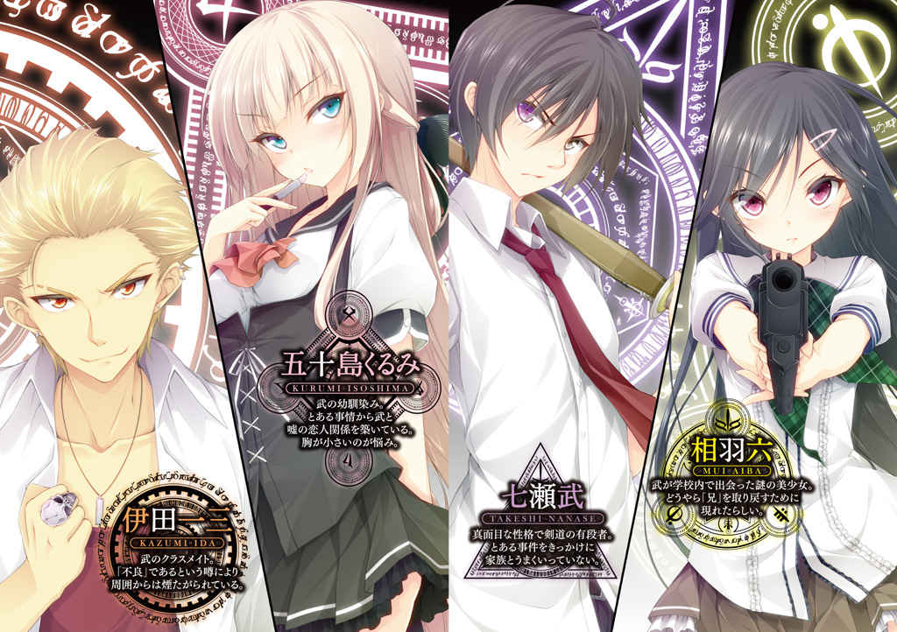
ＭＦ文庫Ｊ
魔法戦争
（立ち読み版）
スズキヒサシ
口絵・本文イラスト● 瑠奈璃亜
「兄さん！」
暗い地下鉄のホームに向かって、階段を駆け下りながら 相 羽 六 は叫んだ。
明かりはどこにも 点 いていなかったが、彼女の周りはほんのりと淡く照らされている。
火の玉にも似た光の球体が浮かんでいるためだ。
黄白色に光ってゆらゆらと揺れている三つの光は、六の動きに合わせて付いてくる。
呼ばれて振り返った青年は、ホームの中ほどに立ち、同じように周りに三つの光を 伴 っていた。
彼の 側 に浮いている光の玉は青白いため、少し気味悪くさえある。
六が見慣れていた制服ではなく、白いシャツにジーンズ姿で彼は冷たく見返してきた。
堅く閉じた口から返事はない。
「兄さん、捜したよ。一緒に帰ろう」
近づいて彼の腕を取ろうとしたそのとき、六の 頬 に鋭い痛みが走った。
気づけば、六は地面に投げ出されていた。
「......に、兄さん......」
叩 かれたことに気づいても、必死に顔を上げ、兄を呼ぶ。
彼はそれを見て、静かに 微笑 んだ。
その 蔑 むような冷淡な目が、 六 を 怯 ませる。
「............兄さん？」
それでも、六は手をついて上半身を起こし、ただ兄を見上げた。
見たこともない 酷 薄 な笑みを作っている兄に、胸が苦しくなる。
ふいに、彼の 嘲 笑 がゆがみ、不機嫌に顔をしかめた。
初めて、青年は口を開いた。
「何を泣く？」
六は自分が泣いていることに気づいた。
「思い出して、兄さん。お母さんのこと、お父さんのこと。わたしのこと。すべて忘れてしまったなんて信じない！」
兄の手が当たって赤くなった 頬 に、涙がつたっていた。
そんな六の態度に、青年の表情は不機嫌から 苛 立 ちに変わっていく。
憎悪に近い 眼 差 しで六を見たかと思うと、腰に巻いた革の剣帯に下げた 軍刀 を引き抜き、彼女の 眉 間 すれすれに突き出した。
「わたしを殺すの？」
六の 濡 れた 瞳 が問いかけながら、まっすぐに兄を見つめる。
「おまえを殺したくはない。おまえは我々、〈トレイラー〉に役立つ能力を持っているからな。だが、おれ個人はおまえを殺すことに何のためらいもない。それでもおれを兄だと言うのか？」
六はすぐさま 頷 いた。
「そうよ。わたしは 諦 めない。兄さんを取り戻すためだったら、何だってするわ」
サーベルの切っ先が、今にも眉間に突き刺さりそうだ。
それでも、兄をここで手放すぐらいなら、六は刺されても構わないと思っていた。
「兄さん、お願い。一緒に帰ろう」
そんな六の必死の呼びかけは、ふいに耳を 穿 つような 轟 音 によって 遮 られた。
兄の背後、隣りの駅への連結部になっているトンネルの奥から聞こえてくる。
列車が来るわけはなかった。
二人がいるこの駅構内は電気が 停 まり、 誰 一人 いない地下の 霊 廟 のようなものだ。
死んだ地下鉄のホームに、列車は来ない。
だが、六は兄の後ろに目を凝らした。
青年も今は、六ではなく線路の向こうを注視している。
近づくにつれ、それがはっきりと振動を 伴 ったエンジン音だとわかるようになると、青年はサーベルを腰に戻した。
それと同時に、六も立ち上がる。
とっさに六の腕を取り、捕まえようとした青年だったが、彼女はすばやく後ずさった。
――ようやく見つけたのに。
――捜し続けてきた兄さんをやっと見つけたのに。
こんなところで再び失うわけにはいかなかった。
暗いトンネルの向こうから、線路上を大型バイクが走り込んでくる。
六 は兄が連れ去られると思ったが、 身体 が動かなかった。
反対に兄が自分を捕まえて、彼らに引き渡すことは確かだ。
そうなったら、すべてがジ・エンドだ。
二人とも捕まってしまえば、兄を助けることは 敵 わない。
それだけは 避 けなければならない。
――敵が一人なら......。
向かって来るバイクには、一人しか乗っていなかった。
勝機があると感じた六だったが、二台目のバイクが反対側の線路からホームへと、音もなく浮き上がるのを見たとき、彼女は自分が 罠 にかけられたことを知った。
六はホームに立つ兄を大声で呼んだ。
「兄さんッ!! 」
一緒に来て欲しかった。
その手を取って、ここから二人で逃げたかった。
だが、六を見る兄の顔に浮かんでいたのは、彼女に敵対する者の冷笑だった。
二台目のバイクの前後から男が二人ホームに降りてくる。
それでも、六の視線は兄を 捉 えたままだ。
「お願いだから、一緒に来て！」
大 股 で歩み寄ってくる男たちは、フルヘルメットをしたままで 誰 なのかはわからない。
六は兄から引き離される悲しみを感じながら、きびすを返して階段へ走り出した。
その背中に突然、突き飛ばすような強風が襲いかかる。
「きゃあっ!! 」
前のめりに倒れ、起き上がろうとする間も、男たちの足音が追って来る。
何をされたのかはわかっていた。
手のひらも 膝 も痛かったが、六は立ち上がり、また走り出す。
階段を二段飛ばしで駆け上がりながら、悔しさに唇を 噛 み締めた。
ぐっと 堪 えようとしたが、涙が浮かんでくる。
無人の改札口を素通りし、長く暗い通路を走り続ける。
地上に出るための階段へ迷わず飛び込み、六はようやく 覗 いた空を見上げた。
薄曇りの鈍い光が差し込んでくる。
それでも突然の光が 眩 しくて、彼女は目を細めた。
スカートの腰に下げたガンベルトから銃を取り出し、階段の中ほどで振り返ると背後の 闇 に向かって 引 き 鉄 を引く。
黄色い 閃 光 が階段を真下に飛び、 六 は確認する間もなく残りの階段を上り切った。
背後の男たちのわめき声を引き離すように、彼女は 誰 一人 いない街中を、手の甲で涙を 拭 きながら駆け抜けて行った。
第一章 真夏の魔法少女 Magic girl in summer
一歩、玄関から踏み出した 七 瀬 武 は、まだ 僅 かに夜気の残る空気を胸に吸い込んだ。
空は雲一つない快晴だ。
午前六時三十分。
普通の高校生にしては、早めの通学時間かもしれない。
だが、武はいつものように静かに玄関扉を閉めると歩き出した。
右隣りの屋敷の立派な白い 門 扉 が自動で開いたのは、ちょうどその前に差しかかったときだ。
「おはよう、武」
武と対の学生服を着た女子が、その門の間を通って出て来ると、にこりと 微笑 んだ。
「おはよう、 五 十 島 」
武と彼女、五十島くるみは並んで歩き出す。
これもいつもの光景だ。
武の家は一般的な戸建て住宅なのだが、隣りに住むくるみの家は、近所でも有名な五十島屋敷と呼ばれる邸宅だ。
四方を広い庭に囲まれたその屋敷は、武の家の五倍以上の面積がある。
白磁の白い門が毎朝、自動で開くのを見るたび、 武 は自分の家の腰の高さほどしかない庭の 柵 のような 門 扉 を思い出して、苦笑いしてしまう。
そこから出て来るくるみは、言うなればお嬢様なのかもしれないが、武にとっては子供の 頃 からよく知る 幼 馴 染 みだ。
少し 栗 色 がかった長いストレートの髪を、今日は横髪だけやわく後ろで結わえている。
細く両端に上がり気味の 眉 に、きつい印象を与える目元、そして今はきゅっと 噤 んだままの桃色の唇と流麗な 顎 のラインが、横を歩く武の目に映る。
彼女は淡いピンク色のリップクリームを塗っている以外、化粧はしていないが、昔から良くも悪くも人目を引く容姿をしていた。
同じ 年 頃 の男子が十人いれば、十人ともが美人だと 頷 くほどで、 可愛 いと言われることは 滅 多 になく、どちらかといえば 綺 麗 といわれる部類だ。
自分が見られていることに気づいたのか、くるみは少し顔を上げて、武を見た。
「どうかした？」
武は小さく首を横に振ると、 微笑 んだ。
「いや、もう一学期が終わりなんて、早いなぁと思ってさ」
初夏の空を仰ぎながら言うと、くるみも顔を 綻 ばせる。
「そうね、春まで受験だなんだって騒いでたのに、あっという間よね」
「そうそう。 五 十 島 が私立の女子高じゃなく都立を受けるなんて言うから、おばさん達、焦っちゃって、おれまで説得してくれって頼まれるし大変だったよ」
武 が肩を 竦 めると、くるみはむくれたように口を 尖 らせた。
「自分の行く学校ぐらい自分で選べるわよ」
「あのときも、そう言って譲らなかったんだよな」
「本当にそうなんだから、仕方ないでしょ。それに今になって考えれば、これでよかったって、うちの両親も思ってるわよ」
断言するくるみに、武が 訊 き返す。
「そうかな？」
「そうよ。私立だったら、電車で通学しなきゃならないのよ。その方が危ないじゃない」
くるみが一人、電車で通学するところを想像して、武は顔をしかめた。
「確かに。家から近いってことなら、 都 立 で正解だったかもしれない」
「でしょ！」
嬉 しそうなくるみの笑顔が 朝 陽 に照らされて、きらきら輝く。
それを見ているだけで、武もなんだか嬉しくなる。
学校にいるときも、こんな風に笑ってみれば、友達の一人もできそうなものなのだが、そう思って武の表情は少し 翳 った。
一学期の間、くるみには友達ができなかったようなのだ。
クラスが別々でも、武が見ていた限りでは、くるみが 他 の女子生徒と一緒にいるところすら一度も目にしたことがない。
逆に武には、この一学期の間に友人がたくさんできた。
剣道部に在籍する武は、同じ部の一年から三年までの知り合いができたし、クラスにも数人、友人ができた。
中学からの友人もいて、それなりに知り合いは多い方だ。
くるみも実は同じ剣道部に所属しているのだが、女子が一人もいない部な上、マネージャーも彼女だけなので、実質女友達を作る環境ではなかった。
くるみは友人なんかいらないと言ってはばからないが、武としてはいつまでもそれではいけないのではないかと、やっぱり不安になってしまう。
昼休みも毎日のように武のクラスで一緒に昼食を取るし、頼りにされるのは構わないのだが、女子には女子の社会があって、そこでくるみが常に一人でいることが心配なのだ。
だからといって、友達を作れと言って作れるものでもない。
特に女子同士のことに男が口出しするのには、かなりの勇気がいるし、くるみもそれを望んでいないはずだ。
むしろ余計なことをするなと怒られるだけに決まっている。
それでも、武は隣りを歩くくるみをちらりと見て、何度でも思ってしまう。
―― 五 十 島 の良い所をちゃんとわかってやれる女の子が、どこかにいたらな。
そんな武の心情を知る 由 もなく、くるみはいつもすれ違う散歩中の 仔 犬 にひらひらと手を振って楽しそうに 微笑 んでいた。
☆☆☆
剣道部の朝練を終えた 武 が教室に入った 頃 には、すでにほとんどの生徒が 揃 っていた。
明日からの夏休みへの期待からか生徒たちの顔は明るく見え、教室の中はどことなく浮き立っている。
「 七 瀬 は？」
自分の席について数分、突然、前の席から振り向きざまに声をかけられ、武は思わず面食らった。
「え、何？」
「なんだよ、聞いてなかったのか」
声をかけてきた男子生徒は、前の席のよく話す友人の一人だ。
武と彼の机を囲んで二人ほどが、横に立っている。
その三人の目が武をじっと見つめていた。
「だから、七瀬は休み中、どこか行くのか？って」
「あ、ああ......」
武の顔に微妙な笑みが浮かんだ。
「おれは部活があるから」
「ああ、そうか、七瀬、剣道部だっけ」
三人はまた休みの話に戻っていく。
家族と旅行、塾通い、それぞれに予定があるらしい。
武はそれを適当に聞きながら、ふと遅れて教室に入って来た生徒に目をとめた。
派手な金髪に、着崩した制服、汚れてぺしゃんこになった上履きを 爪 先 に引っかけて入って来たその男子生徒が、後ろの席にバンと音を立ててカバンを置くと、数人の生徒が振り返り、 疎 ましそうに彼を 睨 んだ。
伊 田 一 三 だ。
この学校のはみ出し者。
色々な悪い 噂 が 貼 り付いた伊田のことを、生徒どころか先生も厄介者扱いしているのは周知の事実だ。
だが、伊田は自分を見ている目のほとんどを無視していたが、ふと武と目を合わせると、にっと意味ありげに笑って見せた。
それを見た武の口元がつられたように動いて、笑みを形作る。
静かなそのコンタクトに気づいた友人の一人が、顔をしかめた。
「七瀬、無視した方がいいって」
「なんだよ、どうした？」
「 七 瀬 が今、 伊 田 とさぁ」
三人が騒ぎ出したので、 武 は伊田に背を向け、慌てて彼らに否定した。
「目が合っただけだよ」
三人全員が、それもそうかと、すぐに納得する。
「七瀬と伊田じゃ、接点なさすぎじゃね」
「確かに」
「 生 真 面 目 と不良だもんな」
当然、生真面目なのが武で、不良が伊田のことだろうが、武は複雑な気持ちで苦笑いを浮かべた。
「別に生真面目ってわけじゃないよ」
しかし、武の言葉は即座に打ち消された。
「いやいや、こン中で一番真面目なヤツだ～れだっ！」
三人全員が瞬時に武を指差した。
「ほらな」
「まぁ、当然の結果だわな」
ハァ、と武がわざとらしく 溜 め 息 をつく。
「じゃあ、おれはちょっと不良になった方がいいってことか」
それもすぐに却下された。
「ダメだって」
「七瀬が不良って、想像つかねぇな」
「つか、七瀬は順当な人生を突き進みそうだよな」
三人とも、そこでうんうんと 頷 いている。
「なんだよ、順当な人生って」
呆 れた顔で武が 訊 ねると、言った友人が困惑したように宙を見上げた。
「えっ、だから......えっと......」
補足するように別の友人が続ける。
「だからさぁ、剣道続けて、警察官になって、そこそこ美人の嫁さんもらって」
「そこは、もういるだろ」
「あ、そうか」
「じゃあ、かなり美人な嫁さんになるな」
「 順 風 満 帆 な人生じゃねぇかよ！」
三人が想像している嫁が 誰 なのか、武にもわかったが、それを否定する気力も出なかった。それに否定するわけにもいかないのだ。
なんとか言い返せたのは、これだけだった。
「言いたい放題言うなよ」
三人は「真面目って素晴らしい人生への一歩かもね」などと言って、頷き合っている。
「いやいや、 羨 ましい限り」
「マジで羨ましいよ」
「あれ、でも、おまえ、法学部受けるって言ってなかったか？」
そこでようやく 矛 先 が移ったらしい。
「弁護士って最近、 儲 からないらしいんだよな。目指すのやめよっかな」
三人が別の話題にシフトしてくれたので、ようやく 武 は 安 堵 の息をついた。
それにしても 順 風 満 帆 な人生だなんて、武にとっては皮肉な言葉だった。
すでに大きくつまずいてしまった後で、人生に残されているのは 贖 罪 だけかもしれないのだ。
将来のことなど武にはまだあまりに遠く、あまりにおぼろげで、目の前に広がるものよりも、後ろに迫る暗い 深 淵 の方が、より身近でより現実的だった。
☆☆☆
終業式の後、剣道部の練習があり、武が帰宅の 途 についたのは、夕暮れも遅くなってからだった。
剣道部のマネージャーであるくるみを、隣りの家へ送り届けた後、武は暗い 面 持 ちで自宅の玄関扉を開けた。
「ただいま」
一般的な家庭なら普通に使う言葉も、武の放った家の中では 空 疎 なものとして響く。
廊下には 皓 々 と明かりがついていた。
母親のものと思われる靴の横に、自分とそう変わらないサイズの運動靴がもう一足。
奥にあるリビングの 磨 りガラスの戸に、かすかに動く影がぼんやりと映っている。
武は静かに靴を脱いだ。
そのとき、リビングから笑い声が聞こえてきて、武はどきりとした。
慌てて二階にある自分の部屋へと上がって行く。
部屋に入ると同時に、階下で母親と弟が話す声が聞こえた。
そろそろ夕食が終わった 頃 だ。
もうしばらくしたら、キッチンでご飯を食べようと、武は着替え始めた。
汗をかいたので、先にお 風 呂 に入りたかったが、これから弟が入る時間帯だ。
いつものようにその間に、夕食を 摂 らなくてはならない。
母親が食器を洗っているかもしれないが、それは仕方がないことだ。
武はできるだけ、家族の 誰 とも顔を合わさないように日々、気をつけていた。
二年前のある出来事から、ずっとそうしている。
この家の中で、自分が必要のない存在になってしまった日から、ずっと。
武は剣道の有段者だ。
特技はそれだけ。それで充分だった。
それさえあれば、自由でいられた。
家から。そして、 幽霊 のように自分を扱う家族から――。
小学生のときに剣道を始めた 頃 は、弟も一緒に道場に通っていた。
その頃の 武 と弟の 月 光 は、年子であることもあって、とても仲が良い兄弟だった。
だが、ある事件を境に、月光は武を 避 けるようになり、父と母も月光に 倣 うかのように、彼をいないものとして扱うようになった。
母親は顔を合わせても無関心で、父親は毎日帰宅するのは日付が変わってから、そして弟に至っては完全に憎まれていた。
前にこの家で笑ったのがいつなのか、武には思い出せなかった。
誰 とも出くわさないよう静かに息を潜めて暮らすだけ。
すべて、自分のせいなのだから、誰かを責めることもできなかった。
着替えが終わると、武は階下の動きに耳を澄ませた。
月光が 風 呂 に入ったのなら、大きな水音がするはずだ。
そうしたらキッチンに行って、夕食を 摂 り、すぐにまた部屋に戻ればいい。
弟がリビングでテレビを見始める頃、お風呂に入り、後はまた自室で朝まで過ごす。
慣れれば別にこの生活も悪くはない。
家族と話ができなくても、学校に行けば、人はたくさんいる。
そうは思っても、何度そう思おうとしても、武はやはり深い 溜 め 息 をもらした。
「早く明日にならないかな」
窓の方を見ると、隣りの 五 十 島 屋敷の庭に植わった名も知らない広葉樹が風に揺れて、人影のように大きく枝葉を躍らせていた。
不気味に見えるその影に、武は 囁 いた。
「早く時間が過ぎればいいのに」
樹は枝を振ってかすかに 頷 いたように動いた。
「この家から出て行けるなら、おれはどこでも行くよ。地獄だっていい」
学校では 真 面 目 で人当たりが良く、温和だと言われて友人の多い武だが、家に帰れば誰にもかえりみられることのない影でしかない。
夜が明けることが、今は武の最大の望みだった。
夏休みになれば、家にいる時間は嫌でも増える。
だから武は、誰よりも夏休みが 憂 鬱 だった。
☆☆☆
そんな気の乗らない夏休みが始まって二日目、授業がなくとも学校は部活動でやって来る生徒たちで活気に満ちていた。
「 武 、じゃあ道場でね」
学校に着くと、女子更衣室へ行くはずのくるみと別れて、武は部室へと向かった。
午前九時近くには、すでに運動部が練習を始めていて、そこかしこで掛け声が聞こえ、校舎の中からは、吹奏楽部の奏でる楽器の音が響いている。
武が部室棟のある運動場の横を歩いていると、自転車置き場の方から一人の生徒がやって来て、かなり手前で手を振ってきた。
それが 誰 なのか遠目でわかった武が声をかける。
「 伊 田 、おはよう」
「おお」
近づいて来たのは、同じクラスの伊田だ。
距離が 狭 まるにつれ、相手のきらきらと輝く頭髪が嫌でも目につく。
ワックスで立てた金髪に、学校では 許 されていないはずの私服。
そのド派手な色のＴシャツを見て、武は苦笑した。
「またそんな服着て、先生に怒られるぞ」
武が真っ赤なＴシャツを指摘すると、伊田はケッ、と口元をゆがませた。
「休みの日まで、制服なんか着てられるか。軍隊ちゃうねんぞ」
その休み中に、部活もしていない伊田がなぜ学校にいるのか、武はわからず 訊 ねた。
「補講や、補講。 七 瀬 は部活なんか？ ご苦労やなぁ」
「好きでやってるから、そう苦じゃないよ」
むしろ家から出られて 万 々 歳 なのだが、それは当然、黙っておく。
伊田はなぜかきょろきょろと辺りに目を走らせた。
「どうかしたか？」
「いや、知り合いおったら、おまえの評判に傷がつくやろ」
「評判って......」
「いやホンマに」
周囲に知った顔がないことを確認した伊田は、なぜかホッとしたように胸を 撫 で 下 ろしている。
確かにどこからどう見てもヤンキーと呼ばれる種類の伊田と、剣道一筋、良く言えば 真 面 目 、悪く言えば根暗に見える武とでは、一緒にいると妙に思われるかもしれない。
伊田はその見かけのせいで、この学校では浮いた存在で知られている。
髪を染めている生徒がいないわけではないが、先生に気づかれない程度が多く、伊田のように自己主張が激しい格好は珍しい。
しかも 大 阪 弁 で、目つきが悪いのもあってか、クラスメイトでもおいそれとは近づこうとしないのだ。
そんな中で武は、そういったことをまったく気にしていない 稀 有 な一人ではある。
「あんまり気にしなくていいと思うけど」
武 が言うと、 伊 田 は 眉 を 吊 り上げた。
「おまえが気にしなさすぎや！」
伊田がこう言うのは、実は初めてではない。
「おれが気にしないことを気にする人が、周りに多すぎるんだ」
武がぼやくように言うと、伊田は顔をしかめた。
「おまえが気にせえへんから、代わりに気にしてくれてんのとちゃうんか？ そりゃ、おれみたいなんとおったら、 誰 でもおまえが心配になるやろ。つか、おれがおまえに話しかけんのやめたらええだけなんやけどな」
へへっと申し訳なさげに目を 逸 らして笑った伊田に、武はかぶりを振った。
「おまえが話しかけて来ないんだったら、おれから話しかけるだけだけど？」
「それ、おれの優しさ、ないがしろやん」
がっくりと伊田が、うな垂れる。
「じゃあ、おれも伊田みたいに自由人になるとか。髪の毛染めて、ちょっとＨなロゴの入ったＴシャツ着て。そうしたら、話しててもおかしくないだろ」
武が良いことを思いついたとばかりに言い出すと、伊田は目を見開いた。
「それはやめ！ アカン！ そんなことしたら、頭でも打ったんちゃうんかって、おまえ病院送りになるで。って、ちょっとＨなＴシャツって何やねん。そんなん持ってんのか!? 」
「伊田がそのＴシャツ買った店なら、ありそうだからさ」
武は伊田のド派手な赤いＴシャツを指差した。
だが、伊田の目は武の 真 面 目 な顔を凝視したまま固まっている。
すると、突然、伊田がぶほっと吹き出した。
「お、おまえ......その顔で、そんなＴシャツ着たら......アカン、ツボに入った！」
いきなりゲラゲラと笑い出す。
「伊田？」
「......ア、アカン......おまえ、笑かすな......想像すると、めっちゃおかしいで」
ヒイヒイ言いながら、伊田は腹を抱えて 身体 をよじりながら、かなり長い間笑うと、ようやく治まってきたところで、顔を上げた。 眼 が涙目になっている。
「おまえがおれみたいな格好するんは、はっきり 言 うて似合わんからやめとけ。な！」
「そうかな？」
「そうやの！」
伊田がきっぱり告げたとき、校舎の方から鐘の音が聴こえてきた。
「うわ、やっべ！ チャイム鳴ってるやん。遅刻したら、単位もらわれへん。じゃあ 七 瀬 、またな！」
「あ、ああ......」
「その格好キープやで！ ＨなＴシャツなんて論外やからな！」
そこでまた、ぶふっと吹き出し、 堪 えきれずに笑いながら伊田は走り去って行った。
武 はその場で「そんなに似合わないかな」と 呟 くと、ようやく部室棟の方へ歩き出す。
武が部室へたどり着くと、中で同じ一年の部員が先に着替えていた。
「よぉ、 七 瀬 」
「おはよ」
狭い四畳ほどの部室には、ロッカーが壁沿いに並んでいる。
道着を取り出して、武も着替え始める。
すでに 他 の部員は着替え終わって、道場へ行ってしまった後らしい。
急いで着替え始めた武に、友人が言った。
「さっき、 伊 田 といなかったか？」
「見てたんなら、声かけろよ」
部室に来る直前に見たのだろう。
隣りのクラスなので、伊田の顔ぐらいは知っているだろうし、ついでに 挨 拶 してもよかったのにと武が言うと、友人は慌てて首を横に振った。
「無理無理。だって伊田 一 三 だぜ？ おまえ、よく話しできるな」
「別に悪いヤツじゃないよ」
紺色の 袴 をはきながら武が言う。
「そうかもしんないけどさ。見た目アレだし、ちょっとなぁ。一緒にいるだけで、先生に目ェつけられそうっつうか」
一応は進学校である都立 桜 谷 高校では、一年時から内申を気にする生徒が多い。
それは武も知っていたが、伊田と内申を関連づけて遠巻きにしているクラスメイトと、まったく同じことを彼が言って、少し驚いた。
他クラスの生徒にまでそんな風に思われているのは、ちょっと伊田が気の毒だ。
伊田が先生に注意されているのを、武は同じクラスということもあって、よく目にしていたのは本当だが、一緒にいるぐらいで成績に影響するはずもない。
「話してみると、普通のやつだよ。今日も補講だって言ってたし、根は 真 面 目 だと思う」
武が何気なく擁護すると、友人は肩を 竦 めた。
「そんなこと言うの、おまえぐらいだぜ。 噂 じゃアイツ、中学の時は族に入ってたっていうし、今もたまに駅前で他校のやつらとケンカしてるらしいじゃん」
「噂だろ。あんまり 信 憑 性 ないんじゃないか？ それに昔のことはともかく、ケンカしてるなら 怪 我 の一つや二つして来ると思うけど、そういうこともなかったはずだから。やっぱりただの噂なんじゃないかな」
それを聞いた友人は、突然、目を腕で覆う仕草をした。
「おまえって、ほんっとイイヤツだよなぁ」
感動して泣いているマネらしい。
「どういう意味だよ」
バカにしているのかと怒ったような顔になった武に、慌てて友人が否定する。
「いやいや、 嫌 味 じゃなく。マジで。不良すらも 懐 柔 する手腕！ すごいよ、 七 瀬 ！」
「やっぱりバカにしてんだろ」
「してないって」
怒っている 武 に友人は苦笑いを浮かべていたが、少ししてからトーンを変えて 呟 いた。
「でもさ、ちょっとは気をつけろよ。何かに巻き込まれたりとかしたら大変だしさ」
武はそれを聞いて、目を丸くした後、表情をやわらげて 微笑 んだ。
「大丈夫だよ。気にかけてくれてありがとな」
ただ心配してくれていただけのようだとわかったからだ。
「うぉおおぅ！」
「な、なんだよ!? 」
突然、奇声を上げた友人に驚く。
「やっぱ、武イイヤツ！」
ぽんっと肩を軽く 叩 くと、友人は一歩、二歩と後ずさった。
そして、突然戸に飛びつくと、開きながら言った。
「ってわけで、おれは先に行くから最後、戸締りよろしく！」
「おいっ！」
そのままさっさと道場へ走り去ってしまう。
「ったく、仕方ないな」
薄情な友人にぼやきながら、武は時計を見上げた。
九時三分前だ。
走っても九時までに道場には着けそうもない。
遅れると二年の先輩方に、シゴキと称して一日雑用を押し付けられてしまう。
道具一式は道場に置いてあるので、武は着替え終わると急いで部室を出た。
照りつける 陽 差 しに、汗を 滲 ませながら走り出す。
しかし数分も行かないうちに、忘れものをしたことに気づいて立ち止まった。
「いけね。タオル......」
からっぽの手を見下ろし呟く。
落胆しながらも反転し、部室へ戻って行く。
このとき、武はこれが大きな運命の選択になるとは思っていなかった。
もしわかっていたら、タオルを取りに戻ったりはしなかったかもしれない。
それでも、その瞬間、武の頭の中にあったのは、遅刻が確定しつつあることと、先輩たちから押し付けられる多々の雑用、それだけだった。
☆☆☆
タオルを忘れたことに気づいて、部室に戻ろうとした武は、ふと今朝の出来事を思い出して 眉 をひそめた。
いつもなら朝はできるだけ家族と顔を合わさないよう細心の注意を払っているのだが、今日は運が悪かった。
洗面所で髪を直している弟の 月 光 とはち合わせてしまったのだ。
突然のことで困惑し、 挨 拶 をすべきか迷っている 武 とは裏腹に、月光はうつむいたまま彼を肩で強引に押して 退 かせると、台所へ行ってしまった。
夏休みに朝から剣道部の練習がある武とは違い、中学三年生の月光は毎日塾に通っているのだが、どうしても朝の時間帯がかち合ってしまう。
夏休みではない平常時なら、武は朝練で六時半に家を出て、月光は学校が近いため、まだその時間には起きてすらいない。
ニアミスの可能性は限りなく低いので、お互いに顔を合わせることはなかったのだ。
武は部室へ戻りながら、大きな 溜 め 息 をついた。
明日からは、もっと気をつけて早めに家を出た方がいいかもしれない。
月光に嫌われているとわかっていても、面と向かって 睨 まれたり無視されるのは、いまだに 辛 かった。
それが自分のせいだとしてもだ。
部室のドアノブを 掴 んだ武は、それを回そうとした瞬間、 身体 をびくっと震わせた。
「――――？」
何か聴こえた気がした。
「......ねが............けて」
人の、それも女性の声だとわかったものの、あまりにか細くて聞き取れない。
「 誰 かいるのか？」
剣道部の部室から続きになっている別の部屋から聴こえてくるみたいだ。
武は左側の柔道部のドアを開けてみた。
柔道部の扉には 鍵 がかかっていなかった。
だが、 覗 き込んだ部屋には誰もいない。
ただ鼻をつまみたくなるような汗の 臭 いがするだけだ。
「おい、誰かいるなら返事しろよ」
さらに隣りのバレー部の部室のドアを 叩 いてみたが、声はもう聴こえなかった。
「気のせい......か？」
首を 傾 げながら、剣道部の部室に戻ろうとした武は、五メートルほど先のドアが勢いよく開いて大きな音を立てたので、また振り返った。
「......おねが......い、たすけ............」
そのシャワールームから、よろけながら出てきた人物は、そう 呟 きながら地面にぱたりと倒れた。
まず目に入ったのは、彼女の黒髪。
鴉 の羽根のように 朝 陽 に反射して輝きながら、地面にふわりと広がっていた。
それから見たことのない制服。
半 袖 ブラウスの膨らんだ袖に、三本の紺のラインが入っている。
そこから伸びたあまりに白く細い腕が、力なく地面に横たわっていた。
そっと近づくと、彼女は薄紅色の唇を少し開いたまま、目を閉じている。
歳 は同じぐらいだろう。
武 はしゃがんで、彼女の薄い肩に触れた。
「あ、あの......大丈夫？」
触れたところから、彼女の燃えるような熱が伝わってきた。
よく見ると、開いた口から懸命に呼吸を繰り返している。
まるで全力 疾 走 でもしたかのようだ。
さらに足元に目をやった武は、彼女の 膝 が出血していることに気づいた。
「どうしろってんだよ」
武は再度、彼女の肩を揺すった。
「おい、あんた大丈夫なのか？」
しかし、彼女はひたすら荒い呼吸を繰り返すばかりだ。
「仕方ないな」
誰 か呼ぶにしても、すでに部活が始まっていて、辺りに人は見当たらない。
武は彼女の左腕を 掴 んだ。
「起きれるか？ ここで寝てるわけにもいかないだろ」
腕を強引に自分の肩に回させる。
それから、ゆっくり彼女を引きずるようにして、立ち上がった。
気絶しているに近い彼女は、ぐったりと武に寄りかかったままだ。
「んぐぐぐぐぐぐッ！」
そのまま一歩、進もうとしたが、やはりこの体勢では厳しいようだ。
もう一度しゃがみこむと、武は今度は背中側に彼女を引っ張り上げた。
両腕がだらりと武の胸の前に垂れてくる。
なんとか膝に力を入れて立ち上がると、武は彼女の脚を抱えるべきか 躊 躇 した。
彼女の方が身長は低いが、このままでは足を引きずることになる。
しかも、首に回った腕のせいで、その部分に重量がかかって息苦しい。
「やっぱり無理。悪いけど、脚抱えるよ」
一応、言い訳めいた言葉を吐いて、武は左右の手を回して彼女の太ももを探った。
右腕に右脚を、左腕に左脚をかけるようにして、一度飛び上がり、彼女を背中に勢いをつけて乗せる。
そうすると、引きずるよりも、かなり楽になった。
ただ、この格好を他人に見られたら、どう思われるのかが恐ろしい。
保健室は校舎を挟んだ反対側にある。
武 は急いで走り出した。
――どうか 誰 にも見つかりませんように。
そう願いながら、武は見知らぬ少女を背負って校舎の中へ駆け込んで行った。
☆☆☆
保健室へ着くまで、武は暑さと重さと妙な恥ずかしさと、それから彼女には本当に申し訳ないが、後ろめたい緊張で猛ダッシュしなければならなかった。
何しろ、気絶しているらしい彼女の吐息が耳元にすうすうとかかるし、抱えている太ももは、こんなにやわらかいものが存在したのかと思うほど、手にふにゅふにゅとめりこんでくるのだ。
そんな状態で自分はというと、気温三十度を超えた中を走ったおかげで汗だくだ。
彼女が起きたら、汗臭くて悲鳴をあげられてもおかしくない。
保健室が廊下の向こうに見えたとき、武の胸中は 安 堵 感 でいっぱいになっていた。
「すみませんッ!! 」
器用にドアを足でこじ開ける。
「先生!? いないんですか？」
保健室に 鍵 はかかっていなかったものの、人の姿は見えない。
仕方なく武は彼女を背負ったまま入って行くと、二台並んだ奥のベッドに近づいた。
少し姿勢をかがめて、片手で布団をまくり上げる。
ベッドに背を向けて、彼女を滑るように下ろすと、思わず息をついた。
「ハァ、重かった......」
ふと目についた壁の時計に驚く。
「あ、ヤバッ！ 練習！」
ベッドを見下ろした武は、 仰 向 けに寝転がった彼女を拝むように手を合わせた。
「悪いけど、どこのどなたか存じませんが、おれもう行かないといけないんだ」
これ以上、彼女に 関 わっていると、自分の首を絞めるばかりだ。
剣道部は夏前の大会で三年生が引退したため、今は二年生の天下になっている。
実権を握ったばかりの二年の先輩たちは、三年よりも厳しいのだ。
武が保健室を出て行こうとすると、背後で彼女が苦しげにあえいだ。
「う......う......」
思わず振り返ると、 睫 がかすかに震えている。
「起きた......のか？」
武はベッド 際 に戻り、彼女に声をかけた。
「............さ、ん」
うわ言のように何か 呟 いている。
「にい......さん......」
「兄さん？」
言葉を理解しようと、彼女に顔を近づける。
「行かないで、行っちゃやだ......」
急に彼女の手が動いて、 武 の剣道着の 袖 を 掴 んだ。
「ちょっ、ちょっと」
引っ張ったが、しっかりと握られていて離れない。
彼女の目の端から、透明な水滴がふわっと浮き上がってきた後、それが横へと筋を引いて流れ落ちた。
「兄さん............行かないで......」
ハァ、と武の口から 溜 め 息 がもれた。
この状態で、彼女の手を振り払ったら、あまりに後味が悪い。
「こうなったらもう十分遅刻も、三十分遅刻も同じだよな」
肩を 竦 ませると、武はもう一度、彼女を見下ろした。
目は閉じているため、おぼろげな印象だが、起きていればかなり 可愛 い子だと思う。
黒髪は 梳 かれたばかりのようにさらさらで、額にかかった前髪の黒さと反比例して、肌は赤ん坊のように白い。
少し丸みを帯びた鼻先と、その下の小さな口は、幼い印象をもたらしている。
おそらく、子供の 頃 からさほど顔立ちは変わっていないのだろう。
そのとき、武はさっきまで背負っていた彼女の感触を思い出し、思わず背筋をぴんと伸ばした。
「いやいやいや」
一人呟いて、頭を振る。
かすかに背中に感じていたやわらかい感触も、腕にめりこんでいた太ももも、今は脳裏から締め出しておいた方がいいだろう。
武はベッドの端に座り込んだ。
椅 子 を取って来たかったが、彼女に剣道着を掴まれているため、それはできなかった。
「......兄さん......か」
兄とケンカでもしたのだろうか。
それなら、できるだけ早く仲直りするに越したことはない。
自分たちのようにならないためにも。
修復できることと、できないことがあるのを、武は身をもって知っていた。
兄弟だからといって、お互いを常に無条件で 許 し合うわけではないのだ。
月 光 と最後に口をきいたのがいつか、もう武は思い出せなかった。
母親とは、学校の面談やもろもろの連絡で話すことはあったが、父ともずっと話をしていない。
同じ家にいるだけの他人と変わらない。
武 にとって、家族はそこにいて見ることはできても、まるで別の次元にいる影のような存在だった。
物思いに 耽 っていた武は、ふいに自分を 掴 んでいる手が緩んだのを感じて顔を上げた。
ベッドに横になっていた少女の 睫 がかすかに震えている。
と、突然、彼女の両目がぱっちりと開いた。
覗 き込んでいた武を 捉 えると、少女の 身体 がバネのように素早く起き上がる。
「 誰 なのっ!? 」
言いながら、少女はベッドの上で 膝 立 ちになり、スカートの腰の辺りから黒い塊を取り出し、武の前に突き出した。
「な、何......それ......」
武もベッドから立ち上がり、その黒い物体に目を留めたまま、一歩後ずさる。
「おもちゃ？」
それにしては、あまりに重々しく黒々としている。
引 き 鉄 にかけられた指は白く細いが、その弱々しさとは裏腹に、彼女の鋭く光る 眼 差 しは握られた銃と同じく殺意に満ちていた。
突きつけられた銃を前に、武はただ 茫 然 とそれを見ているだけだ。
武が硬直していると、少女はようやく頭がはっきりしてきたのか、目を 瞬 かせた。
「ここはどこ？」
問われて、武がなんとか答える。
「 桜 谷 高校の保健室だ」
「保健室？ どうして？」
「どうしてって......」
銃口はぴくりとも動かず、武の胸元に固定されていたが、あまりに非現実的な状況に、武は徐々に落ち着きを取り戻し始めていた。
わけもわからず、なぜか突然、助けた少女に銃を向けられているのだ。
現実感が 湧 かなくても仕方がない。
それに 伴 って、 苛 立 ちが募ってきていた。
保健室まで運んだあげく、心配して付き添っていたのに、いきなり――おもちゃに違いないが――銃弾をお返しにくれようと言うのだ。
腹が立っても、仕方ないだろう。
「ご丁寧におれの前で倒れてくれたから、ここまで運んで来たんだろ」
嫌 味 を込めて武が言うと、少女はそれを聞いて 眉 をひそめた。
「あなたが運んでくれたの？」
何度も同じことを答える気にもなれず、武は銃を無視して、彼女に背を向けた。
どうせおもちゃなのだから、弾が出るにしても、さほど痛くはないはずだ。
「脚を 怪 我 してるみたいだから、消毒した方がいいよ。薬箱取って来る」
武 がベッドから離れようとすると、少女はその場で立ち上がり、追って来ようとした。
「待って！」
だが、足場の悪いベッドの上で、起きたばかりの 身体 が言うことを聞かず、体勢を崩してしまう。
「あ......っ」
彼女の驚いた声に振り返った武は、とっさに両腕を差し出した。
「危なっ！」
しかし、その腕にすがりついた彼女の勢いを止められず、武までよろけてしまう。
「きゃあっ」
「うわっ」
少女をなんとか受け止めようとした武もバランスを崩して、一緒に転んでしまった。
瞬間、 頬 をさらりとなめらかな糸のようなものが 掠 めて、武の唇に生温かいものがぎゅっと押し付けられた。
妙な感触に、目を 瞠 る。
今までに感じたことのない質感だった。
しばらく押し付けられていたそれは、腕の中に落ちてきた少女が、武の胸に手をついて身体を起こすと離れていった。
激しく 瞬 きしながら、武は何があったのか確認しようとした。
「............あ......えと......」
まだ胸に手をついている少女が、目の前でぶるぶる震えている。
お互いに何があったのかを把握するのに、大分時間がかかった。
先に理解したのは、彼女だった。
「イヤァッッッ!! 」
少女は突如、大声を上げた。
そして、まだ握り締めていた銃を前に向けると、ぶっ放した。
あまりに突然のことだったので、武には 閃 光 しか見えなかった。
しかもそれが、自分の額で 炸 裂 するのを見た瞬間、身体が重力を忘れたように宙を飛び、続いて背中に激痛が走った。
「......う 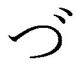 ............」
息が詰まって、呼吸ができない。
保健室の中ほどまで飛ばされ、机を倒して、横に転がり落ちる。
―― 痛 ってぇ......。何なんだよ、これ。
武が痛みと、何が起こったのかわからない混乱でいっぱいになっているのに対して、少女は完全にパニックを起こしていた。
彼女は震える手で、銃を 武 に向けたまま 膝 立 ちになっている。
がくがくと震えている自分の右手を左手で押さえつけ、銃口が武から動かないよう、彼女はまだ構えていた。
少女の頭の中は剣道着から薫った武の汗の 匂 い、そして唇に残っている信じがたい感触のみだった。
それ以外の思考は、真っ白。何もかもが忘却の 彼方 。宇宙の果てまですっ飛んでいた。
武はしばらく吹き飛ばされた状態で身動きできず、痛みをこらえていたが、やがてなんとか 身体 を起こすと、少女を見た。
彼女はまだ必死に 拳 銃 を握り締めている。
なぜそんなものを持っているのか、 怪 我 をしていたことや、倒れていたことと関係があるのか、武は一瞬のうちに考えを巡らせたが、それ以上に目の前の情景があまりに異様で、痛みと相まって頭が 冴 えてきた。
「なぁ」
武が声をかけた。しかし、少女は黙っている。
「おれ、撃たれたよな？ その銃で。なのにさ」
武は自分の額に手をやった。
「ここ、あんまり痛くないんだ。なんでだ？」
本物の銃なら、当然死んでいる場所だ。少女はまだ銃を構えて、武を 睨 んでいる。
（続きはご購入のうえ、お楽しみください。）
著者
スズキヒサシ
１月30 日生まれ。Ａ型。大阪在住。
好きなもの＝ 本。虫。恐竜。珈琲。
パン屋さんの焼き立てパン。
好きな魔法使い＝ 木之本桜。
ミンキーモモ。ハーマイオニー・グレンジャー。
魔女っ子メグちゃん。ハウル。ナツ・ドラグニル。
イラスト
瑠奈璃亜 （るなりあ）
１９８５年生まれ。関西在住へっぽこイラストレーター。
ピーチティをこよなく愛す。今年に入ってから美少女フィギュアを月一ペースで買い集めていたら置き場が無くなってきて若干戸惑いを隠せないでいる。
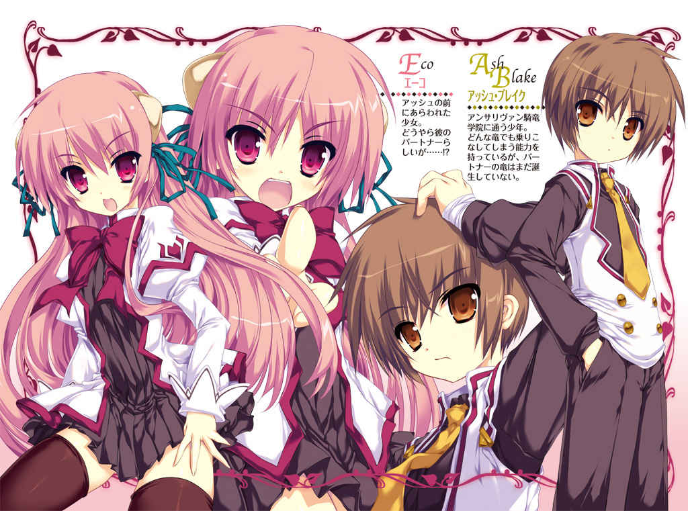
ＭＦ文庫Ｊ
星刻の竜騎士
（立ち読み版）
瑞智士記
口絵・本文イラスト● 〆 コハダ
編集● 庄司智
ロートレアモン騎士国――通称「竜を飼う国」。
北方にはゼファロス帝国、南方にはシェブロン王国。
大陸の二大列強に挟まれた、この人口五百万足らずの小国には、ある特殊な学院が存在する。
アンサリヴァン騎竜学院。
ドラゴンと契約を交わした少年少女たち―― 竜飼い人 を教え、導くための学院である。
第一話 エーコは竜の娘
誰 かがもぞもぞとベッドにもぐりこんでくる気配に、アッシュは身震いした。
――今夜も来たのか......！
暗 闇 の中、見るも 妖 しげな少女の髪が、肌が、ぼんやりと発光している。
窓ごしには、異様に大きな満月。
確か、寝る前にカーテンは閉めたはずなのに。
「ふふ......いい夜だわ。あなたも、そう思わない？」
少女はアッシュを征服したように見下ろすと、妖しい微笑を漏らした。
「ぐっ！」
ただそれだけで、アッシュは 仰 向 けのまま、身動きひとつとれなくなってしまう。
いつの間にか、少女はアッシュの腹にまたがっている。重さは感じない。ただ、少女の下半身が触れている部分だけが、じっとりとした熱を帯びている。
甘い香りが、ふんわりと漂ってきた。
見れば見るほど、 妖 艶 な少女だった。
腰まで垂れたピンクシルバーの髪。スノウホワイトの肌。 紅玉 のような 瞳 。
そして裸も同然の、しどけない下着姿。
胸元からは大きな塊がふたつ、今にもこぼれ落ちてしまいそうなほどに、ぷるんと揺れている。
極めつけは、頭部の左右に生えた角だった。ドラゴンの角によく似ている。
「君は......誰なんだ？ どうして......いつもこんなことを――うっ！」
アッシュの問いかけは、 呆 気 なく 遮 られた。少女が上半身をゆっくりと倒して、アッシュを抱き締めたのだ。
柔らかな肌に、全身をしっとりと包みこまれたような気がした。
ぽってりとした唇が、耳もとで 囁 く。
「今夜も、たっぷりと 可愛 がってあげるわ」
熱い吐息を感じた。耳たぶを 噛 まれた。こりっという音を、実際に聞いた気がした。
「だ、 駄 目 だ......そんなことをされたら――！」
身体 がビクンと反応してしまう。
少女は情け容赦なく、アッシュの身体をむさぼり続ける。うなじ、胸、 脇 腹 、腕......肌の上を 這 いずり回る舌と歯の感触に、アッシュは幾度も昇天しそうになった。
今 宵 も少女は踊る。アッシュの上で、くるくると踊り続ける。
謎 めいた少女が現れてから、今夜で七日目となる。
夜な夜なアッシュのベッドにもぐりこんでは、 悪戯 をしていく少女。
少女が 誰 なのか。
なにが目的であんな悪戯をするのか。
どうして頭に角が生えているのか。
あいにく、少女はなにも語ってはくれなかった。
少女はアッシュの上で踊るだけ踊ると、ゆらりとベッドを抜け出した。
少女の悪戯は見た目以上に強烈で、アッシュは精も根も尽き果てて、ぐったりと横たわるのみ。
少女は窓際に腰掛けると、すらりと伸びた足をゆっくりと組んだ。
普段なら、そこで少女は消失するはずだった。
――そう、これは夢なんだから......。
目を開ければ、なんの変哲もない朝が待ち受けている。
少なくとも、昨日まではそうだった。
「わたしはナヴィー」
唐突な名のりに 耳 朶 を打たれ、アッシュは驚いた。
少女が名のったのは、これが初めてだったから。
アッシュは 僅 かに残された気力を振り絞ると、上半身を起こした。
「ナヴィー......君は誰だ？ どうして、こんなことをする？」
「 これから生まれてくるわたし を、あなたに託すため......そんなところかしら」
「なにをいっているんだ？」
「さようなら。次は夢ではなく、現実で会いましょう」
月明かりに溶けこむように、ナヴィーの姿は銀色の 粒 子 となって、 霧 散 した。
◇
――どん！
明け方、大砲でもぶっ放したような音に驚いて、アッシュは目を覚ました。
その威勢の良い音が、 竜媒魔法 による花火だと気づくまでに、少し時間がかかった。
ここはアポロ舎。
上級課程 の男子が住まう学生寮である。
つい先月、三年間の 基礎課程 を修了したアッシュは、晴れて 上級課程 の一年生となり、アポロ舎の居住権を得た。
一般的な学生寮とは違い、アポロ舎は完全個室制が導入されている。以前は三人部屋に詰めこまれるのが当たり前だったことを思い出すと、夢のような生活だった。
「うー......寒っ！」
ベッドを降りるなり、アッシュは肩を震わせた。
春先とはいえ、朝はまだ肌寒い。もう一度ベッドにもぐりこみたいという衝動をなんとか我慢すると、思い切ってカーテンを開け放つ。
アッシュの部屋は三階にあるので、窓からはグラウンドを一望できる。
まだ早朝にもかかわらず、多くの生徒たちが「祭り」の準備に 勤 しんでいる。騎手を乗せたドラゴンの姿も少なくない。
空を優雅に舞っているのは、セレモニーの予行演習に励む 翼竜 の編隊。
大地をトカゲのように 疾 駆 しているのは、出走を控えた 地竜 たち。
「いよいよ、始まるんだな」
独特の緊張感をはらんだ雰囲気に、アッシュは身を引き締めた。
「おーい、アッシュ！ 起きてるか？」
そのとき、ドンドンと扉を 叩 く音とともに、友人の声が聞こえてきた。
「レイモンか？ ちょっと待ってくれ！」
アッシュは慌てて、救急箱から包帯を取り出した。
左腕をびっしりと埋めつくす〈 星刻 〉を覆い隠すべく、ぐるぐる巻きにする。
この印は、アッシュが 竜飼い人 である 証 だ。
七歳の 頃 、アルビオンの森で〈オーファンの儀〉を受けたアッシュは、ドラゴンの 幼生 を体内に宿すこととなった。
あいにく当時の記憶は 曖 昧 で、はっきりしない。
こうして〈星刻〉を授かっている以上、森の奥でマザー・ドラゴンに出会っているはずなのだが......不思議なことに、その記憶がすっぽりと抜け落ちているのだ。
忌 々 しい模様だな......と、アッシュは 自 嘲 する。
他 の生徒と比べると、アッシュの肌に描かれた〈星刻〉は異常なほど大きい。
左腕の 肘 から手首にかけて、まるで 刺 青 のような模様がびっしりと描かれているのだ。あたかも、 漆 黒 の 蛇 がのたうっているかのようにも見える。
「......待たせたな」
包帯を 綺 麗 に巻き終えると、アッシュは扉を開け放った。
案の定、悪友のレイモン・カークランドが、無駄に 爽 やかな笑みを浮かべている。
「ったく、相変わらず包帯かよ？ 進歩のない 奴 だな......」
「お前に 俺 の気持ちはわかんねえよ。普通じゃない奴の気持ちなんかな」
アッシュが 憮 然 としてつぶやくと、レイモンは苦笑した。
「すまんすまん......ん？ お前、顔が赤いぞ？ 熱でもあるのか？」
「いや、実は......ここ一週間くらい、妙な夢ばかり見るんだ」
「夢って、どんな？」
「 綺 麗 な女の子が、 俺 の布団に忍びこんできて......その......いろんなことを............」
口にするのも恥ずかしくなってしまい、アッシュはますます 頬 に熱を覚えた。
途 端 、レイモンはプッと吹き出した。
「お前、よっぽど女に 飢 えてるんだなー。さては欲求不満だろ？」
「それはお互い様だ！」
「ふっ......違うな。俺はモテないんじゃない。俺にふさわしい女がいないだけさ」
いつの間にか、レイモンは手鏡を取り出して、自分の顔に見とれている。
レイモンが極度のナルシストなのは、一部では有名な話である。事実、自他共に認める美形ではあるのだが、その性格がすべてをぶち壊しにしているという典型例だった。
「......で、朝っぱらからなんの用だよ？」
ぶっきらぼうに 訊 ねると、レイモンはずかずかと室内に踏みこんできた。
「おいおい、今日は待ちに待ったレースだぜ。レースといえば、ナンパだろうが！」
「どうしてそうなる！ お前も出場しろよ！」
アッシュが 叱 咤 すると、レイモンは底意地の悪そうな笑みを浮かべた。
「なあ、アッシュ。もう 上級課程 だってのに 幼生 が宿ったままなんて、前代未聞だよなあ」
「うぐっ......」
悔しいが、事実だった。アッシュの 相 棒 となるべきドラゴンは、今なおアッシュの体内に宿ったまま、沈黙を続けているのだ。
七歳のときに 竜飼い人 として選ばれて以来、ずっと――。
おかげで、アッシュはアンサリヴァンでの学院生活において、随分と肩身の狭い思いをしていた。
アンサリヴァンの学院生にとって、 己 の肉体に宿った 幼生 を誕生させることは、第一の使命といえる。
アッシュ以外の生徒は皆、 基礎課程 の初年度でパルを獲得している。
――パル。
それは「 竜飼い人 が自らの手で育てたドラゴン」を意味する、極めて神聖な言葉だ。もちろん、 幼生 のまま 竜飼い人 の 身体 に宿っているだけでは、パルとは呼べない。
「なあ、アッシュ、お前がレースに出場するためには、なにが必要だ？」
「それは......ドラゴンだ」
「なんなら、俺のパルを貸してやってもいいんだぞ？」
レイモンのパルはブリギットという。
アッシュ自身、ブリギットを借りるという選択肢は考えていた。レイモンがレースをサボるのも、なんとなく予想はしていた。
とはいえ、このままレイモンの申し出を素直に受け 容 れるのは 癪 だったので、ささやかな抵抗を試みる。
「いや、マックスのアリアンロッドを借りるって手もあるぞ。あいつは生徒会に入ってるから、レースには参加しない」
そう、生徒会のメンバーは大会の実行委員を兼ねているため、選手として出場することはできないのだ。マックス自身、既に不参加を表明していた。
「甘いな、アッシュ。あのマックスが、素直に自分のパルを貸すと思うか？」
「僕がどうかしたのか？」
「うおっ！」
文字通り、レイモンは飛び上がった。 噂 をすれば影。いつの間に忍び寄っていたのか、マックスが戸口に 佇 んでいる。
「よお、マックス。おはよう......」
アッシュが声をかけると、マックスは無言のまま、人差し指で眼鏡の位置を補正した。
マクシミリアン・ラッセル。アッシュとは同級生ながらも、既に 騎士王 から 竜騎士 の称号を授かっている優等生である。生徒会では会計を担当している。
「朝っぱらから騒がしい 奴 らだ。なにをしている？」
「アッシュが 俺 のブリギットを貸してくれって、泣いて頼んでくるからさ」
「 誰 が泣くか！ ところでマックス。お前のアリアンロッドなんだけど......今日だけ貸してくれないか？」
アッシュはマックスに詰め寄った。
「俺、どうしてもレースに出場したいんだよ。いや、出場したいっていうか、しなければならないんだ」
そう、アッシュは ある理由 から、今日のレースになんとしても出場しなければならないのだった。
「ふん。僕のパルを借りたいだと？ 冗談は顔だけにしておけ」
「そこまでいうか！」
「そんなことよりも、だ」
マックスはじろりと、アッシュを真っ正面から見据えた。
「なんだこの部屋は！ 健全な精神は健全な部屋に宿ると、あれほど教えただろう！」
鬼気迫る 形 相 で、マックスは部屋に踏みこむと、猛烈な勢いで掃除を始めた。事実、アポロ舎で独り暮らしを始めて以来、アッシュの部屋はちらかる一方だった。
「なんていうか...... 懐 かしい光景だな」
掃除に励むマックスを苦笑交じりに眺めつつ、レイモンがぼそりとつぶやいた。
――アッシュ、レイモン、マックス。
基礎課程 の生徒だった 頃 、三人はメルクリウス舎の一室で同じ時間を共有した。個室など夢のまた夢で、三人部屋に詰めこまれるのが基本だった。当時からマックスの潔癖性は度を過ぎており、うんざりさせられる場面も多かった。
「......そもそも、僕はずっと不思議に思っていたんだ」
掃除を終えた 途 端 、マックスはアッシュを振り返った。
「君はどうして、他人のパルを乗りこなすことができるんだ？」
「いや、どうしてっていわれてもな......」
「本来、ドラゴンは自分が 主 と定めた人間にしか背中を許すことはない。過去にも多くの 竜飼い人 が、他人のパルを乗りこなそうと試みたが、無理だった」
「確かにそうだけどさ。一応、先生からも許可はもらっているんだ。問題ないだろ？」
「......相変わらずデタラメな 奴 だ。どうしても出場したければ、レイモンからブリギットを借りるんだな。生徒会長には、僕のほうから話を通しておく」
事務的にそう告げると、マックスは 呆 気 なく立ち去った。
「ったく、相変わらずなのはどっちだよ」
苦笑交じりにつぶやいたレイモンに、アッシュは迫った。
「それよりも、だ。お前のブリギット、貸してくれるんだろうな？」
意外にも、レイモンは会心の笑みで応じてくれた。
「おうよ！ あの お姫様 をギャフンといわせてやってくれよな」
レイモンの言葉に、アッシュは真顔でうなずいた。
「もちろん、そのつもりだ」
◇
盛大な花火が、立て続けに大気を震わせている。
学院内は、すっかりお祭りの雰囲気に染まっていた。
レイモンは単純に「レース」と呼んだが、正式名称は「 白羊宮 の騎竜祭」という。
毎年、 白羊宮 の月（＝ 第四の月）に開催されるからである。
アンサリヴァンにおける、春の恒例行事である。
学院指定の 騎竜服 に着替えたアッシュは、騎手のひとりとして、学院区の運動場で待機していた。
天気は快晴。絶好のレース 日和 である。
既に多くの生徒がドラゴンに騎乗して、グラウンドに集結していた。
ざっと見たところ、五十人は超えているだろう。
アッシュもまた、レイモンから借り受けたブリギットに騎乗していた。 手 綱 を小刻みに操作して、グラウンドの中央に向かわせる。
「ご機嫌だな、ブリギット」
アッシュが声をかけると、ブリギットは「くぅん」と甘えたような声を漏らした。
ブリギットはまだ幼竜の段階ながら、 地竜 だけあって 四 肢 は発達している。アッシュにとっても、お気に入りのドラゴンだ。ただし翼はそなえておらず、ドラゴンというよりはトカゲに近い雰囲気がある。
そのとき、周囲の生徒たちが歓声をあげた。
「おはよう、諸君」
即席で組み上げられた舞台の中央、生徒会長の 凛 々 しい姿をアッシュは認めた。
決して大声を張り上げたわけではないのに、その声はしなる 鞭 のように、ぴしりと響き渡った。
紅 蓮 の髪に、切れ長の 双 眸 。冷徹そうな 美 貌 は大理石の彫像めいて、触れれば切れるような緊張感を漂わせている。風に舞う花びらですら、よけて通りそうなほどだった。
レベッカ・ランドール。
またの名を、〈 真紅の女帝 〉。
鮮烈な赤毛の輝きと、剛胆な気質、そしてなによりも、圧倒的な強さに由来する 渾名 である。
相 棒 の 聖竜 クー・フリンを駆るレベッカには、実技の教官ですら 敵 わない。「学院最強の生徒は 誰 か？」と問われたら、誰もが迷うことなく、レベッカの名を挙げるだろう。
「本日はお日柄も良く――などという、平和なゴタクを述べるつもりはない」
たちまち、生徒たちが苦笑を漏らす。「本日はお日柄も良く」というのは、学院長の口癖だからだ。あいにく、騎竜祭は生徒会主催のイベントなので、学院長の出番はない。
「良いか、諸君。騎竜祭はただの運動会ではない。アンサリヴァンの伝統行事であり、結果は公式記録として残される。出場するからには、表彰台の真ん中を目指すべきだ。とはいえ、諸君に伝統だの公式記録だのといっても、大した原動力にならないことは承知している」
多くの生徒がまたもや苦笑を漏らしたが、それも長くは続かなかった。
「優勝者には、一日デート券を進呈しよう。もちろん、相手はこのレベッカ・ランドールが務めようじゃないか」
たちまち、男女を問わず大興奮の歓声が 渦 巻 いた。
「静粛に！」
レベッカの 一 喝 により、グラウンドは一瞬で静まり返った。
「次は出場選手代表の言葉だ。 上級課程 一年、シルヴィア・ロートレアモン王女殿下」
レベッカの呼びかけに応じ、舞台に向かう女生徒の姿を視界に収めた 途 端 、アッシュは 拳 を強く握り締めた。
「姫様が......選手代表だったのか！」
シルヴィアは 燦 然 と輝く金髪を後頭部でまとめ、背中に騎士王家の紋章が縫いこまれた 騎竜服 に身を包んでいる。自身のパル、 聖竜 ランスロットの背から華麗に飛び降りると、舞台に上がった。
ロートレアモン騎士王家の第四王女、シルヴィア。
またの名を、〈 蒼氷の姫君 〉。
正真正銘、ロートレアモン騎士国を統治する 騎士王 の娘である。
◇
ずっとパルに恵まれなかったアッシュは、他人のドラゴンを借りることで、実技の授業と試験を乗り切ってきた。
そうでなければ、とっくに落第していただろう。
マックスが評した通り、周囲の学院生から見れば、他人のパルに乗るなど言語道断、命懸けの蛮行に 他 ならないのだが、アッシュからしてみれば不思議で仕方がなかった。
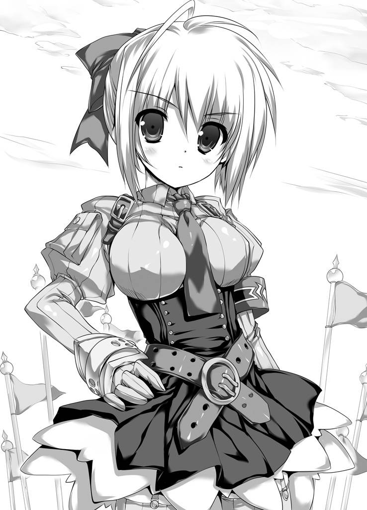
アッシュが接すれば、どんなドラゴンでも 嬉 々 として背中を差し出す。 翼竜 だろうが 地竜 だろうが 水竜 だろうが、アッシュは軽々と乗りこなしてみせた。
いつしかアッシュは、「どんなドラゴンでも乗りこなせる男」として、学院内で 噂 されるようになっていた。
その事故が発生したのは、ほんの数日前のことだった。
授業中、アッシュはレイモンから借りたブリギットを駆って、 騎竜格闘術 の訓練を受けていた。実技を得意とするアッシュは、次々と周囲の生徒たちを倒していった。
慢心がなかったといえば、 嘘 になるだろう。
格闘に没頭していたアッシュは、たまたま自分の背後を歩行していたランスロットに気づくのが遅れたのだ。
ドラゴン同士の接触は極めて危険であり、学院が最も恐れる事態である。
常 日 頃 、教官は口を 酸 っぱくして「接触は厳禁！」と注意する。
幸い、ブリギットのお 尻 とランスロットの左足が軽く当たった程度だったので、騎手にもドラゴンにも 怪 我 はなかったのだが、ランスロットを 溺 愛 しているシルヴィアは激怒した。
「お前は実技の授業をなんだと思っているっ!? 遊び半分でドラゴンに乗るなど、論外だ！」
シルヴィアの 生 真面目 すぎる性格は、学院内でも有名だった。
授業に対する 真 摯 な姿勢、そしてランスロットを早々と 聖竜 に成長させた功績を高く評価されながら、そのあまりに堅苦しい言動の数々は、陰口を 叩 かれる原因となっていた。
シルヴィアの 美 貌 を賛美する生徒は少なくないが、その反面、 親 睦 を深めようとする生徒はひとりもいなかった。
「その...... 俺 が悪かった。この通り、謝る」
アッシュはブリギットから降りると、素直に頭を下げた。
普段のシルヴィアなら、そこで矛先を収めていたはずだった。自分の非を素直に認めた相手に対して、シルヴィアは寛容なのである。それが騎士王家の家訓らしい。
だが、その日だけは違った。
シルヴィアはさも不機嫌そうに、アッシュの顔を穴が空くほど見つめると、珍しく絡んできたのだ。
「その腐った脳みそでよく考えるがいい！ お前のための学費、衣料費、食費、住居費、そして教材費！ 誰 が支払っていると思っている？」
「......王宮だっていいたいんだろ？」
「違う。確かに出資しているのは王宮だが、元々は国民の血税だ。これ以上、遊び半分で 穀 潰 しを続けるつもりなら、さっさと退学してしまえ！」
「はあ？ 退学って......本気かよ？」
「働かざる者食うべからず！ 我が家の家訓だ！」
蒼氷色 の 瞳 に 睨 まれたアッシュは、シルヴィアの異名――〈 蒼氷の姫君 〉の由来を初めて知った。 基礎課程 ではほとんど接点がなかったため、このときが初対面も同然だったのだ。
だが、たとえ相手が王女殿下とはいえ、そこまでいわれて大人しく引き下がるのは、アッシュのプライドが許さなかった。
「お前んちの家訓なんて知るかよ！ ちゃんと謝ったんだから、もういいだろ？」
「謝ってすむ問題ではない！ そもそも、お前はまだパルに恵まれていないそうだな？」
「そ、それは......」
痛いところを突かれ、アッシュは言葉に詰まった。アッシュの 噂 は、どうやらシルヴィアにも伝わっていたらしい。
「 主 に似て間の抜けたドラゴンだ。あるいは、 とっくに死んでいる のではないか？」
その瞬間、アッシュの 身体 を激しい怒りが貫いた。
「おい......そいつは、なんの冗談だ？」
背後から「やめとけ、相手が悪すぎる！」と、レイモンが小声で叫ぶのが聞こえたが、アッシュは構わなかった。
過去にも、学院生から似たような暴言を浴びたことならあった。パルに恵まれないアッシュは、なにかと標的にされやすい生徒だったのだ。
自分に対する 嘲 笑 や 罵 倒 なら、甘んじて受け 容 れた。
だが、パルに対する暴言に対しては、アッシュは絶対に許さなかった。
相手が謝るまで、徹底的に反撃した。
そんなことを繰り返していたら、いつしか被害者であるアッシュのほうが、問題児として見なされるようになった。
今では「学院一の問題児」といえば、 誰 もが 上級課程 一年のアッシュ・ブレイクを思い浮かべる。
「今の言葉、取り消してもらおうか」
たとえ相手が王女殿下だろうと、いって良いことと悪いことがある。
アッシュは怒気もあらわに、一歩を踏み出した。
いつしか授業は中断となり、睨み合うふたりに注目が集まり始めた......。
◇
仮設の舞台に上がったシルヴィアは、運動場に集まった生徒たちをぐるりと見渡した。
やがて、その 蒼 い 瞳 がぴたりと一箇所に定まる。
「........................」
シルヴィアは明らかに、アッシュだけを見据えている。
あの日、シルヴィアが失言を取り消すことはなかった。相手が男子なら、その時点でぶん殴っていたところだが、さすがに女子を殴り倒すわけにはいかない。ましてや、相手は王女殿下である。
仕方なく、アッシュはひとつの条件を突きつけてやった。
――今度のレースで 俺 が勝ったら、さっきの言葉を取り消してもらうぞ！
シルヴィアはただ一言、「いいだろう」と応じた。
それだけで、アッシュには充分だった。
シルヴィアはアッシュから視線を外すと、口を開いた。
過ぎ去ったばかりの冬を思い出させるような、冷たい 声 音 が大気を震わせる。
「いかなる勝負事であろうと、全力を尽くすべし。それが我が家の家訓だ――以上」
シルヴィアはあっさりと舞台を降りると、 颯 爽 とランスロットに騎乗して、運動場に戻ってきた。
数秒の沈黙を挟んで、義務的ともいえる拍手が、まばらに聞こえてきた。あまりの素っ気なさに、 誰 もが 呆 気 にとられているのだろう。
「なにあれ？ 感じ悪ーい！」
「そうそう。優秀なのはランスロットであって、その飼い主じゃないのにねえ」
「王族だからって、調子に乗ってるんじゃないの？」
「初代の 騎士王 ってさ、元々はシェブロン王の騎士だった人でしょ？ 要は、軍人上がりの家系ってことじゃない」
「まったく......兄が兄なら、妹も妹よね」
アッシュがさりげなく背後を 窺 うと、同じ学年と 思 しき女子たちが、ぼそぼそと毒づいている。最初は聞き流そうとしたものの、「兄が兄なら、妹も妹」――その言葉が、少しだけ気になった。
もちろん、その「兄」とは、あのジュリアス王子のことだろう。
―― 竜殺し のジュリアス。
騎士王家の 嫡 子 でありながら、最大の 禁 忌 を犯したジュリアス王子。
彼がどうしてそのような暴挙に及んだのか、その理由は今も不明である。なぜなら、その真意を供述することなく、禁忌を犯した重罪人として処刑されたからだ。
なんだか嫌な雰囲気だな......と、アッシュは思った。
確かにジュリアスは騎士王家の家名を傷つけたが、今さら十年も昔の事件を掘り返すことに、意味があるとは思えなかった。
「......案外、苦労してるんだな」
シルヴィアに対し、アッシュは初めて同情めいた気持ちを抱いた。
◇
いよいよレース開始の時刻となった。
スターティング・グリッドは、授業中に実施された模擬レースの結果に準じる。
一般的には、最速の騎手が 最前列 に付くのが通例だ。
だが、今年の騎竜祭は違った。
模擬レースで最下位だった生徒から順に、グリッドに付いていくのだ。
提案したのは、レベッカ本人らしい。
そのほうがレースが面白くなるからという、単純な理由だった。
模擬レースでは一位を記録したシルヴィアは、この新ルールに従って、最後列からのスタートとなる。
一方、アッシュもまた、最後列を義務付けられた。
他人のパルを借りて出場するという特例を認めてはもらえた反面、万が一の事故を懸念されてしまったのだ。
アッシュとしては、望むところだった。
出場資格を与えられただけでもありがたいことだし、こうしてシルヴィアの隣に並ぶこともできた。白黒をはっきりさせるには、格好のポジションである。
刻々と迫るレースに向けて、アッシュは気を引き締めた。
シルヴィアは一度も声をかけてはこなかった。
アッシュ自身、今さら言葉を交わす必要性など感じてはいない。
ついに、スタートの準備が整った。
観客席の声援が最高潮に達する。
少しずつ、スタート直前に特有の緊張感が 漲 ってくる。
模擬レースのときとは比較にならないほど、アッシュは 鼓 動 が高鳴るのを覚えた。
「 位置に着いて ！」
遥 か頭上からレベッカの声が降り注いだ。
レベッカは制服姿のまま、パルに騎乗していた。本来ならば校則違反なのだが、今日はお祭りである。お祭りといえば、無礼講。 誰 も見とがめはしない。
威 風 堂 々 、クー・フリンの首の上に仁王立ちしているレベッカの勇姿に、誰もが目を奪われている。
それがレベッカの騎乗スタイルだった。
クー・フリンの巨体に合う騎乗具は存在しないし、レベッカ自身、その手の器具でパルを束縛するのは嫌いだと、公言してはばからないのだ。
レベッカは 魔 導 式 の騎銃を構えている。
恐 いくらいの静けさが訪れた。
聞こえてくるのは、自分自身の 鼓 動 と、ドラゴンたちの荒々しい息遣いのみ。
あれほど騒がしかった観客席も、沈黙に支配されている。
「用意――」
レベッカが銃口を空に向ける。
竜媒魔法 に特有の発光現象と同時に、銃声が 轟 いた。
砂 塵 を 朦 々 と舞い上げて、 地竜 の群れが一斉にスタートする。
と同時に、 尻尾 に発煙筒を装着した 翼竜 の編隊が華麗に 飛 翔 し、大空に七色の軌跡を描いた。
◇
アッシュの期待に 応 え、理想的なスタートを決めたブリギットは、ランスロットの背後にぴたりと付けると、猛追した。
一定の距離間を保ったまま、騎手たちはグラウンドを一周する。
そのまま大歓声に見送られ、市街区へと至る門を通過。
「全速前進！」
アッシュの掛け声を受け、ブリギットが 咆 哮 を放った。
まずは聖ダーラム広場に至る大通りを、全速力で駆け抜ける。
聖竜 であるランスロットの加速は 凄 まじく、一騎、また一騎と追い抜いていく。
ランスロットの背後に収まり、空気抵抗を最小限に 留 めているブリギットもまた、次々と順位を上げていった。
ところが、聖ダーラム広場を横切って、狭い市道に差し掛かった時点で、ランスロットが急に速度を落とした。
「......妙だな」
アッシュはランスロットの陰から前方に目を凝らした。
「あいつら......！」
四騎の生徒が横一列に並んで、露骨なまでに進路を妨害しているのだ。先ほどシルヴィアの陰口を 叩 いていた連中だと、アッシュはすぐに気づいた。
当分の間、この狭い市道は延々と続く。角度のきついコーナーも多い。市街地を抜けるまでは、我慢を強いられる展開になりそうだった。
しばらく観察を続けているうちに、アッシュには女子連中の 肚 が読めてきた。
「なんて 奴 らだ......」
女子たちの標的は、あくまでもシルヴィア一騎らしい。
事実、シルヴィア以外の生徒が背後に近づくと、わざとらしく一頭分のスペースを空けてやり、先行させるのだ。
シルヴィアは次々と、順位を落としていった。アッシュともども、再び最後尾に落ちてしまうのに、さほど時間はかからなかった。
アッシュは迷った。
シルヴィアを追い抜くのは簡単だ。妨害工作に励む女子たちも、アッシュなら簡単に通してくれるだろう。彼女たちにとっては、アッシュなど部外者に過ぎないのだから。
「ふざけやがって！」
アッシュは怒りのあまり毒づいた。
「おいっ！ あんなの許していいのかよっ？」
アッシュはランスロットの真横にブリギットを寄せると、大声を張り上げた。
聖竜 と 地竜 では高低差が大きいため、シルヴィアを見上げる形となる。
シルヴィアはちらりとアッシュを見下ろすと、 憮 然 とした面持ちで返した。
「......ブロックもチームプレイも、ルール違反ではないからな」
「 綺 麗 事 いってるんじゃねえよ！ 本当は腹が立ってるんじゃないのか？」
「敵のお前に口出しされるいわれはない！ 行きたくば、さっさと行け！」
「ったく、意地っ張りな奴だな。そんなだから、友達ができないんだよ！」
「なっ......なんだと！」
アッシュはシルヴィアを無視すると、ブリギットをさらに加速させた。見る見るうちにランスロットを引き離し、横一列に並ぶ四騎に接近する。
案の定、アッシュの接近に気づいた女子のひとりが、「さっさと行けば？」といわんばかりに、右端に一頭分のスペースを空けた。
性悪な女子たちとは目を合わせることなく、アッシュは空いたスペースにブリギットの鼻先を突っこんだ。
女子たちは、アッシュがすんなりと前に出ると思ったことだろう。
「ふっ......そうはいくか！」
アッシュは小刻みに 手 綱 をさばくと、真横を走る女子に向けて、容赦なくブリギットの 体 躯 を寄せていった。
今にも接触寸前、ルール違反すれすれの幅寄せだった。
「ちょっと、あなた！ どういうつもり？」
女子のひとりが、 蒼 白 になって怒鳴った。
横並びとなった四騎の列は、アッシュが幅寄せした結果、互いの距離が狭まり、いつ接触してもおかしくない状況に陥っている。
接触を免れるためには、列を崩すしかない。
もちろん、それこそがアッシュの 狙 いだった。 駄 目 押しとばかりに、女子たちに声をかける。
「いやー、悪いな。ほら、人から借りたドラゴンだからさ。制御が難しくて」
たちまち、女子のひとりが血相を変えた。
「こいつ......アッシュ・ブレイクだわ！」
幸か不幸か、アッシュの悪名は絶大な効果をもたらした。
「学院一の問題児よ！」
「いやー！ 近寄らないで！」
「きゃあああっ！」
たちまち、四騎の女子たちは隊列を崩してしまった。互いに軽く接触し、次々とスピンを喫してしまう。
女子たちの甲高い悲鳴と、ドラゴンたちの 咆 哮 が街路に 空 しく響き渡る。
後方で我慢を強いられていたシルヴィアは、脱落した四騎を華麗によけると、一気に加速した。
「れ、礼などいわんぞ！」
ぶっきらぼうに告げたシルヴィアは、ほんの少し、 頬 を染めていた。
◇
市壁に囲われた街を飛び出し、街道を北上すると、今度はフィアナの森に突入する。
森の中もコースの一部となっているのだ。
市街地とはまた違った意味で、テクニカルなコースといえた。
異変は、森に突入した直後に発生した。
「......ブリギット？」
ランスロットを相手に、ずっと快走を続けていたブリギットが、急にスローダウンしてしまったのだ。無論、その好機を見逃すシルヴィアではなかった。
あっという間に先行されてしまう。
「どうしたんだ......？」
ついにブリギットは足を止めた。
呼吸が荒い。見るからに苦しげな様子だった。
アッシュはようやく、自分の過ちを悟った。
「そうか...... 俺 、無理させてたんだな」
シルヴィアとの競走に集中するあまり、アッシュはブリギットの体力が限界を迎えていたことに気づかなかったのだ。
考えてみれば、ブリギットはずっとランスロットと同じペースで走っていた。
聖竜 と 地竜 では、基礎体力が根本的に異なる。完走を目指すなら、序盤から 地竜 に 相応 しいペースを維持するべきだったのだ。
「......ごめんな、ブリギット」
アッシュが謝ると、ブリギットは申し訳なさそうに、「くぅん......」と鳴いた。自分の 不 甲 斐 なさを悔しがっているようにも見えた。
そのとき、後続の集団が 長 蛇 の列を 為 し、アッシュの 脇 を次々と走り抜けていった。
腹の底を揺るがすような地響き。
朦 々 と舞う砂煙。
地竜 の群れが森の中を 疾 駆 する様子はただただ壮観で、しばらくの間、大地の震動が収まらないほどだった。
この時点で、アッシュのレースは幕を閉じた。
シルヴィアとの個人的な勝負も決した。シルヴィアに例の暴言を取り消させるという目的は、結局、 叶 わなかった。
心残りがないといえば、 嘘 になる。できれば、ゴールまで走り続けていたかった。
それでも、アッシュは不思議と 清 々 しい気持ちを覚えていた。
「そっか......姫様と走るの、楽しかったんだ」
悔しいことに、アッシュはその事実に気づいた。
気づかされてしまった。
そのとき――。
がさり、と妙な物音がした。
「――！」
アッシュは 咄 嗟 に振り返ると、茂みのほうを 睨 み据えた。
「...... 誰 かいるのか？」
万が一の事故に備えて、競技中はアンサリヴァン市の保安官が森の中を巡回しているという。森の中で誰かの気配を覚えたとしても、それ自体は不思議なことではなかった。
だが、返事がない。相手が保安官なら、リタイアしたアッシュのもとに駆けつけてくるのが筋だろう。
アッシュは警戒しつつ、周囲に視線を巡らせた。
不審者の姿こそ見当たらないが、アッシュは確かに 誰 かの視線を感じたのだ。
妙な胸騒ぎを覚えた。
「悪い。お前はここで待っててくれ」
アッシュはブリギットに声をかけると、森の奥へと向かった。
◇
フィアナの森は、アンサリヴァン市の北西に広がっている。西部にはルビニア湖を擁しており、騎士国内でも有数の森林地帯である。
血管のように大地を 這 う木の根につまずかないよう、注意しながら歩き続ける。
再び、誰かの気配を感じた気がした。
「そこだ！」
アッシュは自分の直感を信じ、前方の茂みに向けて小石を投げつけた。
やがて、茂みがガサリと音をたてた。
「良い勘をしている。ただの学生にしておくには、惜しい人材だな」
青年のような快活さと、老人のような深みを感じさせる 声 音 だった。
「お前は......？」
茂みの奥から現れたのは、長身 痩 躯 の男だった。左手には、先ほどアッシュが 投 擲 した石を握り締めている。
男は旅人風の装束に身を包んでいた。街道ではよく見かけるタイプの服装だが、アッシュは驚きのあまり言葉を失った。
なぜなら、男が銀色の仮面を装着していたからだ。
顔の上半分を、すっぽりと覆い隠している。
のみならず、高貴な輝きを放つ銀髪には、赤毛が交じっていた。あたかも、銀色の 生 地 に鮮血を垂らし、 呪 いの言葉を書き連ねたような 禍 々 しさを感じさせる。
男は、右手に黒光りする物体を構えていた。
「帝国製の......機械兵器？」
アッシュは動くに動けなくなった。
一応、知識では知っていた。
険しい山脈の向こう側を領土としているゼファロス帝国では、ドラゴンの加護が受けられない代わりに、機械文明を発達させてきた歴史がある。
今、仮面の男が構えている銃もまた、機械工学の産物なのだろう。確か「 短機関銃 」という名だと記憶している。 拳 銃 並みにコンパクトながら、連射機能をもつという。アッシュが下手に動けば、 蜂 の巣にされるのは目に見えていた。
アッシュの警戒心を読んだらしく、男は唇の端に冷笑を刻んだ。
「賢明な判断だな、少年」
「お前......帝国軍人なのか？」
「そう思うか？」
アッシュは判断に苦しんだ。
男が構えているのは、明らかに帝国製の銃器。
だが、帝国人にしては 訛 りがないのが気になった。それどころか、男が話すシェブロン語は極めて洗練されている。いわゆる「キングス・シェブリッシュ」と呼ばれる、 完 璧 なシェブロン語なのである。
アッシュは今、自分が極めて微妙な状況に陥っていることを自覚していた。
もし、仮面の男がアッシュの想像通り帝国人であれば、一体なんのためにアンサリヴァン市の周囲でこそこそしているのか。
最悪、男が帝国軍の情報部員であるという可能性も考えられた。
大陸の二大列強たるシェブロン王国とゼファロス帝国は、およそ五十年にわたり冷戦下にある。
一方、王国と帝国の 狭 間 に位置するロートレアモン騎士国は、シェブロン王国の臣下に当たる。
元々、騎士国は王国から派生した国家なのだ。一般的な同盟国同士よりも、 遥 かに強い 絆 で結ばれている。
帝国人が物騒な銃器を 懐 に携え、騎士国の領内を 嗅 ぎ回っているという事態は、決して許されることではない。それはつまり、王国に対する敵対行為に相当するのだから。
とはいえ、目の前の男をどうこうするには、アッシュはあまりに無力だった。
「ところで少年。 歳 は幾つだ？」
突然、仮面の男があまりに場違いな質問を発したので、アッシュは虚を 衝 かれた。
「十六だけど......それがどうした？」
「妙だな。その歳で、まだ 幼生 を宿しているとは」
アッシュは 愕 然 として、後ずさった。
「なっ......！ わかるのか？」
「私には見えるのだよ。この身に帯びた 呪い ゆえにな」
「 呪 い......だと？」
アッシュは 眉 をひそめた。帝国人から「呪い」などという、非科学的な言葉を聞こうとは、夢にも思わなかったのだ。
あいにく、その意味を問いただすことはできなかった。
「ミルガウス様から離れろ！」
可 憐 ながらも痛烈な声が、アッシュの 耳 朶 を打ったのである。
咄 嗟 に振り返ると、小柄な人影がこちらに駆けてくる。左腕にだけ装着された 籠 手 から、なにかを引き出したかと見えた 刹 那 、ひゅっ......という風切り音がほとばしった。
「くっ！」
アッシュはかろうじて不意打ちを避けた。たった今まで、アッシュの頭部が位置していた空間を、 漆 黒 の大蛇が 薙 ぎ払う。
蛇 の胴体と見えたのは、一振りの 鞭 だった。
おそらくは、 山岳民族 の間で使われている鞭だろう。優れた使い手による鞭は変幻自在で、剣や銃器で武装した軍人にも勝るという。
アッシュは不様に大地を転がることで、伏兵との間合いを取った。
顔の下半分を覆面で隠してはいるが、どうやら年端もゆかぬ少女らしい。
つややかな黒髪は長く、後頭部で束ねている。小柄だが、 吊 り目がちな 双 眸 は殺気に満ちていた。
アッシュは起き上がりざま、少女の顔に砂を投げつけると、駆け出した。意図的な攻撃というよりは、本能的な行動だった。
「くっ......！」
ほんの一瞬、少女は顔を押さえて 怯 んだものの、すぐさま追いかけてきた。
アッシュは手近な茂みに飛びこむと、がむしゃらに駆け出した。
「くそ......わけがわかんねえ！」
無我夢中で森を抜けると、一気に視界が開けた。
頭上には青空。
まぶしさのあまり、アッシュは目を細めた。
岩肌がむき出しの、ごつごつとした光景が広がっている。
アッシュは 固 唾 を 呑 んだ。最悪の展開だった。目の前は峡谷。あと十歩も進めば、 断 崖 絶 壁 が待ち受けている。橋の類はない。
「そこまでよ！」
森の奥から、少女が姿を現した。
アッシュは断崖を背に、少女と 対 峙 した。
「 俺 がなにをしたっていうんだ？」
「あたしたちに出会ってしまったのが、運の尽きね」
少女は一切の感情を 削 ぎ落としたような、抑揚に欠けた口調で応じた。
「そんな 無 茶 苦 茶 な！」
「それが戦争よ」
「今は休戦中だろうが！」
「休戦？ そんなのは建前に過ぎないわ。水面下では、今でも帝国と王国は戦い続けているのよ！」
少女が大地を 蹴 った。
鞭 をしならせ、アッシュを 絶 壁 へと追い詰めていく。
格闘術の授業では好成績を収めているアッシュだが、少女の動きは迅速を極めた。後方に 退 くだけで精一杯だった。
だが、あと数歩も退けば、絶壁が待ち受けている。
「ちっ......ちょこまかと 鬱 陶 しい！」
少女の口調に 苛 立 ちがにじんだ。どうやら短気な性格らしい。
――今だ！
空振りに終わった鞭を、アッシュは素早く 掴 んだ。そのまま力任せに引き寄せる。少女は 呆 気 なく体勢を崩した。
「うおおおお！」
アッシュは少女の襟首を無造作に掴むと、反動を利用して投げた。アッシュ自身が驚いたほど、少女の 身体 は軽々と宙を舞った。
「かはっ！」
背中をしたたかに打ちつけて、少女が 苦 悶 の叫びを放つ。右手から鞭が離れた。
（続きはご購入のうえ、お楽しみください。）
著者
瑞智士記 （みずち・しき）
富士見ヤングミステリー大賞出身作家。関西を拠点に創作活動を続けている。音楽大好き人間。特に菅野よう子さんの大ファンで、執筆中のＢＧＭとして欠かせない存在となっている。『リビングデッド・ファスナー・ロック』（ガガガ文庫）、『あかね色シンフォニア』（一迅社文庫）などの著作がある。
イラスト
〆 コハダ （しめさば・こはだ）
インドア派のイラストレーター、〆 コハダです。好きなものはゲーム、漫画、可愛い女の子。将来の夢は出世魚になること。
ＨＰ「ぐずぐず帝国」
http://kohadax007.blog69.fc2.com/
ＭＦ文庫Ｊ
ノーゲーム・ノーライフ１
ゲーマー兄妹がファンタジー世界を征服するそうです
（立ち読み版）
榎宮祐
口絵・本文イラスト● 榎宮祐
編集● 庄司智
■ プロローグ
──『都市伝説』。
世に 囁 かれる星の数にも届くそれらは、一種の『願望』である。
──例えばそれは、『人類は月に行っていない』という都市伝説。
──例えばそれは、ドル紙幣に隠されたフリーメーソンの陰謀。
──例えばそれは、フィラデルフィア計画による時間移動実験。
千代田線核シェルター説、エリア51 、ロズウェル事件に、エトセトラ──
枚 挙 にいとまがないこれらの都市伝説を眺めれば、明確な法則性が見えてくる。
即 ち......『そうだったら面白いのに』という『願望』によって構成される。
火のないところに煙は立たぬという。
だが尾ひれがつくと、しまいには魚より肥大化して伝聞する『 噂 』の性質を考えればこれら都市伝説の形成される過程も見えてくるというものだ。
つまるところ、 根はあっても葉はない 。
身も 蓋 もなく言えば、 デタラメが大半を占める ということだ。
だが別段それは、責めるにも不思議に思うにも 能 わない。
人は古来より、『偶然』より『必然』を好んできたもので。
そも、 人類誕生が天文学的確率の偶然の産物 だという、事実より。
誰かが人類を計画的に創った と、本能的、経験則的に思いたがるように。
世界は 混 沌 ではなく、秩序によって構成されていて。
後ろで糸を引く誰かを想像することで、不条理かつ、理不尽な世界に、意味を 見 出 す。
......少なくとも、せめてそうあって欲しいと願う。
故に都市伝説もまた、 概 ねそんな切実な『願望』から生まれるといえる。
──さて。
そんな天上を照らすほどの、 数多 の『都市伝説』の中に。
『事実だが都市伝説とされている』ものが含まれているのは、あまり知られていない。
──誤解なきよう、前記した都市伝説達が真実であると言うつもりはない。
発生した原理が異なる都市伝説が存在する、ということだ。
──例えばそれは、あまりに非現実的過ぎる『 噂 』が、『都市伝説』化した事例だ。
そんな『 噂 』がここに一つ。
インターネット上で、まことしやかに 囁 かれる『 』というゲーマーの噂だ。
曰 く──二八〇を超えるゲームのオンラインランキングで、不倒の記録を打ちたて。
世界ランクの頂点を総ナメにしているプレイヤー名が〝 空欄〟 のゲーマーがいる、と。
「そんなはずはない」とお思いだろうか。
まさしくそう、誰もが思った。
そうして至った仮説は、単純だった。
当のゲーム開発スタッフが、身元が割れないようランキングに『空白入力』したのがいつしかブームになり、様式美となったもので、実在はしていないプレイヤーであると──。
だが奇妙なことに、対戦したことがあるという者は跡を絶たない。
曰く......無敵。
曰く......グランドマスターすら破ったチェスプログラムを完封した。
曰く......常軌を逸したプレイスタイルであり手を読むことが出来ない。
曰く......ツールアシスト、チートコードを使っても負かされた。
曰く......曰く......曰く──。
そんな『 噂 』に少しでも興味を持った者は、更に探りを入れる。
なに......話は簡単だからだ。
コンシューマーゲームやパソコンゲーム、ソーシャルゲームのネットランキングで１位を取っているのなら、そのゲーマーのアカウントは当然存在しているはずなのだ。
存在しているなら、実績を閲覧することも当然出来るはずだ。
だがそんな者がいるはずもなく──。
──と、鼻で笑って調べれば──それが 罠 である。
何 故 なら『 』名義のユーザーは間違いなくどのゲーム機、どのＳＮＳにも確かにアカウントとして存在しており、また 誰 でもその実績を閲覧出来るそこに並ぶのは。
文字通り『無数』と表現されるべき数の 実績 と。
ただひとつの黒星もない対戦成績 であるからだ。
──そうして 謎 は更に深まり。
事実があるにもかかわらず『 噂 』は逆に非現実味を帯びていく。
『敗北実績を消しているハッカーである』
『ハイレベルプレイヤーが誘われるゲーマーグループがある』──などなどと。
こうして新たな『 都市伝説 』が生まれていくわけだ。
──だがこの場合『 』という、 噂 を生み出した本人にも責任があるだろう。
何故なら彼はアカウントを有し、発言の場を与えられているにもかかわらず。
一言も発さず交流を持つこともなく。
一切情報の発信も行わない 為 、 辛 うじて日本人だということ以外 全 てが謎なのだ。
素顔を知る者がいない──それが都市伝説化を加速させる要因でもある。
──なので。
──紹介しよう。
コレが、紛れも無く。
二八〇を超えるゲームで世界ランキングの頂点を飾り続け。
破られることのない記録を今なお打ち立て続ける伝説のゲーマー。
『 』──その素顔である────っ！
■■■
「.........ぁー......死ぬ死ぬ......あ、死んだ......ちょっとぉ......早くリザってぇ～」
「......ズルズル......足でマウス...二つ、は、無理あった......」
「いいから早く、リザリザぁ──つかズルイぞ妹よっ！ こっちはもう三日何も食べてないのになに一人優雅にカップ 麺 なんか食ってんの、しかも戦闘中に！」
「......にぃも、食べる......？ カロリーメイトとか...」
「カロリーメイトなんてブルジョアの飯、 誰 が食うか。つか、はやくリザれって！」
「......ズズッ......ん、はい」
シュヴァァァ......キュリンっ！
「お。あいよーさんきゅ～......つか、今何時？」
「......えと......まだ、 夜中の八時 ......」
「朝八時を夜中とは、 斬 新 な表現だな妹よ、で、何日の？」
「......さぁ......一、二──四つめの、カップ 麺 ......だから、四日、目？」
「いやいや妹よ、 徹夜した日数 じゃなくてだな。何月の何日よ」
「......ニートの......にぃに、関係...ある、の？」
「あるだろっ！ ネトゲのイベントの開催日とかランク大会とかっ！」
──と、ネットゲームに興じる一組の男女。
部屋の中で視線も合わさず会話する二人。
部屋は──十六畳ほどの部屋だろうか。中々に広い。
だが無数のゲーム機と、一人四台──計八台のパソコンが接続された配線は、近代芸術を思わせる複雑さで床を 這 い、開封されたゲームパッケージと、『兵糧』と彼らが呼ぶカップ麺やペットボトルが散乱したそこに、本来の広さを感じさせる余地は見受けられない。
ゲーマーらしく反応速度を優先させたＬＥＤディスプレイが放つ淡い光と。
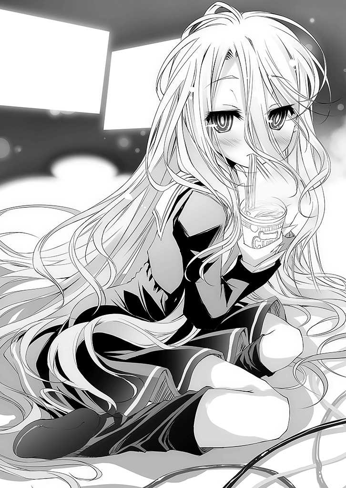
とっくに昇った太陽が遮光カーテンから落とす光だけがぼんやり照らす部屋で。
二人は言う。
「......にぃ、就職......しないの？」
「──おまえこそ今日も学校、いかねぇの？」
「......」
「......」
以後、二人の間に会話が交わされることはない。
兄── 空 。十八歳・無職・ 童 貞 ・非モテ・コミュニケーション障害・ゲーム廃人。
典型的引きこもりを思わせるジーパンＴシャツ、そしてボサボサの黒い髪の青年。
妹── 白 。十一歳・不登校・友達無し・いじめられっ子・対人恐怖症・ゲーム廃人。
血の 繋 がりを疑うように兄とは対照的に真っ白い、だが手入れされていない様子の長い髪が顔を隠し、転校したその日以来、家の外で着たことはない小学校のセーラー服の少女。
それが『 』── 即 ち『空と白』というゲーマーの正体である。
──と。
かくこのように、知らないままにしておくのも。
夢があっていい 都市伝説 もまた、存在するのである。
■■■
──さて、ここまで『都市伝説』が形成される過程を解説してきたわけだが。
つまるところ、それは人々の『願望』であるとは、前記した通りだ。
この世界は 混 沌 であり。
必然などなく。
偶然にだけ満ちていて。
理不尽で。
不条理で。
意味などありはしない。
それに気づいた者、認めたくない者が、少しでも世界を面白いものであればと。
切実な願いから生まれるのが即ち──『 都市伝説 』なのだ。
──では、ここで一つ。
そんなつまらない現実を少しだけ、面白くする手伝いをしよう。
即ち────『 新しい都市伝説 』を提供するとしよう。
──その行為に差し当たり、 定型文 として。また 様式美 として。
──こんな書き出しで、はじめてみようと思う。
──『こんな 噂 をきいたことがあるだろうか──』と。
あまりにゲームが上手すぎる者の元には、ある日、メールが届くという。
メールの本文には、 謎 めいた言葉と、 あるゲーム への『 ＵＲＬ 』だけがある。
そのゲームをクリアすると────
■■■
「......も、むり......ちょっと、ねる」
「ちょ、待て！ 今お前にオチられたら回復担当が──」
「......にぃなら、出来る」
「理論上はそうですね！ 今、両手で操作してる二キャラに、お前が操作放棄した二キャラを二足で操作すればね！」
「.........ふぁい、と」
「待ってっ いや待って下さい 白 さん！ あなたが寝ちゃうとみんな──つか主に 俺 一人が死んじゃう！────うおぉぉぉぉおやったろーじゃねぇかぁ！」
妹が積み上げたカップ 麺 の空容器が五つを数えた 頃 。
即 ち五日目の徹夜の、そんな兄妹のやり取りが部屋に響く。
そんな兄の悲痛な、だが覚悟の叫びを 他 所 に、ゲーム機を 枕 に寝ようとする妹の耳に。
──テロンッ、と。
パソコンから新着メールを告げる音が届く。
「......にぃ、メール」
「四画面四キャラ操作してる兄ちゃんに何を要求してるか知らんが、そんな余裕ねぇっ」
両手両足で、器用に四つのマウスを操作し。
一人四人パーティーを操り 獅 子 奮 迅 の活躍を見せる兄は余裕なさげにそう答える。
「つかどうせ広告メールだろほっとけ！」
「......友達......から、かも？」
「── 誰 の？」
「......にぃ、の」
「はは、おかしいな、 愛 しい妹に胸を 抉 られる皮肉を放たれた気がする」
「......しろの......って、言わない、理由......察して...欲しい」
「じゃあやっぱ広告メールだろーが。つかお前、寝るなら寝ろよっ！ 寝ないなら手伝えぇぇぇぇっ！ あ、あぁっ 死ぬ、死ぬっ！」
兄── 空 。
繰り返すが──十八歳・無職・ 童 貞 ・非モテ・コミュ障・ゲーム廃人。
自慢ではないが、彼女はおろか、友達すらいない 己 に届くメール候補に「友人」などというカテゴリーはあろうはずもなく、その説は却下される。
もっとも、それは妹── 白 も同じらしかったが。
「......うぅ......めんど、くさい」
だが白は、眠気に手放しそうになる意識を振り絞って、起き上がる。
ただの広告メールなら問題ない。
だが『新しいゲームの広告メール』なら、無視する訳にはいかないからだ。
「......にぃ、タブＰＣ......どこ」
「三時方向左から二番目の山の上から四個目のエロゲの下ッ ぐおぉ足 攣 りそぉッ！」
苦 悶 にあえぐ兄を無視して、言われた通りの場所を 漁 る白──発見。
ヒキコモリとニートが、タブレットＰＣを何に使うのか、疑問に思われるだろうか？
しかしそれは愚問と言わざるを得ない。
もちろん──ゲーム用だ。
だが、この兄妹に限って言えば別の使い方もしている。
無数のゲームのため、無数のアカウント、メールアドレスを持っている二人だが、基本的にゲーム専用機となっているパソコンにかわってこの端末で、30 以上あるメールアカウントを同期し、メールを閲覧している。
効率主義と呼ぼうか。
はたまたアホと呼ぶべきか。
「......音はテロン......３番メインアドレスの着信音......これ、かな？」
異様な記憶力を発揮してメールをあっさり発掘する白。
と──どうやら本当に一人で四キャラ、リアルタイム戦闘で操って、討伐に成功したらしき兄の勝利の 咆 哮 を背に、メールをチェックする。
──【新着一件──件名‥ 『 』達へ】
「.........？」
こく、と小首を 傾 げる妹。
『 』── 即 ち「 空と白 」に届くメールはさして珍しくはない。
対戦依頼、取材依頼、挑発的な挑戦状──いくらでもあるのだが、これは。
「......にぃ」
「なにかな？ 寝るといって兄ちゃん一人にゲームを 放 り出して、結局寝てない上に兄ちゃん一人に物理的な縛りプレイさせた、 愛 しい 鬼 畜 妹よ」
「......これ......」
兄の皮肉など聞こえていないかのように、画面に映るメールを兄に見せる。
「うん？──なんだこれ」
兄もそのメールの特殊性に気づいたのか。
「セーブよーし、ドロップ確認よーし」
間違いなく、確実にセーブされたのを確認して、五日ぶりに画面を閉じ。
パソコンからメーラーにアクセスする。そして 訝 しげに。
「......何で『 』が 兄妹 だって知ってんだ」
──確かに、ネット上で空白複数人説があるのは兄も知るところだった。
だが、問題は件名ではなく、本文にあった。
本文には、一言だけ、こう書かれ、ＵＲＬがはられていた。
【 君ら兄妹は 、 生まれる世界を間違えたと感じたことはないかい ？】
「......なんだこれ」
「............」
少し、いや、かなり不気味な文面。
そして見たことのないＵＲＬ。
ＵＲＬの末尾に、「．ＪＰ」などの国を表す文字列はない。
特定のページスクリプトへの──つまりゲームへの直通アドレスで見かけるＵＲＬ。
「......どう、する？」
あまり興味はなさそうに、妹が問う。
だが、二人の正体を知っているそぶりの文面には、妹も思うところはあるようで。
そうでなければ、無言でゲーム機を 枕 に寝に戻っただろう。
兄に判断を 委 ねる──それは、 兄の領分 だと判断したため、 即 ち──
「駆け引きのつもりか？ まあ、ブラフだとしてもノッてみるのも一興か」
そう判断し、ＵＲＬをクリックする。
ウィルスの類なども警戒し、セキュリティソフトを走らせながらＵＲＬを踏んでみた。
が......現れたのは、なんとも簡素な。
至ってシンプルな、オンラインチェスの盤面だった。
「.........ふぁふ......おやす、み......」
「ちょちょ、待てって。『 』あての挑戦状だぞ。相手が高度なチェスプログラムとかだったら 俺 一人じゃ手に負えないって」
一気に興味が 失 せたらしく、眠りに戻ろうとする妹を引き止める兄。
「......いまさら......チェスとか......」
「うん......いや、気持ちはわかるけどさ」
世界最高のチェス打ち──グランドマスターを完封したプログラム。
そのプログラムに妹は、 二十連勝して 興味が 失 せて久しい。
ヤル気がわかないのもわかる。が。
「『 』に負けは認められない。せめて相手の実力がわかるまで、起きててくれ」
「......うぅぅ......わかった」
そうして、チェスを打ち始める 空 。
一手、二手と積み重ねて行く兄の対戦を、興味なさそうに。
いや、眠そうに。船を 漕 ぐように、かくん、かくんと眺めている 白 。
が──五手、十手と重ねたところで。
五分の四閉じられていた白の目は開かれ、画面を凝視していた。
「......え？ あれ、こいつ」
と、空が違和感を覚えると同時、白が立ち上がり、言う。
「......にぃ、交代......」
一切の反論なく、素直に 椅 子 を明け渡す兄。
それは、妹が兄の手に負えないと判断したということ。
つまり、 世界最高のチェスプレイヤーが相手するに足る と判断したということ。
入れ替わった妹が、手番を重ねて行く。
──チェスは『 二人 零 和 有 限 確 定 完 全 情 報 ゲーム』である。
『運』という、偶然が差し挟む余地のないこのゲームにおいて。
理論上、 必勝法は明確に存在する が、それはあくまで理論の話。
十の百二十乗という膨大な局面を把握出来た場合の話である。
つまりは、事実上ないに等しい。
──が、それを「ある」と断言するのが白。
つまり、 十の百二十乗の盤面を読めばいいだけ の話と断言し。
事実世界最高のチェスプログラム相手に二十連勝した。
チェスは最善手を打ち続ければ先手が勝ち、後手は引き分けることしか出来ない。
理論上、そうなっている。
そのチェスにおいて、一秒で二億局面を見通すプログラム相手に。
先手後手入れ替えで二十連勝し 、プログラムの不完全性を証明した、その妹が。
「......うそ」
と 驚 愕 に目を開く。
──だが、一方で兄はその打ち方に違和感を覚えていた。
「落ち着け、これ、相手は人間だ」
「──え？」
「プログラムは、常に最善手を打つ。集中力も切らさないが、既存の戦術通りの動きしかしない。だからこそ、お前は勝てる。が──こいつは」
画面を指さして兄。
「あえて悪手をとって誘ってる。それを 相手プログラム のミスと判断した お前のミス だ」
「.........うぅ」
兄の言葉に、しかし妹は反論しない。
──確かにチェスの技量において、いや、ほとんどのゲームにおいて。
白 は 空 を圧倒的に上回る技量を持つ。まさしく──天才ゲーマー。
だがこと 駆け引き 、 読み合い 、 揺さぶりあい など「相手の感情」という不確定要素を見抜くことにかけては──兄は常人離れして 上 手 かった。
故にこそ『空白』──二人だからこその── 無敗 。
「いいから落ち着け、相手がプログラムじゃないんなら、なおのことお前が負ける要素はない。相手の挑発に乗るな。相手のひっかけや戦術は 俺 が指摘するから、冷静になれ」
「......りょーかい......がんば、る」
コレが。
数多 のゲームで世界ランキングのトップを独走するゲーマーのからくりだった。
─────.........。
持ち時間制ではないその勝負は、六時間以上に及んだ。
徹夜五日目ということを、脳から 溢 れ出るアドレナリンやドーパミンが忘れさせ、疲労をも吹き飛ばし、二人の集中力を極限まで引き上げていく。
六時間──だが実際には数日にも感じられたその対局に。
そして、決着の瞬間が訪れる。
スピーカーから響く、無感動な音。
『チェックメイト』
兄妹の──勝ちだった。
「「───────」」
長い沈黙の後。
「「はぁあああぁぁああ～～～～............」」
大きく息を吐く二人。それは呼吸さえ忘れるほどの勝負だったことを語る。
長い長い息を吐いたあと、二人は笑い出す。
「......すごい......こんな苦戦......ひさし、ぶり」
「はは、 俺 はおまえが苦戦するのを見るのすら、初めてだぞ？」
「......すごい......にぃ、相手......ほんとに、人間？」
「ああ、間違いない。誘いにノらなかった時の長考、仕掛けた 罠 の不発の時に 僅 かに動揺が見えた。間違いなく人間か──そうじゃなきゃ おまえ以上の天才 ってことだ」
「......どんな、人だろ」
グランドマスターを完封したプログラムを、完封した妹が、対戦相手に興味を抱く。
「いや、案外、グランドマスターかもよ？ プログラムは正確だが人間は複雑だ」
「......そ、か......じゃあ......今度、 将 棋 でも...... 竜 王 と、対戦、したい......」
「竜王がネット将棋にノッてくれるかなぁ。まあ、考えてみようか！」
と、勝負後のエンドルフィンがもたらす幸福感に、にやけた顔で語る二人に、再び。
──テロンッ♪
というメールの着信音が響く。
「今の対戦相手じゃねぇの？ ほら、開けてみろよ」
「......うん、うん」
と──しかし届いたメールには。
ただ一言、こう書かれていた。
【おみごと。それほどまでの腕前、 さぞ世界が生きにくくないかい ？】
そのたった一文で。
二人の心境は──氷点下まで下がった。
ＬＥＤディスプレイに向き合い、激闘を繰り広げた二人の、その背後。
無機質な光。パソコン、ゲーム機器が奏でるファンの音。
無数の配線が床をのたうち、散らばったゴミと、脱ぎ散らした服。
陽を遮断し切るカーテンが、時が止まったように、時間感覚を奪う空間。
世界から隔離された ──十六畳の、狭い部屋。
そこが 兄妹 の世界──その、 全 て。
──苦々しい記憶が二人の脳裏を 奔 る。
生まれつき出来が悪く、その 為 、人の言葉、真意を読むことに 長 けすぎた兄。
生まれつき高すぎる知能と、真っ白い髪と赤い 瞳 故に理解者のいなかった妹。
──両親にさえ見放されたまま他界され、ついには心を閉ざした兄妹。
お世辞にも楽しい記憶とは呼べない過去──いや、 現在に 。
黙って 俯 いた妹。
その妹を俯かせた相手に怒りを 叩 きつけるようにキーボードを打つ兄。
『大きなお世話様どうも。なにもんだ、テメェ』
ほぼ即座に返信がくる。
──いや、果たしてそれは返信だったのか。
答えになっていない文面が届いた。
【君達は、その世界をどう思う？ 楽しいかい？ 生きやすいかい？】
その文面に、怒りも忘れて妹と顔を見合わせる。
改めて確認するまでもない。答えは決まっていた。
──「クソゲー」だと。
......ルールも目的も 不 明 瞭 な、くだらないゲーム。
七十億ものプレイヤーが、好き勝手に手番を動かし。
勝ちすぎるとペナルティを受け。
──頭が良すぎる故に、理解されず孤立していじめられる妹。
負けすぎてもペナルティを受ける。
──赤点が続いて、教師に、親に怒鳴られても笑顔を保つ兄。
パスする権利はなく。
──黙っていればなおも加速していったいじめ。
喋 りすぎたら、踏み込みすぎと疎まれる。
──真意を読みすぎて、的を射すぎて疎まれる。
目的もわからず、パラメーターもなく、ジャンルすら不明。
決められたルールに従っても罰せられ──なにより。
ルールを無視した奴が我が物顔で上に立つ ──。
こんな 人生 に比べたら、どんなゲームだって──簡単すぎる。
「ちっ──胸くそ悪ぃ」
舌打ちし、なおも 俯 いたままの、幼い妹の頭を 撫 でる 空 。
──そこには、先ほどまで神の 如 き勝負を演じてみせた二人はいない。
落ち込んだ──落ちぶれた──社会的に見ればあまりに弱々しい。
寄る辺のない、世界に 爪 弾 きにされた 兄妹 がいるだけだった。
イラついたことで、一気に襲ってきた疲労。
久しぶりにパソコンの電源を切ろうとスタート画面にカーソルを向けた兄の耳に。
テロンッ♪ ──と、再度メールが届く。
構わずシャットダウンしようとする兄の手を。
──しかし妹が止める。
【もし〝 単純なゲームで全てが決まる世界 〟 があったら──】
その文面に、 訝 しげに、しかし想像し、 憧 れを隠すことの出来ない二人。
【目的も、ルールも明確な 盤上の世界 があったら、どう思うかな？】
再び二人は顔を見合わせて、 自 嘲 気味に笑い、 肯 いた。
兄はキーボードに手を置き。
なるほど、そういうことか、と。
『ああ、そんな世界があるなら、 俺達は生まれる世界を間違えたわけだ 』
──と、最初に届いたメールの文面になぞらえて。
返信する。
─── 刹 那 。
パソコンの画面に 微 かなノイズが走り。
同時、ブレーカーが落ちたように、バツンッと音を立てて部屋の 全 てが止まる。
唯一──メールが表示されていた、その画面を除いて。
そして──
「な、なんだっ!?
「......っ？」
部屋全体に、ノイズが走り始める。
家が 軋 むような音、放電するような弾ける音。
慌てて周囲を見渡す兄と、何が起こっているかわからずただ 呆 ける妹。
そんな二人を 他 所 に、ノイズはなおも激しくなり──
ついにはテレビの 砂 嵐 のように。
そしてスピーカーから──いや。
間違いなく 画面から 。
今度は文章ではない──『 音声 』が返ってきた。
『僕もそう思う。君達はまさしく、生まれる世界を間違えた』
もはや画面以外の、部屋の全てが砂嵐に 呑 まれる中。
唐突に、白い腕が生える。
「なっ!?
「......ひっ──」
画面から伸びた腕は、兄妹の腕を 掴 み。
抗 う余地もない程の力でもって、二人を引きずりこむ。
画面の中 へ──。
『ならば僕が 生まれ直させてあげよう ── 君達が生まれるべきだった世界に っ』
──.........。
そして──。
白く染まる視界。
それが、目を開いたから── 即 ち陽の光だと認識出来たのは。
久しく感じていなかった、網膜を焼かれる感覚故。
そしてようやく光に慣れつつある 瞳 に飛び込んだ景色から、兄は理解した。
そこは──上空だった。
「うぉおおあああっ!?
狭い部屋から一気に広がった広大な空間。
──だが兄を叫ばせたのは、視界に広がった 景色の異常さ故 だった。
空 の脳が、状況を把握しようと、脳回路を焼き切らんばかりに加速し、叫ばせる。
「なん────なんだこれぇえええっ！」
──どう見ても、何度見返しても。
空に、 島が浮かんでいた 。
目を、頭を何度疑っても、視界の果てで空を飛んでいるのは、 ドラゴンで 。
地平線の向こう、山々の奥に見える巨大なチェスのコマは、遠近感を失わせるほど巨大。
何 処 かのゲームに登場しそうな、 ファンタジーの中の景色 。
どう考えても自分が知る『地球』のそれではない景色。
だが、それよりもなによりも。
眼下に広がる雲から、浮遊感の正体が、 落下している事実だと気づき 。
自分達が今まさに、パラシュートなしのスカイダイビング中であること。
この 全 てに気づき、絶叫が──
「あ、死ぬ」
という確信に変わるまで、兄が要したのは、実に三秒だった。
だがそんな悲愴な確信を打ち破るように。
高らかに叫ぶ声は、隣から聞こえた。
「ようこそ、僕の世界へッ！」
壮大で、異常な景色を背後に、落下しながら『少年』は腕を開いて笑う。
「ここが君達が夢見る理想郷【盤上の世界・ディスボード】ッ！ この世のすべてが単純なゲームで決まる世界 ッ！ そう── 人の命も 、 国境線さえも ッ！」
空 に遅れること十秒ほどだろうか。
ようやく状況を把握したのか、目を見開いて、泣きそうな顔で兄に抱きつく 白 。
「......あ、あ、あなた── 誰 ──っ」
精一杯の、しかし 囁 くような抗議の叫びをあげる白。
だが相変わらず楽しそうに笑って、 少年 が言う。
「僕？ 僕はね～、あそこに住んでる」
言って、遠く──空も見た、地平線の 彼方 の巨大なチェスのコマを指差す少年。
「そうだね、君達の世界風に言うなら──〝 神様 〟 ──かな？」
頬 に人差し指を当てて、 可愛 げに、 愛 嬌 を込めて言う、 自称神 。
──だがそんなのは知ったことではなかった。
「それよりオイ、コレどうすんだよッ！ 地面が迫って──うぉおおおお、白ぉッ！」
「......～～～～～～～～～っ」
白の手を抱き込むように、意味が有るかはわからないが、自分を下にする空。
そして声にならない声で、空の胸の中で絶叫をあげる白。
そんな二人に、神を名乗る少年は、楽しげに告げる。
「また会えることを期待してるよ。きっと、そう遠くないうちに、ね」
──そうして、二人の意識は暗転した。
──────.........
「ぅ......うーん......」
土の感触。草の香り──気がつくと、空は、地面に倒れていた。
うめきながら起き上がる空。
「──な、なんだったんだありゃ......？」
──夢か？
そう思うが、空は口にはしないでおいた。
「......うぅ......変な夢」
と、空に遅れて目を覚ました妹が、うめく。
──わざわざ口にしなかったのに妹よ。
嗚 呼 、妹よ。
〝 夢じゃなかったフラグ 〟 なんてたてないでおくれ。
そう思いながら立ち上がるが、どう気づかぬふりをしても 足場は土 。
見慣れない高い空、そして──
「うをああああ！」
自分ががけっぷちに立っていることに気づいて、慌てて後ずさる 空 。
── 崖 から一望出来る景色を見渡す。
そこには、ありえない景色が広がっていた。
......いや、違う。言い直そう。
空に島。 龍 。そして地平線の山々の向こうに、巨大なチェスのコマ。
つまり、落ちてくるとき見えた、変な世界の景色。
つまり、夢オチは──なかった。
「なあ、妹よ」
「......ん」
それを、光のない目で眺めながら、兄妹は言う。
「〝 人生〟 なんて、無理ゲーだ、マゾゲーだと、何度となく思ったが」
「......うん......」
二人、声をハモらせて言う。
「「ついに〝 バグった 〟 ......もう、なにこれ、超クソゲぇ...」」
そうして──二人の意識は、再び暗転した。
■■■
──『こんな 噂 をきいたことがあるだろうか』──。
あまりにゲームが上手すぎる者のもとには、ある日、メールが届くという。
本文には──短い文と、ＵＲＬがはられているだけ。
そしてそのＵＲＬをクリックすると、あるゲームが始まる。
そのゲームをクリアすると───── この世界から消える という。
そして──
異世界へと誘われるという、そんな『 都市伝説 』。
......あなたは、信じますか？
■ 第一章── 素人
──昔々の、更に大昔。
神霊種 は、唯一神の覇権をかけ、その眷属・被造物達と共に争った。
それはそれは、気の遠くなるほどの永きにわたって、戦は続いた。
流血の染みない大地はなく、悲鳴の響かぬ空はなかった。
知性あるもの達は憎み合い、互いを滅ぼさんと凄惨な殺し合いを繰り返した。
森精種 達は小さな集落を拠点に、魔法を駆り、敵を狩り。
龍精種 は本能のままに殺戮に身を 委 ね、 獣人種 たちは獣同然に獲物を喰らった。
荒野と化し黄昏に 呑 まれた大地は、さらに神々の戦乱によってなお深い闇に呑まれ。
幻想種 の突然変異である『魔王』、そしてその同胞たる怪物どもは世に跋扈した。
そんな世に、いくたの王家も、あまたの 美 姫 も、まして勇者など、いやしなかった。
人類種 は、ただの 儚 き存在で。
国を作り徒党を組み、 ただ生き残ること にその 全 てを 賭 した。
吟遊詩人たちが謡うべき 英 雄 譚 も未だない──そんな、血塗られた時代。
この空と海と大地が──『ディスボード』と名付けられる、 遙 か以前の話......。
だが、そんな永久とも思われた戦乱は、唐突にその幕を閉じる。
空が、海が、大地が──星そのものが。
憔 悴 し疲弊しきり、共倒れ同然に争いの継続を断念させられた。
かくして──その時点で、最も力を残していた一柱の神が、唯一神の座についた。
それは、 最後まで戦乱に関与せず 。
傍観を貫いた、神だった。
唯一神の座についた神は、地上の有様を見回し。
地上をうろつき回る全てのものたちに語りかけた。
──腕力と暴力と武力と死力の限りを尽くし、
屍 の塔を築く、 知性ありしモノを自称する 汝 ら証明せよ。
汝らと『 知性無き獣の群れ 』 の差違や 、 如 何 に？
全ての種族が、口々に 己 の知性を証明せんとした。
だが荒れ果てた世界を前にその言葉はあまりに 虚 しく響き。
ついぞ、神に納得いく解を示せたものはいなかった。
神は言った。
──この天地における一切の殺傷・略奪を禁ずる。
言葉は『盟約』となり、絶対不変の 世界のルール となった。
かくしてその日、世界から『 戦い 』はなくなった。
しかし知性ありしモノ達は、口々に神に訴えた。
『 戦い 』はなくなっても、『 争い 』はなくなりませぬ──と。
ならばと、神は言った。
──知性ありしモノと主張する『 十六種族 』達よ。
理力と知力と才力と資力 の限りを尽くし
知恵の塔 を築きあげ、 汝 ら自らの知性を証明せよ。
神は十六個のコマを取り出し── 悪戯 気に笑った。
かくして『 十の盟約 』が生まれ、世界から『 戦争 』はなくなり。
あらゆる 諍 いは『ゲーム』で解決するものとなった。
唯一神となった神の名は──テト。
かつては『遊戯の神』と呼ばれたものだった......
■■■
ルーシア大陸、エルキア王国──首都エルキア。
赤道を南におき、北東へと広がる大陸、その最西端の小さな国のまた小さな都市。
神話の時代においては、大陸の半分をもその領土とした国も、今や見る影もなく。
現在、最後の都──その首都を残すのみとなっている小国であり。
──もっと正確にいえば。
人類種 の最後の国でもある。
そんな都市の、中央から少し外れた郊外。
酒場を兼ねている宿屋という、 如 何 にもＲＰＧにありそうな建物の一階。
多くの観衆に囲まれ、テーブルを挟みゲームをしている一組の少女達がいた。
一人は十代 中 頃 と 思 しき赤い髪の毛の、仕草や服装に上品さを感じられる少女。
そしてもう一人は──。
赤毛の少女と同い年ほどだろうが、その雰囲気と服装から随分年上に感じられた。
葬式のような黒いベールとケープに身を包んだ──黒髪の少女。
行われているゲームは......ポーカーらしい。
二人の表情は対照的で、赤毛の少女は焦りからか、真剣そのもの。
一方、黒髪の少女は死人を思わせるほどの無表情の中にも、余裕が窺えた。
理由は明白──黒髪の少女の前には大量の、赤毛の少女の前には、 僅 かな、 金貨 。
つまり──赤毛の少女が 完 璧 に負け込んでいるのだろう。
「......ねぇ、早くしてくれない？」
「や、やかましいですわね。今考えてるんですのよっ」
──そこは酒場、昼間っから 呑 んだくれている観衆達が下品にはやし立て。
赤毛の少女の表情は更に苦悩の色に染まっていく。
だが何はともあれ──随分盛り上がっている様子だった。
.........───。
その勝負が行われている酒場の、外。
テラス席のテーブルに座り、窓から中を 覗 きこむフード姿の幼い少女が言う。
「......もり、あがってる......なに？」
「あ？ 知らないのか、あんたら異国人──って、人間の異国なんてもうねぇか」
窓を覗きこむ少女の隣の席には、同じくテーブルを挟んでゲームをしている一組がいた。
幼い少女と同じフードを被った青年と、ヒゲを生やしてビールっ腹の中年の男。
青年が答える。
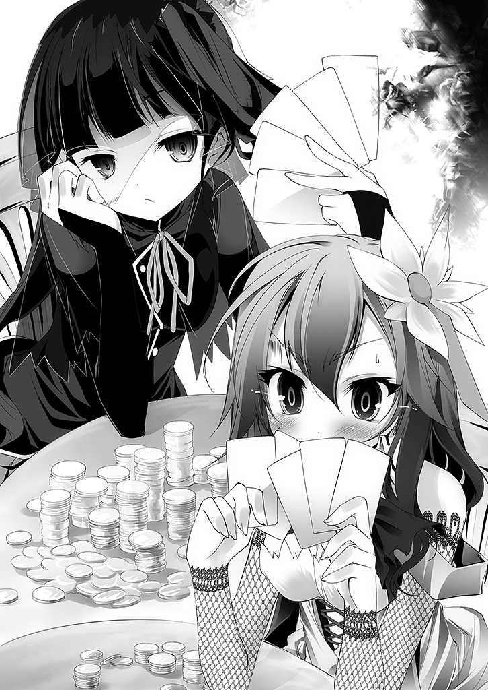
「あー。ちと田舎から出て来たとこでな、都会の事情に詳しくないんだわ」
奇 しくもやっているゲームは、中と同じ......『ポーカー』。
──ただし、こっちはビンのキャップを使って。
青年の言葉に、 訝 しげに中年の男性が答える。
「 人類種 に残されてる領土で田舎って......そりゃもう世捨人じゃねぇのか」
「はは、そうだな。で、こりゃ何の騒ぎ？」
適当にはぐらかすように言う青年に、ヒゲの男は言う。
「今、エルキアでは『次期国王選出』の大ギャンブル大会が行われてんだよ」
酒場の中の様子を眺めながら、フードの少女が更に問う。
「......次期国王...選出？」
「おうよ。前国王崩御の際の遺言でな」
『次期国王は余の血縁からでなく〝 人類最強のギャンブラー 〟 に 戴 冠 させよ』
なおもヒゲの男、ビンのキャップを上乗せしながらいう。
「 国 盗 りギャンブルで 人類種 は負けが込んで、いまやこのエルキア、しかもその首都を残すだけだからな──なりふり構わなくもなるさぁなぁ」
「ふーん、『 国盗りギャンブル 』ねぇ......面白そうなことやってんな、こっち」
そう答えたのはフードの青年。
フードの少女に倣って、青年も酒場の中が気になる様子で 覗 き込む。
「──んじゃ、何、あの子達も次期国王候補？」
「んー？『候補』ってのは違うかもな、参加資格は 人類種 なら 誰 にでもあるからな」
ただ──と付け加えて、酒場の中に視線を移す男。
──ポーカーをやっているのに〝 ポーカーフェイス〟 という言葉を知らないのか。
むぅぅぅと声が聞こえて来そうな顔で手札を 睨 む赤毛の少女を 一 瞥 して、男が言う。
「あの赤毛のほう〝 ステファニー・ドーラ〟 ──前国王の血族だ。遺言の通り、王族の血筋じゃない 奴 が国王になったら何もかも失うから自分が次の国王に、って 狙 いさな」
ここまで人類を負けこませた奴の血族が、全く必死なこって......と。
付け加えて、男はため息ひとつ。中の盛り上がりを端的に語る。
「......ふぅ、ん......」
「ふむ......『 国 盗 りギャンブル』── 国境線さえゲームで決まる 、か」
フードの少女と、青年が互いに感想をこぼす。
少女は感心そうに。
青年は面白そうに。
「ま、そんなわけで総当たりのギャンブル大会が開催中なのさ」
「...... 総当たり ？」
「次期国王に立候補する 奴 は、 人類種 なら 誰 でもよく、名乗り上げてどんな方法でもいい、ゲームで勝負し、負ければ資格 剥 奪 、最後まで勝ち残った奴が国王って寸法だ」
──なるほど、単純なルールだ。わかりやすくて結構だ。
だが、フードの青年が 訝 しげに言う。
「......ずいぶん適当だな。いいのかそれで」
「『 十の盟約 』に従い、相互が対等と判断すれば 賭 けるもの、勝負方法は問わない──誰と、何で、どのタイミングで戦うかまで込みで、 国 盗 りギャンブルだからな」
「......いや、別にそのことを言ってるんじゃないんだがな」
そう、意味深に 呟 くフードの青年が再び酒場の中を 覗 き込む。
その青年に、少女が呟く。
「......負け込むの、当然」
「ああ、全く同感だわ」
お互いに言い合う二人、青年がポケットから四角いものを取り出し。
酒場の中に向け、ナニかを操作すると、 パシャッ 、と。音が鳴った。
──と、中年男性がにやりと笑う。
「で、兄ちゃん？ 他人の勝負気にしてる場合なのか？」
言って、さっと札をオープンする、男。
「フルハウス。悪ぃな」
（続きはご購入のうえ、お楽しみください。）
著者
榎宮祐 （かみや・ゆう）
初めまして、榎宮祐です。
デビュー作ということで大変緊張してますが──が。
挿絵担当の方、突然執筆環境変えてみてｉｃｃふっ飛ばしたり、ブラジルで描いてみたり、絵の為に本文修正させたり、ちょっとフリーダムすぎです。反省してね。あ...えと、お絵描きとゲームが好きです♪
イラスト
榎宮祐 （かみや・ゆう）
初めまして、挿絵担当の榎宮祐です。
何度経験しても一巻目は緊張しますねぇ、とそれより。著者さんね、病気の治療にブラジル行って親戚の家に三週間籠城して原稿やったら「何しにブラジル来たの」と言われて当然だし、わざわざ国際電話で編集さんに「一太郎ってｍａｃで使えないの!? とか、恥を知ろう。あ～。小説とゲームが大好きです 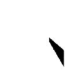 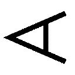
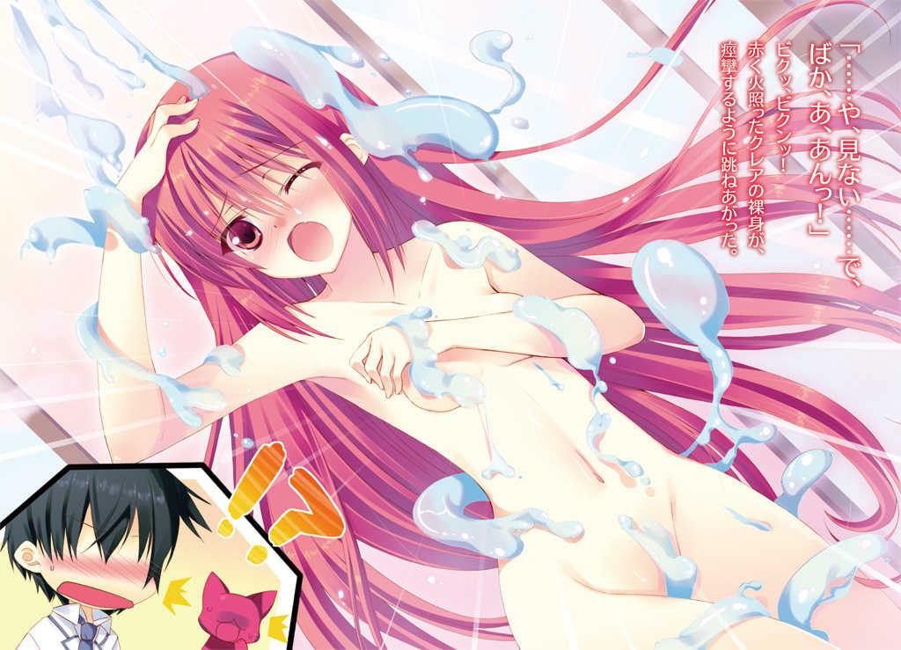
ＭＦ文庫Ｊ
精霊使いの 剣舞
剣と学院と火猫少女
（立ち読み版）
志瑞祐
口絵・本文イラスト● 桜はんぺん
編集● 庄司智
Ｃｏｎｔｅｎｔｓ
第一章 あんたはあたしの契約精霊！
第二章 アレイシア精霊学院
第三章 クラスメイトはお姫様
第四章 狼と猫と騎士
第五章 クレアの想い
第六章 真夜中の 剣舞
第七章 剣精霊エスト
第八章 最強の剣舞姫
エピローグ
第一章 あんたはあたしの契約精霊！
穏やかな木漏れ日の 射 し込む、 閑 かな森の中。
ちゃぱあっ。
と、そんな水音が響きわたる。
カミトは――
ぽかん、と口をあけ、その場に立ちつくした。
女の子だ。目の前に 全 裸 の女の子がいる。
しかも 可愛 い。めちゃくちゃ可愛い。
大きく見開かれた 紅玉 の 瞳 。 艶 やかに 濡 れた桜色の唇。
ミルクみたいになめらかで、まぶしいくらいに白い肌。
池の水面に立つ、すらりと細い 美 脚 。
そして、なによりも目を 惹 くのは――
華 奢 なガラス細工のような 肢 体 にはりついた、燃えるような 真 紅 の髪だ。
ただし 全裸 。
すっ裸。
「......」
カミトの背筋を、つーっと冷たい汗が伝った。
ヤバイ。 全 裸 ヤバイ。
......ッテイウカ、ハヤク逃ゲロヨ。
理性はたしかにそう告げている。
だが、身体のほうが動いてくれない。
正直、 見惚れていた 。あまりに現実離れした、その光景に。
女の子は――
濡 れた 綺 麗 な目をパチパチさせ、ふいにあらわれた 闖 入 者 の姿を見つめている。
きょとん、とした表情。まだ状況が 呑 み込めていないようだ。
膨らみかけの小さな胸を隠そうともしていない。
ぴちゃん。
少女の前髪から水が滴った。
その音に、カミトはハッと意識をとりもどす。
「あー、えーっと......」
カミトは、こほんと 咳 払 いした。
立ち尽くす少女の裸体から、わずかに視線を 逸 らし、

「なんつーか、事故みたいなもんだろ、これは。おたがいにとっての不幸な事故だ」
このとき、カミトはふたつの致命的なあやまちを犯した。
ひとつは無論、その場でつまらぬ 釈 明 などをはじめたことだ。最善の選択は、少女が 呆 然 としているうちに、さっさとその場から逃げることだった。
そして、もうひとつは――
「まあ事故とはいえ、その、君のそんな姿を見てしまったことは、謝る。すまなかった」
ここまではいい。が、その直後。
「けど安心してくれ。 俺 は健全な男子だ。 そういう趣味はない 。俺は――」
と、女の子の 膨らみかけの小さな胸に目をやって ――
「子供の裸には興味ないから」
盛大に地雷を踏み抜いた。
「......」
凍えるような沈黙。
女の子は――
無言で、 紅 い髪のまとわりついた腕をすっと持ちあげた。
肩が小刻みに震えている。
それが寒さのせいではないことに、カミトは気づかなかった。
「十六――」
「え？」
少女の唇から 洩 れた小さなつぶやきに、カミトは 眉 をひそめる。
「あ、あたしはっ、十六歳っ！」
叫んだ瞬間、少女の紅い髪がぶわっと逆立った。
「なっ!? 」
カミトは 驚 愕 に目を見開き――
「十六!? って 嘘 だろ、 十六でそんな残念な胸って ――」
ハッとして口をつぐんだ。
が、もう遅い。
「......許さない」
少女が底冷えのするような声でうめいた。
「ぜ、ぜったい許さないわ......こ、ここ、こ、この 覗 き魔、変態、 淫 獣 ！」
「よく知ってるな、淫獣なんて言葉......」
カミトが 半 眼 でつぶやいたそのときだ。
「ん？」
......ふと気づく。森の木々がざわめいていることに。
（風か？ いや、これは――）
―― 紅 き 焔 の守護者よ、眠らぬ 炉 の番人よ！
――いまこそ血の契約に従い、我が 下 に 馳 せ参じ 給 え！
少女の 可 憐 な唇から 紡 がれる、 流 暢 な精霊語の 召喚式 。
刹 那 。空気の 爆 ぜるような音と共に、少女の手に 炎の鞭 があらわれた。
（――精霊使いか！）
カミトは胸中で叫んだ。
精霊使い――この世界とは別の次元層に存在する〈 元素精霊界 〉。
そこに 棲 まう精霊と契約を結んだ 姫 巫 女 のことだ。
精霊使いは様々な属性の精霊を使役し、その力を自在に振るうことができる。
どうやら、目の前の少女は炎属性の精霊と契約を結んでいるようだ。
少女が精霊使いであることそれ自体は、そう驚くことでもない。
なにしろ ここ は、帝国中の優秀な精霊使いが集まる場所だからだ。
（――にしても、まさか、 精霊魔装 まで使えるとはな）
元素精霊界に棲まう精霊をこちらへ召喚するときの形態は、大きく分けて二つだ。
ひとつは、質量がなく不定形の 神威 の 塊 としてあらわれる原形態。これはたんに精霊の力だけを 喚 び 出 すもので、精霊魔術などを行使する際の 貯蔵庫 として使われる。
もうひとつは、精霊の存在の一部をそのまま喚び出す純化形態だ。
こちらは膨大な神威を必要とする上に制御が難しいため、これができるのは精霊使いの中でもひと握りしかいないといわれている。しかも、この少女はただ精霊を使役するのではなく、より高度に最適化した精霊魔装として使役しているのだ。
（......ってことは、あれ？ いまひょっとして 俺 、命の危機なのか？）
はたと思いつき、カミトの 頬 がひきつった。
灼 熱 の 炎の鞭 が池の水面に触れ、じゅっと白い蒸気が噴きあがる。
「い、い、いい度胸......」
少女が、震える声でうめいた。
顔を赤らめているのは、怒りか、それとも 羞 恥 のためか。
「ほほ、ほんとにいい度胸、このクレア・ルージュの水浴びを、の、 覗 くなんて......」
「ま、まて、誤解だ！ 話せばわかる！」
カミトはあわてて首を振るが、
「言い訳は聞かないわ。消し炭になりなさいっ、この変態っ！」
燃えさかる炎の鞭が、池の水面を 舐 めるように振るわれた。
「うおっ!? 」
カミトはとっさに近くの茂みに身を投げだした。
間一髪。頭上を 薙 ぎ 払 う 炎の鞭 。
紅 い 残 滓 が 閃 き、あたりの木々がまるで冗談のように切断される。
切り株の断面は驚くほど滑らかで、焦げ 痕 ひとつついていない。
斬撃が速すぎるため、炎が燃え移る間もないのだ。
カミトの前髪が、はらりと舞い落ちた。首筋に冷たい汗が浮かぶ。
（......えっと、冗談だろ？ こんなとこで死ぬのか、 俺 ？）
ヒュッ、ヒュンッ――森の中を 縦 横 無 尽 に舞う 真 紅 の 斬 閃 。茂みはあっという間に薙ぎ払われ、身を隠す場所を失ったカミトはあわてて飛びだした。
「よけるな変態っ、当たらないじゃない！」
「 無 茶 言うなっ、あと俺は変態じゃねえっ！」
叫んだカミトの足もとに 鞭 が振り下ろされ、激しい火花が散った。地面に跳ね返った鞭はあさっての方向へしなり、森の木々を容赦なく切断する。
不幸中の幸いといえるのは、少女――クレアの 狙 いがそれほど正確でないことだ。
なにしろ片方の手はあの残念な胸を隠すために使っているし、もっと大事な部分を隠すために池に 屈 みこんだ姿勢になっている。もっとも、そんな姿勢でもそれなりに鞭を使いこなせていることを考えると、本来の技量は相当なものなのだろうが。
「このっ、変態のくせに生意気っ、おとなしく消し炭になりなさいっ！」
「変態じゃねーって言ってるだろ！ っていうか」
カミトは立ち止まって振り向くと――
さっきから気になっていたこと を指摘した。
「おまえこそちゃんと隠せよ。指の 隙 間 、微妙に隠しきれてないぞ」
「......え？」
瞬間。クレアの表情が凍りついた。
そして――
「きゃあああっ！」
真 っ 赤 になった彼女は妙に 可愛 らしい悲鳴を上げ――
ぎゅっと 両手で 胸を抱きすくめた。
「あ、ばか！」
カミトは思わず叫んだ。
手を離れて制御を失った炎の鞭が、彼女の背後に立つ木を、スパッと切断したのだ。
ゆっくりと、斜めにずり落ちてくる巨木の幹。
だが、クレアは気づいていない。 羞 恥 に目を閉じたまま裸の胸をかき 抱 いている。
（くそっ――）
とっさに、カミトは地面を 蹴 った。
池に向かって全力で走り、飛びこむようにしてクレアの肩を 掴 む。
「な!? 」
クレアの 紅 い 瞳 が大きく見開かれる。
カミトはかまわず、そのまま強引に水の中へ押し倒した。
クレアの手が水に触れた瞬間、じゅっと蒸気が噴きあがり、炎の鞭が消滅する。
直後。あたりの木々を 薙 ぎ倒し、巨木が倒れこんできた。
ドオオオオオンッ！
耳をつんざくような 轟 音 。盛大に立ちのぼる水柱。
炎の熱を吸収し、いい湯加減になった池の水が豪雨のように降りそそいだ。
......数秒後。
「う、ん......」
そんな悩ましげな声をあげながら、クレアがゆっくりと目を開いた。
きょとん、とした表情で目をパチパチと瞬かせる。
カミトは、クレアにのしかかるような体勢で、しばしその目を見つめかえした。
だれかが背中を軽く押せば、唇が触れそうなほどの超至近距離。
うなじにぺったりとはりついた 真 紅 の髪。 濡 れた桜色の唇。
硝子 細工の人形のように端正な顔立ちが、いま目の前にある。
一瞬、思わず見惚れてしまいそうになり、あわててかぶりを振った。
「......えーっと、大丈夫か？ その、 怪 我 とか」
こくり、とうなずくクレア。どうやらまだ状況を 呑 み込めていないらしい。
カミトが安堵の息をつき、立ち上がろうとした――そのときだ。
ふにゅっ。
水中の手が、なにかやわらかいものに触れた。
「ひゃうっ！」
（なんだ？ 泥か？）
むにゅっ。もにゅっ。
「んっ、や、ひあんっ――」
濡れた唇から 洩 れる甘い声。
水に 浸 かったクレアの裸身が、なぜかビクンッと跳ね上がる。
「......えーっと？」
ここにきて、カミトはようやくある推論にたどりついた。
とても......おそろしい推論に。
（いや、待て、落ち着け。 これ は違う......よな？）
ありえない。そんなはずはない。冷や汗を流しながら必死に否定する。
（だって、さっき見たときは、 こんなに ――）
「な、なななな、ななな、な、に、をして、るのよ、こ、こここ、この――」
クレアの唇がわなわなと震えていた。
真 っ 赤 な顔。目には涙を浮かべている。
どうやら、泥の 塊 を 掴 んだ......わけではなさそうだ。
「この、ヘンタイ―――――ッ！」
「ごはっ！」
みぞおちを 膝 で思いっきり強打され、カミトは水の中に倒れこむ。
ゴゴゴゴゴゴゴ......！
ゆらゆらと背後に 陽炎 を立ちのぼらせ、ゆっくりとクレアが立ち上がった。
その手には、いつのまにか炎精霊の化身である 炎の鞭 がふたたび握られていた。
池の水が一瞬で 沸 騰 してボコボコと泡立ちはじめる。
「ち、ちがう、誤解だ！ まて、それはほんとに死ぬ――」
「う、うるさいヘンタイっ、いっぺん死になさいっ！」
耳をつんざくような 轟 音 と共に、カミトの身体は空高く舞いあがった。
◇
「......うう、ん」
数分後。カミトが意識を取り戻すと、目の前に森の 木 立 が広がっていた。
起きあがろうとして――
ふと、首に何かが巻きついていることに気付く。
調教用の黒い 革 鞭 だ。なんだこれ――と、外そうとした途端、
「やっと目覚めたわね、 覗 き魔の変態」
首をぐいっと締め上げられる。
「ぐえっ!? けほっけほっ......」
カミトが 咳 き 込 みながら見上げると――
真 紅 の髪の少女――クレア・ルージュが、片手を腰にあて立っていた。
細い 眉 をキッとつりあげ、鋭い 眼 差 しでカミトを見下ろしている。
こんどは 全 裸 ではない。少女は 可愛 らしい制服姿に着替えていた。
純白に黒のラインをあしらった、〈アレイシア精霊学院〉の制服だ。
胸元を飾るリボンタイ。ボタン代わりに縫い込まれた 精霊護符 。ニーソックスとプリーツスカートのあいだから覗く、すらりとした 美 脚 が目にまぶしい。
焔 のように 紅 い髪を小さなリボンで左右にくくっている。いわゆるツーテールという髪形だ。髪先がまだ 濡 れそぼっているところを見ると、それほど長い時間気を失っていたわけではないようだ。
クレアは、カミトの首を締め上げたまま小さな胸をそらした。
「ふん、感謝しなさいよね。死なないように手加減はしてあげたんだから」
「 嘘 だ。ぜったい殺す気だっただろ！」
「なに言ってるの？ あたしが本気だったら、あんたいまごろ消し炭よ」
......平然とおそろしいことを言ってくる。
ちなみに消し炭というのは、 薪 の火を消して作った柔らかい炭のことだ。
「炭にするのは 勘 弁 して欲しいもんだな。 俺 は一応、おまえを助けたんだぞ」
「そうね。あたしは 公平 な貴族だから、それについては一定の評価をしてあげるわ。あんたは普通の変態よりもちょっとグレードの高いハイグレード変態よ」
「結局変態って評価は変わんないのな。っていうかハイグレード変態って、普通の変態よりもひどいんじゃないか？」
「な、なによ......助けるふりして、あ、あたしのむ、胸、触ったくせに！」
さっきのことを思い出したのか、クレアはふいにもじもじと顔を赤らめる。
（ん？）
そんな彼女の反応に――
カミトは、ははん、と思いついた。
......こいつ、ひょっとしてアレなのか？
「そういうお嬢様は、男を 鞭 でいたぶる趣味をお持ちの変態じゃねーか」
からかうように言ってやると――
「――なっ!? ち、ち、ちがうわよっ、あたしはそんなんじゃないっ！」
やはり効果はてきめんだった。カアアッと耳まで 真 っ 赤 にしてぶんぶん首を振る。
「ん、じゃあ鞭でぶたれるほうが好きなのか？」
「......～っ！ あ、あ、あんた、な、ななな、な、に、言って――」
くるくると目をまわし、頭のてっぺんからぷしゅーっと湯気をたてるクレア嬢。
ちょっとびっくりするほどの 狼狽 えぶりだ。
（あー、思った通りだ......）
カミトは内心で苦笑した。
（こいつ、ほんとは 超うぶなんだな ）
おそらく、この少女だけが特別というわけではない。
なにしろ、ここアレイシア精霊学院は、精霊使いの 姫 巫 女 たちの集う学舎なのだ。
元素精霊界 の精霊と交感できるのは 清らかな乙女だけ 。中でも契約精霊を使役できるほどの 神威 を宿すのは、何世代にもわたる 婚 姻 によって精霊使いの血を強めてきた、由緒正しい王侯貴族の 娘 だけなのだ。
そんな彼女たちは、心身の清らかさを保つため、幼い 頃 から男を徹底的に遠ざけた環境で教育される。いわば精霊使いのエリート教育だ。だから、この学院に通う女の子たちは、全員が男に慣れていない 超箱入りのお姫様 なのである。
少女の思わぬ弱点を見つけ、カミトはちょっとだけ意地悪してやりたくなった。
膝 立 ちの姿勢のまま、 真 っ 赤 になったクレアの顔を見上げ――
「ああ、あとな、さっきから言おうと思ってたんだが」
「......な、なによ、変態！」
「その角度だとパンツ見えるぞ」
「ふわあっ！」
紅 い 瞳 にぶわっと涙を浮かべ、クレアはあわててスカートの 裾 を両手で押さえた。
「み、みみ、見た？」
「ん、ちらっとだけな。にしても意外と大胆だな。おまえの髪の色と同じなんて」
「......っ、う、 嘘 っ！ あ、赤なんてはいてないわっ、白よ、白！」
「そうか白なのか」
「......っ!? 」
ひっかかったことに気付いたクレアは、ぎゅっと唇を 噛 みしめ――
「う、ううう～っ......」
......なんと泣き出してしまった。
予想外の反応に、カミトは 狼狽 えた。「いや変態はおまえだろ、パンツの色を告白するなんてはしたないお嬢様だな」と、さらにいじめてやるつもりだったのだが......さすがに 可哀 想 になってきた。
クレアがテンパっている 隙 に首に巻きついた 鞭 をほどくと、
「悪い、ちょっとからかいすぎた。ごめんな」
立ちあがって彼女の頭にぽん、と手をのせた。
クレアはいったん泣くのをやめ、きょとんとした顔になる。
「おまえの水浴びを見ちまったのも、その、おまえの胸を......触ったのも悪かった。だけどわざとじゃない。信じてくれ」
「な、なによ......」
カミトの真剣な 眼 差 しに、クレアはふいっと目を 逸 らした。
「......なんなのよ、あんた。変態じゃないなら、 どうして男がここにいるのよ 」
当然の疑問だった。この森は、アレイシア精霊学院の敷地内にある〈精霊の森〉だ。清らかな 姫 巫 女 たちの集うこの学院に男がいる道理はない。
変質者ではないにしても、不審者であることに間違いはないのだ。
「 俺 は、グレイワースに呼ばれて来たんだ」
「グレイワース......って、まさか学院長!? 」
クレアが疑わしげに 訊 きかえした。まあ、疑うのも無理はない。
「 嘘 じゃない。ほら、これが証拠だ」
カミトは肩をすくめ、焦げたコートの内ポケットから一枚の 便 箋 をとりだした。
便箋には学院長の 署名 。そして、 五大精霊王 の似姿を 象 った紋章印が 捺 印 されている。
「これって......まさか、帝国の第一級紋章印!? 」
クレアの唇から 驚 愕 の声が 洩 れる。第一級紋章印とは、特殊な技術で精霊を封印した紋章印のことだ。帝国が発行している紋章印の中では最高位のものであり、複製することは絶対に不可能といわれている。当然、一般には出回っていない代物だが、精霊使いである彼女には、その 真 贋 がひとめでわかったようだ。
「......本物みたいね。でも、学院長がなんでここに男なんかを？」
「さあな、そいつはグレイワースの 婆 さんに聞いてくれ。俺だって戸惑ってるんだ」
「ば、婆さんですって!? 」
途端、クレアの顔がひきつった。
黄昏の魔女 ――グレイワースといえば、精霊騎士を目指す 姫 巫 女 たちが、もっとも 憧 れとする人物だ。オルデシア帝国内においてその人気は、 最強の剣舞姫 と肩を並べるともいわれている。精霊騎士団の最精鋭である 十二騎将 を引退し、十数年が 経 ってなお、伝説の魔女の名は最大限の 畏 怖 と崇敬を集めているのだ。
（ま、俺にとっては、悪夢そのものでしかないんだがな......）
便箋をふところにしまいながら、カミトは肩をすくめた。
「グレイワースとはちょっとした知り合いなんだ。で、はるばる来てみたはいいんだが、まさか学院の敷地がこんなに広いなんて思わなくてな」
アレイシア精霊学院の敷地は信じられないほど広大だった。なにしろ、山の 麓 にある学院都市を包括し、さらにその周囲に広がる〈精霊の森〉をまるごと所有しているのだ。
「ひょっとして、森の精霊に惑わされたの？ ダサイわね」
「......ま、そういうことだ」
ぷっと吹きだしたクレアに、カミトはやや 憮 然 としてうなずいた。
大陸の各地に存在する精霊の森には、 元素精霊界 の〈 門 〉を通って、こちらの世界へ迷いこんできた精霊たちが 棲 みついている。ほとんどの精霊は人間になど関心がないので無害だが、なかにはいたずら好きの精霊もいて、森に迷いこんだ旅人をわざと道に迷わせたりすることもある。精霊の 囁 きに導かれて森の奥へ進んでいるうちに、学院への道を見失ってしまったというわけだ。
「ま、とりあえず人に出会えてよかったよ。精霊の森で遭難するなんてゾッとしないからな。ここから学院へ行くにはどっちへ向かえばいいんだ？」
「どっちって......あのね、言っとくけど、学院はここから徒歩で二時間はかかるわよ」
「そんなに遠いのか!? 」
それほどの距離を歩くとなると、また森の精霊に惑わされかねない。
学院生である彼女がいるからには、もっと近くにあるものだと思っていたのだが。
（......ん？ それじゃ、なんでこいつは、こんな場所で水浴びなんてしてたんだ？）
ふと素朴な疑問が思い浮かぶ。たしかに今日はちょっと暑いが、なにもこんな場所までこなくても、 沐 浴 する施設なら学院の中にいくらでもあるはずだ。どうせ学院には女の子しかいないのだから、べつに恥ずかしいということもないだろう。
たずねると、クレアは 濡 れそぼったツーテールをめんどくさそうにかきあげて、
「精霊契約のために 禊 ぎをしていたのよ。 祠 のそばにある泉の中じゃ、ここがいちばん 聖 性 が高かったから。精霊が心身の清らかな乙女を好むことくらい、知ってるでしょ？」
「精霊契約？」
その言葉を聞いた途端、革手袋に覆われた左手の甲が、ズキッと 疼 いた。
火傷 のような鋭い痛みに、カミトは思わず顔をしかめる。
「ここからちょっと離れた場所に、古代の聖剣を 祀 った祠があるの。 噂 では強大な〈封印精霊〉を宿しているらしいんだけど、学院の創立以来、 誰 一人として契約に成功した 姫 巫 女 はいないそうよ。ずいぶん気位の高い精霊みたい」
封印精霊――それは 元素精霊界 に 棲 まう精霊ではない。
精霊の中には、古代の強力な精霊使いによって、武具や装具に封印されたものがいる。
その大半は人類に恐ろしい災厄をもたらすものであり、古代社会において、 魔 神 や 鬼神 などと呼ばれ 畏 れられていた存在だ。
無論、人間の精霊使いなどに扱える代物ではない。そのため、古代の偉大なる精霊使いたちは、それらが二度と 喚 びだされぬよう、武具や装具の中に封印したのだ。
「おまえ、まさか封印精霊と契約しようっていうのか？」
「そうだけど、なんか文句があるわけ？」
「やめとけ、危険すぎる」
「ふーん、けっこうくわしいのね。精霊使いでもないくせに。危険なのは十分わかってるわ。でも、あたしは どうしても強い精霊が欲しいの 」
クレアは、ぎゅっと唇を 噛 みしめ、つぶやいた。
ひどく切迫したその表情に、カミトは思わず口をつぐむ。
「けど、おまえ、さっきの炎精霊と契約してるんだろ？ あれもずいぶん強力な精霊だ、あいつを育ててやればいいじゃないか」
炎精霊は、精霊の属性としてはそれほどめずらしいものではない。だが、あれほどの精霊を〈 精霊魔装 〉として使役できる精霊使いは、帝国内にも数えるほどしかいないはずだ。
それに、複数の精霊と契約する精霊使いは、いないわけではないが――精霊同士が干渉しあって 神威 のバランスが崩れるため、よほどの才能がないと制御できない。
「〈スカーレット〉は大切なパートナーよ。でも――」
あたしには力が必要なの――と、クレアは静かに首を振る。
「あたしには目的がある。そのために、強力な精霊がいる」
◇
ふわふわと揺れる 紅 いツーテールの背中を追って、カミトは森の中を進んでいった。
クレアの履いている革のローファーはずいぶん歩きにくそうだが、さすがに訓練を積んだ精霊使いだけあって、その足取りは軽やかだ。
「――で」
と、急に彼女の足がぴたっと止まった。
腰に手をあて振り返り、カミトを 半 眼 で 睨 みつける。
「どーしてついてくるのよ、ヘンタイ 覗 き魔」
「おまえがいないと学院までの道がわからないからな。あと、何度も言うが 俺 は変態覗き魔じゃない。カミトだ。カゼハヤ・カミト」
「ふーん、変わった名前ね。クイナの出身？」
クイナというのは、大陸の東に位置するクイナ帝国のことだ。オルデシアとは言語も文化も、精霊との 関 わり方も大きく異なるといわれている。
「いや、クイナじゃない。俺が生まれたのはさらに辺境の島に住む少数民族の村だよ」
カミトは意図的に言葉を 濁 した。生まれたのはたしかに東方の島国だが、幼年時代の大半を過ごしたのはそこではない。
「おまえの名前も結構めずらしいと思うぞ、クレア・ルージュ」
「気安く呼ばないで。どうせへんな名前よ」
「そうか？ 俺はいい名前だと思うけどな」
「な、なに言ってるのよ、ば、ばかなやつ！」
クレアは顔を赤らめ、ふいっと前に向きなおると、すたすたと足を速める。
クレア・ルージュ――あきらかな偽名だ。
アレイシア精霊学院に通う生徒の大半は、幼い 頃 から精霊使いとしての訓練を積んできた貴族の令嬢であるはずだ。だが、ルージュ家などという家名は聞いたことがない。
貴族の名前を隠しているのには、なにか彼女なりの理由があるのだろうが、これ以上、 詮 索 をするつもりはなかった。
（......だれにでも、隠しておきたい秘密はあるだろうさ）
カミトは、革手袋に覆われた 左手 に、ちらっと目を向けた。
（ 俺 にだって、な――）
足を速めたクレアはどんどん先へ進んでいく。カミトはあわててツーテールの揺れる背中を追いかけた。いまクレアを見失えば森の中で遭難することになる。〈精霊の森〉で一夜を過ごすことがどれほど危険なことか、カミトはよく知っていた。
「その服、学院の制服か？」
「そうよ」
クレアは歩きながら、そっけなくうなずいた。
アレイシア精霊学院の制服は、丈夫で防護服としての機能を備え、また、精霊の加護を受けているため、 聖 性 を高める効果があるとされている。
精霊契約の際には高位の儀礼装束としても機能する優れものだ。
「なによ、似合わないとでも言いたいの？」
「いや、よく似合ってる。正直、見惚れてた」
カミトは肩をすくめ、正直に答えた。 馬 子 にも衣装だな――と憎まれ口のひとつも 叩 いてやりたかったが、実際似合っているのだからしょうがない。
「なっ、なな、なにを言うのよ！ ば、ばっかじゃないの！」
カアッと 真 っ 赤 になったクレアは 鞭 をビュンビュン振り回した。
「おわっ、なにすんだよ！」
「あ、あんたが変なこと言うからでしょうがっ！」
「変なことってなんだよ、俺はほんとのことを言っただけ――痛っ、わかった、わかったから、いちいち鞭を振り回すな！」
（......やれやれ、案内役が必要とはいえ、やっかいなお嬢様に出会っちまったな）
振り下ろされる鞭を 紙 一 重 でかわしながら、カミトは胸中でため息をついた。
聖剣の 祀 られた 祠 は、森の中のひらけた場所に、ひっそりと 佇 んでいた。
クレアは立ち入りを禁止する結界を指先であっさり解くと、そこでいったん足を止め、カミトのほうを振り返った。
「ここから先はほんとに危険だから、一般人のあんたは離れてなさい」
「危険だってわかってるんなら、やめたらどうだ？」
「言ったでしょ、あたしには、 強力な精霊が必要なの 」
クレアは静かに首を振り、祠の中へ足を踏み入れた。
警告を無視して、カミトはあとについていった。ここまでついてきたのは、案内役が必要だからという理由もあるが、それ以上に、クレアのことが心配だったからだ。
なにしろ〈封印精霊〉というのは強大なだけでなく、気性の荒いものがほとんどだ。
破壊と混乱を好み、 隙 あらば自分を使役する精霊使いを殺そうとする。
とても人間の手におえるものではない――だからこそ封印された精霊なのだ。
十六歳という年齢で、あれほどの精霊を使役しているクレアの才能は、神童と呼んでもいい。だが、万が一、封印精霊を解放し、制御に失敗すればどうなるか。
偶然、出会っただけの少女とはいえ、見過ごすことはできなかった。
「なんでついてくるの？ どうなっても知らないわよ」
「絶対に手なずける自信はあるんだろ」
「あ、あたりまえでしょ！」
「なら、ついていっても問題ないよな」
カミトが肩をすくめると、クレアはふいっとそっぽを向いた。
「......勝手にしなさい」
祠 の中は暗く、空気が湿っていた。
空気中に混じる 黴 の 臭 いに、クレアはわずかに顔をしかめる。
「――炎よ、照らせ」
クレアがそっとつぶやくと、指先に小さな火球が生まれた。
炎精霊の力を使役する初歩的な精霊魔術だ。
ゆらめく火球の明かりが、 鍾 乳 洞 のような祠の壁をぼんやりと照らしだす。
と、祠の最奥に――その剣はあった。
「あれが......封印精霊を宿した剣？」
カミトのつぶやきに、クレアは無言でうなずいた。
巨大な石に突き立った抜き身の剣だ。何百年も昔の 骨 董 品 に違いないのだが、剣身に 錆 や刃こぼれは一切見あたらない。
剣の腹には 精 緻 な古代紋様が刻み込まれ、かすかに青く発光していた。
「学院が建てられる前からここにある、〈セヴェリアンの聖剣〉よ」
「セヴェリアンの聖剣？ あの魔王スライマンを滅ぼした？」
魔王スライマン――強大な七十二柱の精霊を従え、大陸に破壊と混乱をもたらした、歴史に残る 唯一の男の精霊使い 。
その魔王を滅ぼしたのが、セヴェリアンの聖剣だといわれている。
「ばかね、本物なわけないじゃない」
クレアは 呆 れたように言った。
「石に突き立ったセヴェリアンの聖剣は、帝国のいたるところにあるのよ。それこそ寂れた村の村おこしに使われたりね。ま、本物じゃないにしても 銘 のある剣だから、それなりに強力な精霊が封印されていることも多いってわけ」
「......なるほど。たしかに、本物がこんなところにあるわけもない、か」
クレアはつかつかと剣のほうへ歩いていった。
「おい――」
「あんたは下がってて」
近づこうとするカミトを手で抑えると、クレアは聖剣の柄を握りしめた。
「無理はするなよ」
「......わかってるわ」
カミトはぎりぎり明かりの届く範囲で見守ることにした。
ほかの人間がそばにいては、封印精霊を刺激しかねない。
しん、と重い静寂があたりを満たす。
「――いくわよ、クレア・ルージュ」
クレアは深呼吸して、自分に言い聞かせるようにつぶやいた。
声がかすかに震えている。さすがに緊張しているようだ。
―― 旧 き聖剣に封印されし、気高き精霊よ！
―― 汝 、我を主君と認め契約せよ、さすれば我は汝の 鞘 とならん！
桜色の唇から 紡 がれる、 流 暢 な精霊語の 契約式 。
紅 蓮 の髪が逆立ち、 祠 の中に 轟 々 と風が渦巻きはじめる。
カミトは息を 呑 んで彼女の姿を見つめた。精霊がクレアを主君と認め、契約が交わされれば、彼女の身体のどこかに精霊刻印が刻まれるはずだ。
契約の 誓 言 が最終章に入った。途端、祠の中にすさまじい突風が吹き荒れる。
「......っ!? 」
だが、クレアはまったく動じない。落ち着いて契約の誓言を唱えている。
――と、彼女の握りしめたセヴェリアンの聖剣が、まばゆい 閃 光 を放ちはじめた。
（まさか......本当に封印精霊と契約を交わすのか!? ）
吹き荒れる風をふせぎながら、カミトは驚嘆の声を上げた。
石に突き立った聖剣から、 叩 きつけるようなすさまじい 神威 が放出されている。
並の精霊使いであれば、とっくに気を失っているはずだ。
「――我は 三 度 、汝に命ずる、汝、我と 契 りを結び 給 え！」
そして、クレアの誓言が祠の中に響きわたった―― 刹 那 。
シャラァァァンッ！
「ぬ、抜けたっ、抜けたわ！」
「......なっ、マジか!? 」
石から抜けた剣を振りかざし、歓喜の表情で叫ぶクレア。
が、つぎの瞬間。
剣の腹に刻まれた古代紋様が、カッと 烈 しい光を放った！
「......っ!? 」
クレアは思わず剣を手放し――
地面に突き立った聖剣は、 閃 光 と共に粉々に砕け散った。
「きゃっ！」
短い悲鳴を上げ、クレアは地面に倒れこむ。
「おい、大丈夫か！」
カミトはあわててクレアのそばへ駆けよった。
「な、なに？ いったい、なにが......」
クレアはこめかみを押さえながら起き上がり、キョロキョロとあたりを見まわした。
「あ、あたしの封印精霊は？」
「いや、なんつーか......ものすごくいやな予感がするぞ」
カミトの首筋に、つーっといやな汗が流れた。
ひきつった表情で、その視線は 祠 の天井を見つめている。
そこに―― ひと振りの剣が浮いていた 。
砕け散った聖剣ではない。無骨で切れ味のよさそうな 鋼 の剣だ。
「あれは――剣の封印精霊!? 」
「属性は〈剣精霊〉ってとこだな。かなり気が立ってるぞ」
「精霊使いでもないのに、どうしてそんなことがわかるのよ」
「見りゃわかるだろ。あれは主君に忠誠を誓いますって感じじゃないぞ、どう見ても」
「......う、た、たしかにそうね」
クレアはめずらしく素直にうなずいた。
浮遊する剣が切っ先を斜め下に向け、ぴたっと静止した。
そして――
「......っ、伏せろ！」
カミトはとっさにクレアを地面に押し倒した。
虫の羽音のようないやな音が 耳 朶 をかすめ、一瞬で遠ざかる。
「ふわっ、ちょ、ちょっと、あんたどこ触ってるのよ、消し炭にするわよ！」
クレアは顔を 真 っ 赤 にしてぽかぽかとカミトの胸を 叩 く。
「ば、ばかっ、暴れるな！」
カミトはあわてて身体をどけ、剣精霊の飛び去ったほうへ目を向けた。
パラパラと 剥 がれ落ちてくる石片。祠の天井がごっそりときれいに削られていた。
「あれほどの精霊を解放したのはさすがだが――」
カミトはクレアを 半 眼 で 睨 んだ。
「......あの精霊、完全に暴走してるぞ」
「う、うるさいわね。こ、これからよ、これから調教するの！」
「おまえな......」
カミトは 呆 れたが、いまは 口 喧 嘩 をしている場合ではない。
剣精霊の発する振動音が近づいてくるのだ。
祠 の中では自由に動き回れない上に、視界も限定される。
カミトはクレアの手を 掴 んで立ちあがった。
やわらかい肌の感触に一瞬、ドキッとするが、悔しいので顔には出さない。
「ふあっ」
「いちいち 可愛 い反応するな。逃げるぞ」
「なっ、か、か、可愛いとはなによ――って、きゃ！」
「いいから走れ、外だ！」
クレアの手を引き、光の 射 し込む祠の外へ向かって走りだした。
剣精霊はすぐには追ってこなかった。まだ完全には目覚めていないのだろう。この 隙 になんとか逃げられるかもしれない。
祠の外に転がり出た瞬間、目の前を 剣 閃 がかすめた。前髪がはらりと舞い落ちる。
剣精霊はすさまじい 轟 音 をあげながら、周囲の木々をつぎつぎと 薙 ぎ倒していく。
「くそっ、あのじゃじゃ馬精霊、どっかのお嬢様と一緒だな」
「い、いちいちうるさいわね......」
ちょっと気まずそうに 咳 払 いしながら、クレアは立ち上がった。
「反抗的な子......あたしがじっくり調教してあげるんだから」
紅 い 双 眸 に挑戦的な 焔 を燃やし、なにやら不穏な 台詞 をつぶやく。
スカートの 裾 をめくると、ふとももに巻きつけた 革 鞭 をしならせ、地面を打ち据えた。
一瞬だけ見えた白い下着にドキッとしながら、カミトは――
「正気か!? 相手は高位の封印精霊だぞ！」
「楽勝よ。素人のあんたは下がってなさい」
「その自信はどこから来るんだよ、いいから逃げるぞ」
腕を掴もうとするカミトの手を、クレアは振りはらった。
「いやよ、あんた一人で逃げなさい。あたしは絶対にあいつを手に入れる」
「おまえ、なんでそんなに――強い精霊にこだわるんだ？」
「......あんたには、わからないわ」
クレアはふいっと目をそらした。
「あたしには、力が必要なの――どんな精霊にも負けない強力な精霊が！」
――紅き焔の守護者よ、眠らぬ 炉 の番人よ！
――いまこそ血の契約に従い、我が 下 に 馳 せ参じ 給 え！
クレアが〈炎精霊〉を 喚 びだす 召喚式 を唱えた。
紅 蓮 の 焔 が逆巻き、あたりにすさまじい熱気がたちこめる。
「さあ、狩りをはじめるわよ、スカーレット！」
灼 熱 の 劫 火 と共に、あらわれたのは―― 真 紅 の 火猫 。
毛皮のかわりに燃えさかる 緋 色 の炎を 纏 った獣だ。
（これが炎精霊の本体か！）
なるほど、さすがに 啖 呵 を切るだけのことはある。
獣の姿で 顕 現 できるということは、高位の精霊であることの 証 だ。スカーレットというのは愛称で、 真 名 ではないだろうが、おそらくは名のある精霊に違いない。
クレアが 鞭 を振るうと、火猫は恐ろしい 唸 りをあげ、剣精霊に向かって突進した。
舞い散る火の粉。大気を震わせる獣の 咆 哮 。
対して宙に浮かぶ剣精霊は、森の木々を切断しながら向かってくる。
「スカーレット、狩りなさい！」
クレアの叫びに呼応して、火猫が跳躍した。
滑空してくる剣精霊の上に飛びあがり、鋭い炎の 爪 を振り下ろす。
甲 高 い金属音。激しい火花を散らし、剣精霊は地面に墜落した。
同時にクレアが走る。致命傷を与えたわけではない。剣精霊は 弾 かれたように飛びあがると、空中で 弧 を描くように反転した。
炎精霊は追撃の手をゆるめない。咆哮を上げ、ふたたび大きく跳躍する。
二度、空中で激しい火花が散った。クレアは革鞭を地面に打ちつけ、徐々に剣精霊を追い詰めていく。あの革鞭は戦闘用ではなく、精霊に指示をあたえるものらしい。
スカーレットの猛攻撃に、剣精霊が動きをとめた――瞬間。
「 喰 らえ、灼熱の劫火球！」
クレアの手のひらから大きな火球が放たれた。
火炎球 ――超高熱の炎で目標を 塵 も残さず焼き尽くす、高位の精霊魔術だ。
精霊魔術の威力は、精霊使い自身の 神威 と契約精霊の強大さに依存する。
放たれた火球は弧を描いて飛び、スカーレットを巻きこんで爆発した。
衝撃の余波で周囲の木々が放射状に 薙 ぎ倒される。
（なんつー威力だ......）
飛んでくる 石 礫 から額をかばいながら、カミトは舌を巻いた。
十六歳の少女が使う精霊魔術の威力ではない。
渦巻く炎の中から 火猫 が姿をあらわした。当然、炎属性の火猫にダメージはない。
剣精霊は――宙で静止していた。こちらもまったく傷ついていないようだ。
無論、クレアも精霊魔術で高位の精霊を倒せるなどとは思っていない。だが、剣精霊の注意を引くことはできたはずだ。
「スカーレット！」
クレアが叫ぶ。炎精霊の 爪 が剣精霊に襲いかかった。
鋼鉄さえ溶かす 灼 熱 の爪だ。相手が並の精霊であれば一瞬で消滅する。
だが、剣精霊は素早く反転し、その一撃を 鋼 の 刃 で受け止めた。
刹 那 。金属をこすり合わせるような奇怪な音が大気を震わせる。
（なん......だ......!? ）
カミトはとっさに両耳をおさえた。
音をまともに 喰 らったクレアは苦痛に表情を 歪 め、その場にうずくまる。
剣精霊は奇怪な音を放ちながら――なんと、 変形した 。
通常の長剣から、巨大な〈バスタードソード〉へと姿を変える。
そして、 一 閃 。
「なっ!? 」
クレアの炎精霊は不意を打たれ、大振りの一撃を回避できなかった。
胴体を 真 っ 二 つに切断され、身に 纏 う炎ごと 虚 空 に消滅する。
たった一撃で、こちらの世界に 顕 現 する力を失ったのだ。
（......くそっ、 桁 違いじゃねーか。どうやら、完全に目覚めちまったらしいな）
胸中で毒づきながら、クレアに目をやると――
彼女は、炎精霊の消滅した虚空を 呆 然 と見上げ、へたりこんでいた。
炎精霊を一撃で 斬 って捨てた剣精霊が、クレアに 狙 いをさだめた。
巨大なバスタードソードが、 轟 音 をあげながら飛来する――
「クレア！」
カミトは――叫び、走りだしていた。
理屈ではない、身体のほうが先に動いていた。
「ああああああああああっ！」
クレアの眼前に飛びこみ、バスタードソードに向かって手のひらを突き出した。
革手袋に包まれた左手ではない――右の手を。
（......っ、やるしかない、か！）
―― 旧 き聖剣に封印されし、気高き精霊よ！
―― 汝 、我を主君と認め契約せよ、さすれば我は汝の 鞘 とならん！
額に汗を浮かべ、 もう二度と口にしないと誓っていた 、精霊契約の 契約式 を詠唱する。
回転する剣の切っ先が手のひらの皮膚を突き破った。赤い血が激しくほとばしる。
（......くっ、のっ！）
すさまじい 神威 を 叩 きつけられ、風圧で地面の土砂が舞いあがった。激痛に意識が飛びそうになる。だが、ここでカミトが気を失えば、背後にかばうクレアごと 真 っ 二 つだ。
――我は 三 度 、 汝 に命ずる！
「......うそ、精霊契約!? 」
クレアが 驚 愕 の声をあげた。
足の 踵 が地面にめりこむ。骨の砕けるいやな音が 頭 蓋 に響く。
――汝、我と 契 りを結び 給 え！
すさまじい激痛に耐えながら、カミトは最後の 契約式 を唱えた。
刹 那 。剣精霊の刀身が青白く輝き――
（なっ!? ）
激しい 閃 光 と 轟 音 が、意識を塗りつぶした。
◇
目を開けると、クレア・ルージュの顔があった。
垂れ下がった 紅 いツーテールの髪が 頬 をくすぐる。
なにか叫んでいるようだが、よく聞きとれない。轟音で耳をやられたらしい。
（......生きてる、みたいだな）
地面に横たわって脱力しながら、カミトは安堵の息をついた。
あれほどの精霊相手に成功する確率は低かったが、どうやら 賭 けには勝ったようだ。
全身を 苛 む痛みに顔をしかめながら、ゆっくりと右腕を上げてみる。
剣で貫かれたはずの右手には――
裂傷の代わりに、二本の剣の交差する紋章が刻み込まれていた。
精霊契約の 証 ――〈精霊刻印〉だ。
（ああ、やっちまったな......）
刻印の刻まれた手の甲を見つめながら、カミトはぼんやりとつぶやいた。
胸をえぐる鋭い罪悪感。
彼女 との約束を破ってしまった――
だが、あの状況でクレアを助けるには、この方法しかなかったのだ。
クレアは、カミトが目を覚ましたことに気付くと、 襟 首 を 掴 んでぐっと顔を近づけた。
吐息のかかるような距離。透き通った紅い 瞳 がじっとカミトを見つめている。
桜色の唇が、かすかに震えていた。
「......どうしてよ」
「ん？」
「どうして、 男のあんたが精霊と契約できるのよっ ！」
「......」
カミトは答えずに、ゆっくりと起きあがった。
無視されて腹が立ったのか、クレアがキッと 眉 を 吊 り上げる。
「あ、あたしの剣精霊は？」
「悪いな。たったいま、 俺 が契約しちまった」
カミトは嘆息しながら、右手の甲に刻まれた精霊刻印を見せつけた。
「な、ななな、な、な～っ！」
クレアは 愕 然 とした表情で、口をぱくぱくさせた。
（ま、当然の反応か......）
嘆息しながら――カミトは胸にかすかな痛みを覚えた。
無論、こういう反応をされることはわかっていた。
本来は、清らかな 姫 巫 女 にのみ許された特権――精霊契約。
男でありながら精霊と契約した者など、歴史上、ただ一人しかいない。
世界に破滅と混乱をもたらし、魔王と呼ばれた精霊使い。
その魔王と同じ精霊契約の力を持つカミトに、恐怖を 抱 くのも無理はない。
カミトは立ち上がると、無言できびすを返した。
後悔はしていない。彼女を助けるには、これしか方法がなかったのだから。
（続きはご購入のうえ、お楽しみください。）
著者
志瑞祐 （しみず・ゆう）
新シリーズは美少女いっぱいの学園ハーレム× バトコメ！ とても楽しく書かせていただきました！
巻を増すごとに「ラブ増量、面白さ倍増！」を目指してがんばりますので、どうぞよろしくお願いします！
第四回ＭＦ文庫Ｊライトノベル新人賞受賞。なごみ系ケルトコメディ『やってきたよ、ドルイドさん！』シリーズ、お城擬人化ファンタジー『白銀の城姫』シリーズを上梓。
イラスト
桜はんぺん （さくら・はんぺん）
４月６日生まれのゲーム原画家、イラストレーター。原画担当に『さくらビットマップ』（ＨＯＯＫＳＯＦＴ）など。
好物は照れ隠しする女の子、しまぱん。
ＨＰ「Petite*Cerisier」
http://petitecerisier.moo.jp/
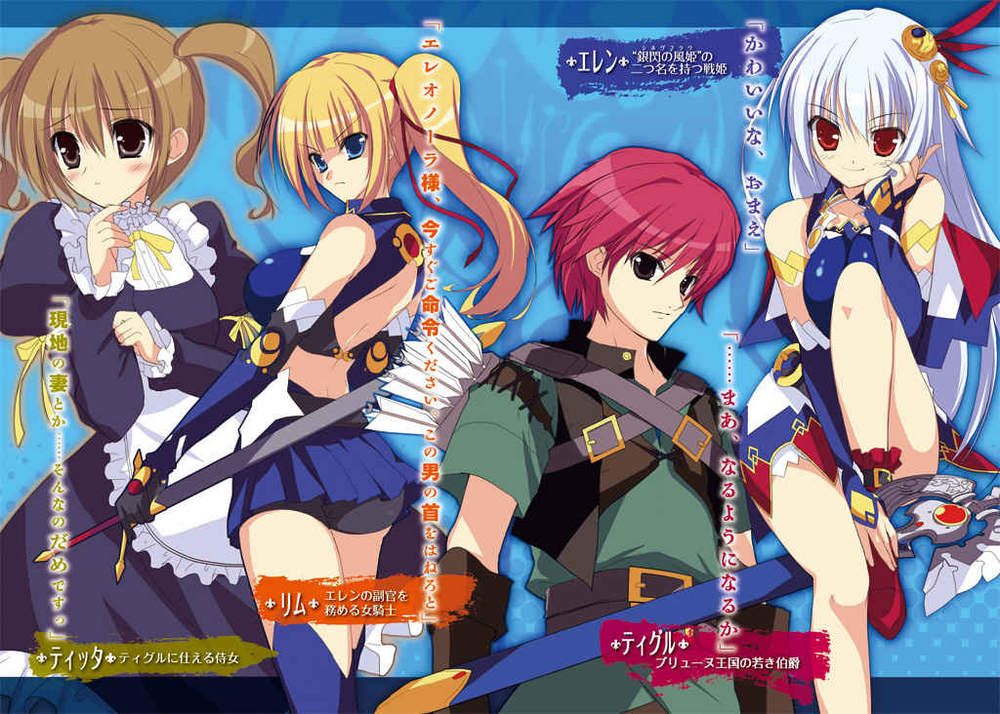
ＭＦ文庫Ｊ
魔弾の王と 戦姫
（立ち読み版）
川口士
口絵・本文イラスト● よし☆ ヲ
長剣の切っ先を、突きつけられている。
剣を持っているのは、美しい少女だ。腰まで届く銀色の髪が印象的で、馬上から涼しげな 眼 差 しで少年を見下ろしていた。
「弓を捨てろ」
少年は素直に、手にしている弓を地面に置く。
抵抗する気はない。もう矢も尽きていた。
周囲には無数の死体が転がっている。折れた剣や 槍 がさながら墓標のように突き立ち、吹く風には血の 臭 いが濃い。
「私はエレオノーラ＝ ヴィルターリア。おまえは？」
その血の臭いを吹き消すような、少女の 爽 やかな 声 音 。
凛 とした、それでいて明るさも 備 えた不思議な 紅 の 瞳 。
少年は戸惑いながらも問いかけに答えた。
「......ティグルヴルムド＝ ヴォルン」
さらにいくつかのことを聞いて、よろしいと彼女は剣を腰の 鞘 に納める。
少年に、にこりと 微笑 みかけた。
「おまえはいまから私のものだ」
１ 戦姫との 遭 遇
「ティグル様」
聞き慣れた少女の声とともに 身体 をゆすられる。
窓の外が明るいので、朝がきたのはわかっていた。
だけど、まだ眠い。
「もう少し......あとほんの少しだけ」
「もう少しっていつまでですか？」
「今日は狩りの予定もないし、昼になるまで......」
「いいかげんに起きてください！」
一 喝 。
毛布をはぎとられ、ティグルは肩をつかまれて乱暴に身体を起こされる。
目をあけると、怒りをたぎらせた少女の真っ赤な顔が間近にあった。
怒ってもいまいち迫力のない 童 顔 。 栗 色 の髪はツインテール。小柄な身体を包む服は黒の 長 袖 と足元までのスカート、 清 潔 感 のある白いエプロンという 侍 女 のそれだ。
「ああ......おはよう、ティッタ」
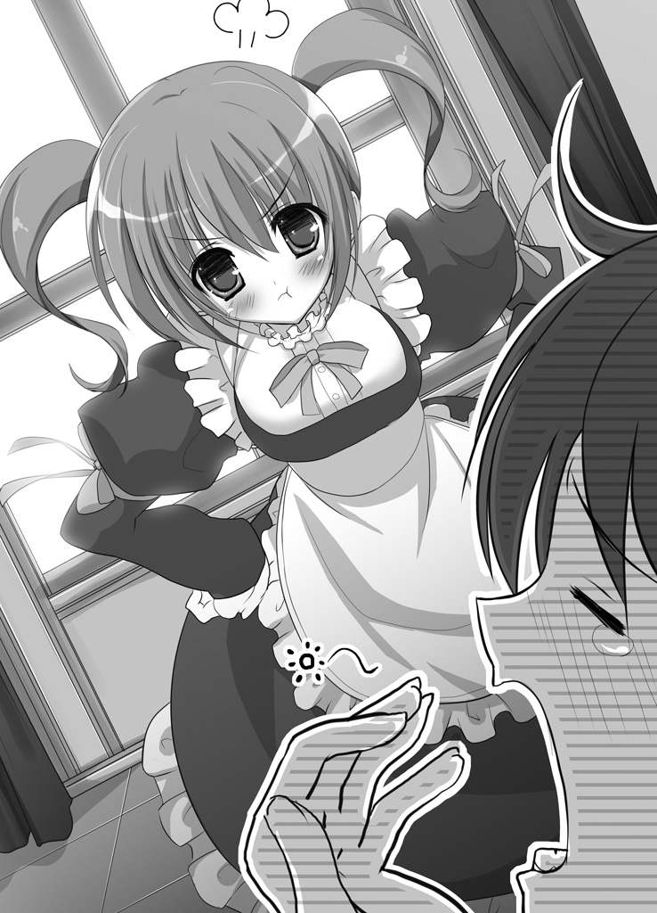
眠気の抜けていない間延びした声で、ティグルはひとつ年下の 侍 女 の名前を呼んだ。とりあえず目を覚ましたらしいとわかってティッタは手を離す。
「兵士のひとたちはとっくに用意を終えて、ティグル様をお待ちしていますよ！」
ティグルはぼんやりと、彼女の言葉を頭の中で何度か繰り返した。
その顔から、一気に血の気が引く。
「......しまった！」
転げ落ちるようにベッドから出ると、ティッタがたたまれた服をさしだした。彼女の足元には、水を張った小さな 桶 がおかれている。
「ありがとう。いつもながら用意がいいな」
「こうなるんじゃないかと思っていましたから。あたしはお食事のご用意をしてきます。お顔を洗ってこれを着たら、おいでくださいな」
怒りをおさめ、ティッタは明るく笑って一礼すると、スカートをひるがえして小走りに部屋を去る。
顔を洗うと気分がすっきりして、ティグルはようやく完全に目を覚ました。服を羽織って部屋を飛びだし、廊下を走りながらボタンを留める。
「時間がないけど......すっぽかすわけにはいかないか」
まっすぐ食堂へと向かいたかったが、その前にティグルは廊下のつきあたりにある小さな部屋へと足を運んだ。
大人が三人も入れば座ることさえままならない小さな部屋だ。正面には立派な装飾をほどこされた台があり、 一 張 の弓がたてかけられている。
弦 はしっかり張られていて、その気になればいますぐにでも使えるようになっていた。
その弓の特徴を一言でいうならば、黒い。
ゆるやかな湾曲を描いた 握 りも、 弓 弦 も、 艶 のない黒。
暗 闇 から弓の形を切りとってできたといわれても納得してしまいそうなほどだ。
――これを見ていると、息苦しさを感じるんだよな......。
どこか異様な雰囲気を帯びたこの弓は、 狩人 だった先祖が使っていたといわれるヴォルン家の家宝だ。
ティグルの父は、この弓について次のような 遺 言 を残した。
「おまえが真にこの弓を必要としたときのみ、使え。それ以外で用いてはならぬ」
父の遺言と、弓から感じるなんともいえない薄気味悪さから、ティグルは先祖に対する敬意を忘れずとも、これにはできるだけさわらないようにしてきた。
姿勢を正し、呼吸を整えて、ティグルは胸の前で 握 り 拳 をつくって横に引く。代々の先祖に対する礼だ。
それをすませて静かに廊下へ出ると、ティグルはいそいで食堂へと向かった。
ティグルヴルムド＝ ヴォルンは十六歳。ブリューヌ王国の 伯 爵 家に生まれ、二年前に父を病で 亡 くして家を 継 いだ。
ややおおげさな響きの名前は伯爵の地位を得た先祖からとったものだが、長いのと 仰 々 しく感じたのとで、親しい者にはティグルと呼んでもらっている。
ティグルが食堂に入ると、甘くて香ばしい 匂 いが鼻をつんとついた。
素 朴 なつくりのテーブルに、ハムを入れた卵焼きやライ麦のパン、ミルク、 茸 のスープなどが並び、湯気をたちのぼらせている。
テーブルのそばにはティッタが 控 えていた。
「スープだけでいいよ」
「だめです」
こと食事のこととなると、ティッタは 頑 としてゆずらない。
「みんなの前でおなかが鳴ったりしてもいいんですか。みっともないですよ」
両手を腰にあてて、まっすぐティグルを 見 据 えるさまは、とても 侍 女 とは思えない迫力に満ちている。さきほど起こしにきたときよりも怖い。
勝てないことがわかっているのでティグルはあっさり降参した。
パンをミルクで流しこみ、皿を持ちあげて卵焼きをかきこんで、あっというまにスープをたいらげる。
「ごちそうさま」
言葉と同時に立ちあがると、手にナプキンやらブラシやらを用意したティッタが歩いてきた。
「あとが残るので、ちゃんと 拭 いてくださいな」
少し怒ったように言って、ティグルの口元をナプキンで 拭 う。
「それに 寝 癖 もついてます」
それからブラシを持った手をのばし、くすんだ赤い髪を丁寧に 撫 でつけた。
「ほら、 襟 も曲がってるじゃないですか」
ブラシとナプキンをテーブルに置いて、彼女はティグルの襟に手をもっていく。ティグルはされるがままだ。
「――ティグル様」
「どうした？」
急にティッタの声が弱々しいものになり、ティグルは優しく声をかけた。ひとつ年下の彼女を、ティグルは妹のように思っている。
「どうして、ティグル様が 戦 へ出なければならないんですか」
ティグルは少しだけ困った顔になった。くすんだ赤い髪をいじる。ティッタにはときどき、わかりきっていることを言ってティグルを困らせるところがあった。
「国王陛下の召集だ。ブリューヌ王国の 伯 爵 ヴォルン家の当主としては当然だろう」
「で、でも」
泣きそうな顔でティグルを見上げ、ティッタは言い 募 る。
「うちは兵士を百人そろえるのもやっとなぐらいですし......」
貴族だ伯爵だといっても、ぴんきりだ。
そして、ヴォルン家は貧乏とはいわないまでも、質素とかつつましいという言葉が似合う 類 の貴族だった。
領土であるこのアルサスは中央から遠く離れた 田舎 で、小さいうえに森や山が多く、収入はすくない。
ティグル自身の生活も、貴族という言葉からイメージされる 豪 奢 、豪勢といったものにはほど遠い。
屋敷がそれほど大きくないとはいえ、家事 一 切 をこなしているのがティッタひとりだけという時点でうかがいしれるというものだ。
「それに、敵はジスタート王国だって聞きました。だったら、ティグル様はここにいるべきじゃないですか。このアルサスから山ひとつ越えればジスタートなんですから」
「そうは言うが、ここはどがつくほどの田舎だからな。ジスタートだってこんなところには攻めてこないさ」
ティグルとしては、戦場にならない方がよほどありがたい。
「そ、それに......ティグル様の弓だって、 馬 鹿 にされているじゃないですか」
「 武 勲 をたてるのは無理だろうな」
「武勲なんてどうでもいいです！」
ティッタは大声をあげ、すがりつくようにティグルの胸に顔をうずめた。
「ただ......無理をして 怪 我 などなさらないよう、どうか無事に帰ってきてください」
自分の身を案じてくれる 侍 女 の 華 奢 な 身体 を、ティグルはそっと抱きしめる。
「心配するな。二年前の 初 陣 でも、 俺 は五体満足で帰ってきただろう」
「あのときはまだウルス様が......」
いらっしゃいました、という言葉をティッタはのみこんだ。ウルスは二年前に 亡 くなったティグルの父だ。
ティッタを安心させるように、ティグルは彼女の頭をぽんと 叩 く。
「今度の 戦 では、俺の部隊は後方に配置されることが決まっている。安全な場所だ。何かあっても、まあなんとかするさ」
こぼれかけた涙を指で 拭 ってやると、はいとティッタはうなずいた。
「よ、よろしいですか、ティグル様。いつもと同じ感覚で、戦場で寝坊したりしないでくださいね」
「その言いかただと 俺 がいつも寝坊してるみたいじゃないか」
「事実です。ティグル様がちゃんと起きられるのは、狩りの日だけじゃないですか」
憮 然 とした反応にティグルは反論を封じられた。
それでも、ティッタが精一杯自分を 励 ましてくれているのがわかって、ティグルは彼女をもう一度抱きしめる。
ティッタも 力 を抜いてティグルに 身体 を預けた。
服を通して彼女のぬくもりが伝わり、 栗 色 の髪からかすかに甘い 匂 いが香った。
もっと長くこうしていたかったが、そうもいかない。
名残 を 惜 しみつつ、ティグルは彼女の身体をそっと離した。
「留守をたのむよ、ティッタ」
ごしごしと 袖 で涙を 拭 い、ティッタも笑顔を浮かべた。
「おまかせください。ティグル様もお気をつけて」
ティグルが弓と 矢 筒 を背負って屋敷を出ると、兵士たちはすでに整列して待っていた。
革 鎧 を着た小柄な老人が進みでて、ティグルに頭をさげる。
「若。全員そろっとります。装備もばっちりですわ」
「ご苦労、バートラン」
この老人はティグルの 側 仕 えだ。若いティグルよりも 戦 の経験が豊富で、この中で馬を 駆 ることができるのは、ティグルを除けば彼だけである。
他 の者はすべて、 槍 を持ち、剣を帯びて革鎧で武装した歩兵だ。
「よく集まってくれた」
ティグルがねぎらいの言葉をかけると、古参の兵たちは 陽 気 に軽口をたたいた。
「領主さま、気にすることはありませんや。戦は三年ぶりですが、畑仕事は毎日ですんで身体はばっちりでさ」
「国王陛下の命令に逆らうのは、うちのかかあに逆らうのとおなじぐらいおっかねえんでしょう？ なら仕方ありますめえ」
「そう言ってもらえるとありがたい。ついでに、おまえの奥さんに来てもらえないか？ 敵兵の千や二千ぐらい、怒鳴りつけて追いはらってくれそうだ」
兵たちの間から、どっと笑いがわきおこる。
「それはやめときましょうや、若。こいつのかみさんは敵も味方もおかまいなしですわ」
バートランがまぜっ返し、ティグルは肩をすくめることで話を終わらせた。
――士気は問題なさそうだな。
笑いの渦がおさまるのを待って、ティグルはあらためて敬礼を行う。バートランの引いてきた馬にまたがり、右手をかかげて号令を発した。
「我々の目的地はディナント平原だ。途中でマスハス 卿 の軍と合流する」
歩兵たちが軍旗をかかげる。
旗は二種類。青地に白い半月と流星を描いたヴォルン家のものと、 紅馬旗 ――黒いたてがみに赤い 体 躯 を持つ聖馬を描いたブリューヌ王国の象徴とだ。
「それでは出立する！」
ブリューヌ王国と、その東のジスタート王国が 刃 を 交 えるのは実に二十数年ぶりのことだった。
争いの原因は、国境線となっている川が大雨で増水し、 氾 濫 を起こしたことだ。
まず、被害を受けた住民たちが「あいつらが川の管理をまともにしないから」とおたがいに非を押しつけあって、いさかいを起こした。
次 いで、 陳 情 を受けた国も「そちらの治水対策に問題があった」と言いはって譲らず、双方の軍に 出 征 を 強 いることになったのだった。
しかし、それだけならティグルが 戦 に 駆 りだされることはなかっただろう。
「敵軍およそ五千に対して、こっちは二万五千以上か。心 躍 る話じゃのう、まったく」
ティグルの隣で皮肉げに吐きすてたのは、マスハス＝ ローダントという初老の 騎 士 だ。
マスハスはティグルの父の友人で、ティグルになにくれとなく世話を焼いてくれた恩人でもある。
「王子殿下の 初 陣 だから、という話は本当なのですか？」
馬をならべて進ませながら、ティグルはマスハスにたずねた。
「事実じゃろうな。国王陛下が王子殿下を 溺 愛 されているのは、 誰 もが知っておる」
ずんぐりとした体躯を鉄の 甲 冑 で包み、マスハスは不機嫌そうな顔で灰色の 髭 を 撫 でている。
「今度の戦はこどもの 喧 嘩 に親が渋々出てきたようなもので、国家の命運をかけた一大事というほどのものではない。そういう意味では、殿下――レグナス王子の初陣を飾るには......経験を積んでいただくにはちょうどいいものじゃが」
愛する息子の初陣を、華々しく飾ってやりたかったのだろう。
国王は、王国直属の騎士団だけでなく、戦場となるディナント平原に近い領土を治めている貴族たちにも出兵を命じたのだ。
ティグルやマスハスのような小貴族にさえも。
そうしてできあがった軍勢が、二万五千以上。
マスハスの 率 いている兵は三百弱。内、騎兵は五十ほど。
それなりのものだが、二万五千という数の中では完全に埋没してしまう。ティグルとあつかいがまったく変わらず、後方に配置されるのもそのためだ。
「敵より多くの兵をそろえるのは 戦 の常道です。それに、レグナス王子はいずれ国王となられる 御 方 。陛下のなさりようは間違ってはいないでしょう」
なぐさめるように、ティグルは老 騎 士 の肩をたたく。
いまの言葉は自分にも言い聞かせていることだった。そう思わなければやっていられないというのが本音だ。
「そうじゃな、わしらのような小貴族は後方でおとなしくしておればいい。勝てる戦だと踏んで、ここぞとばかりに 武 勲 をもとめ、前衛をつとめたがる者の多いことよ......そういえばティグル。 戦 姫 を知っておるか」
思いだしたように聞かれ、ティグルは首をかしげる。
「ジスタートの七戦姫のことですか？」
「そう、それよ。敵の指揮官は、その戦姫のひとりらしいぞ。十六という若さながら常勝無敗。剣士としても優れており、常に先頭に立って剣を振るうさまから『 銀閃の風姫 』や『 剣の舞姫 』などと呼ばれ恐れられておる」
ジスタート王国はひとりの王と、七人の戦姫によって構成されている。
王国の中に七つの公国があり、それぞれを、戦姫と呼ばれる女性が治めているのだ。
―― 俺 と同い年か。
ティグルはまだ見ぬ敵将に、妙に感心してしまった。自分とおなじ年齢で、女性だというのに戦と勝利を積みあげ、五千もの軍勢を率いているという。
ティグルの生まれそだったブリューヌ王国では、女性の騎士は大貴族の 令 嬢 であるなどよほどのことがなければ認められない。
今度の戦でも、女性の騎士などこちらにはひとりもいない。
それもあって興味がわいた。
「その戦姫はなんという名前なのですか」
「たしか、エレオノーラ＝ ヴィルターリアといったの。たぐいまれな 美 貌 の持ち主だそうじゃ。隣に宝石を置いたら、宝石の方が 色 褪 せて見えたという話があるほどでな」
「それほどの美人なんですか」
「美女と聞いて心 躍 らせるのはよいが、ほどほどにしておけよ。ティッタが 妬 くぞ」
灰色の 髭 を震わせてマスハスは笑い、ティグルはむっとした。
「どうしてそこでティッタが出てくるんです。あれは妹みたいなもので――」
「小さな 頃 から、だらしのない兄としっかり者の妹のようだと言われておったな」
その通りなので、ティグルはぐうの音も出ない。くすんだ赤い髪をかきまわして、話を変えた。
「 戦 姫 が話どおりの名将だとしたら、この 戦 は厳しいものになるでしょうね」
「とはいえ、さすがに数が違いすぎる。いかな戦の達人といえど、どうにもなるまい」
戦姫の武勇や才がどれほどのものであれ、五倍もの差をくつがえせるはずがない。
そうですね、とティグルは同意しようとして、言葉がうまく出てこなかった。
何か、いやな予感がするのだ。首筋のあたりがちりちりと焼けるような感覚。
ティグルは以前にもこんな感覚に襲われたことがあった。
森の奥で狩りをしていていつのまにか 狼 の群れの中にいたときや、山の中で竜と 遭 遇 してしまったとき。
朝早く目が覚めたと思ったら隠しようもないほどに 股 間 が 覚 醒 しており、そこにティッタがいつものように起こしにきたとき。
とにかく、たいていろくでもないことが起こる。
「浮かない顔じゃな」
顔に出ていたらしく、マスハスが 怪 訝 そうな顔で 覗 きこんできた。
「何か思うところでもあるのか？ 能天気なおぬしらしくない」
「能天気って...... 他 に言いようがあると思いますが。 泰 然 自 若 とか」
ティグルが不満そうに言うと、マスハスは目を細めて笑った。
「小難しい言葉を使って無理にかっこうをつけんでもよい。わしはいまでもしっかり覚えておるぞ。二年前、おぬしがウルスの後を 継 いだ日のことを」
「 俺 、何か言いましたか？」
「町や村の代表たちを前に、今後のアルサスをどうするのかと聞かれて『まあ、なんとかやっていきます』はなかろうが。あれを能天気といわずしてなんという」
ティグルは何も言い返せず、肩をすくめた。
マスハスの 繰 り 言 はまだ続く。
「生前のウルスはおぬしのことを、のんびりとしたおだやかな気性だの、楽観的なものの見方は悪いことではないだの、よく眠るのは健康にいいだのと 褒 めておったが、まったくもって親のひいき目じゃったわ」
「でも、俺なりになんとかやっていってるという自負はありますよ？」
マスハスの言葉が途切れるのを待って、ようやくティグルは言い返した。
実際、アルサス全体で特に問題は起きていない。
蓄 えも徐々にだが増えているし、かつて能天気な 挨 拶 とやらに 唖 然 とした町や村の代表たちとも、いまはそれなりにうまくつきあっている。
「狩りの日以外に、自力で起きられるか？ ティッタの助けを借りずに」
「......いえ、それはその」
「これもティッタから聞いたことじゃが......二、三日ほど余裕ができると、弓矢を持って近くの森や山へすっ飛んでいくそうじゃのう。狩りをしに」
ティグルは無言で肩を縮めた。何ひとつ反論できない。
「とはいえ、まあ、領主としてやるべきことはやっておるようじゃな。あやつらの顔を見ればわかる」
後ろを 振 り 返 って、マスハスは肩越しに兵たちを見た。
後方に配置されることがわかっているので戦意にはとぼしいが、不平不満をあらわにしている者はいない。
「ティグル。わしらの役目は兵たちを無事に帰らせることじゃ。どう戦うかを考えたりすることではない。何を気に病んでおるのかはわからんが、どんとかまえておれ」
「ありがとうございます」
マスハスの気遣いに、ティグルは笑顔をつくって礼を述べた。
彼の言うとおり、あれこれ思いをめぐらせても無駄だろう。
虚 しいことだが、王子に 箔 をつけるためだけに自分たちは集められたのだ。
戦力としてはまったく期待されていないし、そんな部隊の進言を受けいれるような人物の心当たりは、ティグルにもマスハスにもない。
数日後、ティグルたちはディナントに到着した。
主戦闘を務める前衛二万は丘のふもとに布陣する。レグナス王子のいる本隊を含めた後衛五千は丘の上に待機した。ティグルやマスハスは後衛だ。
戦わずにすむことも、ありえたはずだった。
◎
夜明け前の暗い空の下を、一千の騎兵が静かに進軍している。
剣や 槍 の穂先は光らないよう土で汚し、馬の口には板を 噛 ませ、 馬 蹄 は綿入りの布で包むという用心深さだ。
そうして彼らは敵に気づかれることなく、小高い丘のそばまでやってきた。
なだらかな斜面を上った先には敵――ブリューヌ軍の後衛が夜営をしている。 篝 火 の炎がちろちろと踊っていた。
「――休息。準備せよ」
騎兵たちの先頭に立っている銀色の髪の少女が、薄く笑った。兵たちはその言葉に従って休息をとり、馬の口から板をはずし、馬蹄から布を取り去る。
やがて、 放 っていた 斥 候 が戻ってきた。
敵は寝静まっており気づいていないとの報告に、少女は騎兵たちを 振 り 返 る。腰の長剣を抜き 放 ち、高々と掲げた。長剣の周囲にかすかな風が吹く。
「目の前の敵はおよそ五千。我々の実に五倍だ。後衛とはいえ、総指揮官のいる本陣はさすがに 精 鋭 で固めているだろう」
だが、と少女は 紅 の 瞳 を戦意で満たして続ける。
「私は行く。そして勝つ。おまえたちはついてくるか？」
騎兵たちは無言で、剣や 槍 を空に向かって突きあげた。
少女は敵のいる方角に向き直り、馬を走らせながら鋭く剣を振りおろした。
「突撃せよ！」
軍旗がひるがえる。 黒竜旗 ―― 漆 黒 の竜を描いたジスタート王国の旗が。
空気がごうっと流れだす。騎兵たちは手に剣や槍をかまえ、あるいは弓に矢をつがえながら、少女に続いて丘を 駆 け上った。
地鳴りのような 馬 蹄 の 轟 きに、見張りの兵たちもようやく敵襲に気がつく。
だが、もう遅い。
「敵――」
少女が剣を 一 閃 させると、兵の首が悲鳴ではなく 血 飛沫 をあげて飛んだ。
徐々に白みはじめた空を背景に、少女の 率 いる一千の騎兵が敵陣を 蹂 躙 する。ブリューヌ軍は大混乱に 陥 った。 狼 狽 のあまり武器を捨てて逃げだす部隊まで現れる。
果 敢 に抵抗する兵もいたが、勢いが違う。
しかも、ジスタート軍の先頭に立って剣を振るう少女の強さは圧倒的だった。
群がる敵をことごとく一撃で 斬 り捨て、あるいは馬蹄で 容 赦 なく 蹴 散 らす。それでいながら、血の一滴も浴びることがない。
長剣が風を 唸 らせるたび、地面に転がる死体がひとつ、またひとつと増えていく。
白銀の髪をなびかせて少女は敵陣を突き進み、 一 塊 となった騎兵たちが続いた。
この時点で、ほとんど勝敗は決していた。
◎
耳鳴りがする。
いくつもの悲鳴、断末魔の叫び、馬蹄の轟きと 剣 戟 のひびきが耳を蹂躙している。
「......ぅぁ」
目が覚めた。
視界に広がるのは吸いこまれそうな青空。
自分にのしかかっているものをおしのけて、ティグルは 身体 を起こした。
耳鳴りが消えると、聞こえるのは風の音とそれにかき消されそうなかすかなうめき声。折れた軍旗の小さなはためきと、 踏 み 潰 されるのをまぬがれた草のざわめき。
土ぼこりが地面を 這 い、血の 臭 いが鼻をつく。
「気を失っていたのか......」
よろよろと立ち上がり、首をめぐらせれば見渡すかぎり死体の山。
草を血で染めて、大地を埋めつくさんばかりに数百、数千もの死体が転がっていた。
吐き気をおぼえて口元に手をやると、ぬるりとした感触とともに手が赤く染まる。
――血......？
顔から頭までをなでまわすが、傷らしいものはない。
「 他 のだれかの血か」
ティグルはどうやらいくつかの死体に埋もれていたらしかった。敵の目にとまらなかったのもそのためだろう。
「バートラン！ マスハス 卿 ！」
信頼する部下や親しい老 騎 士 の名を呼んだが、返事はない。
自分に従ってきた兵士たちの名も呼んでみたが、やはり反応はなかった。
「逃げてくれたならいいんだが」
どこを向いても死体ばかりだ。その合間に剣や折れた 槍 、打ち壊された軍旗が捨てられている。
遠くは 朝 靄 に包まれてよくわからないが、少なくとも見える範囲では動いている者はいなかった。味方も、敵も。
敵に対する怒りは 湧 かなかった。それ以上に 疲 労 感 が全身に重くのしかかって、口からため息がこぼれる。
「ひどい 戦 だった......」
夜明けとほぼ同時に、ブリューヌ軍は背後から奇襲をうけたのだ。混乱したところに正面からも攻めたてられて、二万五千もの大軍はあっけなく 瓦 解 してしまった。
――昨日の日が暮れる前、我が軍は正面に敵がいることを確認している。つまり、ジスタートは部隊を二つにわけて、一方でまず後衛を襲い、それにあわせて正面からも攻撃してきたんだ。
ぞくりと、ティグルは背筋が寒くなるのを感じた。
策としては単純だ。こどもでも考えつくぐらいに。
――恐ろしいのは、五倍の敵に対してそれを平気で実行してしまう精神だ。
敵よりはるかに少ない兵を、さらにわけようというのだ。よほどうまく動かさなければあっけなく撃破されてしまう。兵の反発だって少なくないだろう。
――だけど、見事に成功した。
ブリューヌ軍は総崩れとなった。
浮き足立って 潰 走 する味方の波に押し流され、ティグルはまともに指揮がとれなくなって落馬し、気絶してしまったのだ。
ティグルの部隊は味方にやられたようなものだった。
「それにしても......」
ティグルは思いだす。敵軍の先頭に立って長剣を振るい、ブリューヌ兵を次々に 斬 り伏せていた白銀の髪の少女を。ほとんど一瞬しか見えなかったが。
「あれが 戦 姫 なのかな」
戦姫は常に陣頭に立つ、というマスハスの言葉を思いだす。
きれいだったという場違いな感想が浮かんで、ティグルは反省するようにくすんだ赤い髪をかきまわした。
幸い、自分の弓はすぐそばに落ちていた。
拾いあげて、わずかな緊張と不安に襲われながらも 弓 弦 を 弾 いてみる。
「......問題ないな」
ほっと胸を 撫 でおろす。もし弓が曲がっていたり、 弦 が 緩 んでいたりしたら使い物にならなくなるところだった。
矢 筒 の中の矢も、何本か残っている。
空を見あげて、ティグルは太陽の位置で方角をたしかめた。
「あっちが西か」
この戦場から東へ向かえばジスタート。西へいけばブリューヌだ。
身体 中 に走る痛みをこらえ、のろのろと西へ向かって歩きだしたティグルは、視界の 端 に動くものを認めて足を止めた。
一騎の 騎 士 が、剣を振りかざしてこちらへ 駆 けてくる。
ティグルは弓をかまえ、矢を一本引き抜いた。
騎士は地面に転がる死体を 馬 蹄 で 蹴 りとばし、踏みつけながらティグルへと迫る。ふたりの距離が三十アルシン（約三十メートル）まで縮まったとき、騎士が 吼 えた。
「まだブリューヌの生き残りがいたか。その首もらったぞ！」
ティグルは黙って矢をつがえ、無造作にも見える動作で 放 つ。
大気がぶれた。
鈍 い音がしたときには、騎士の 喉 を正確に矢が 射 抜 いている。
驚くべき速さであり、冷静さだった。
まったく反応できなかった騎士の身体がぐらりとかたむいて、どうと地面に倒れる。
騎手を失った馬は甲高いいななきをあげて、ティグルが止める間もなく 彼方 へと走りさってしまった。
「まいったな......うまくはいかないもんだ」
ため息をこぼす。馬があれば、楽に戦場を脱することができると思ったのだが。
とぼとぼとティグルは歩みを再開したが、十歩といかない内に再び歩みをとめた。
「敵か？」
三百アルシン（約三百メートル）先に、 騎 士 の一団が見える。見つかれば、すぐに追いつかれてしまうだろう。
「......七人もいる」
ティグルは生まれつき目がよい。その視力は狩りによってさらに鍛えられ、三百アルシンの距離までなら、ひとの顔を見分けることもできるほどだ。
矢 筒 の中身をたしかめる。残りは四本。
弓には自信があるが、 一 矢 でふたりを 射 倒 すことはさすがにできない。さきほどのように 容 赦 なく 斬 りかかってこられたら、どうしようもない。
――味方であってくれ。
そう願いながら、ティグルは騎士たちを観察する。先頭の騎士を目にしたとき、おもわず目を 瞠 った。
「 戦 姫 ......」
奇襲を受けたあのとき、ジスタート軍の先頭に立っていた少女だった。
ティグルは呼吸すら忘れるほど、彼女に 見 惚 れた。
自分と同い年くらいの若い娘で、朝の陽光を反射してきらめく白銀の髪は 甲 冑 の外、腰まで届き、 紅 の 瞳 には明るさと 凛 々 しさが輝いていた。
甲冑からのびた腕は年齢相応を思わせる 華 奢 さで、しかし、その手に 握 られた長剣は不思議と似合っている。
――マスハス 卿 はたぐいまれなる 美 貌 の持ち主と言っていたけど。
そのとおりだった、というべきか。たぐいまれなる、どころではないというべきか。
こうしてじっくり見れば見るほど、なるほどと 唸 らされてしまう。
そこで、ようやくティグルは我に返った。雑念を追いだすように頭を振ると、冷徹な視線で戦姫たちを 見 据 える。
他 の騎士たちは護衛なのだろう。彼女を守るように馬を進めている。
――戦姫を倒せば......。
自軍の惨敗はもはや 覆 しようがない。いまは逃げまどうブリューヌ兵にたいして大規模な追撃戦がおこなわれているはずだ。
「......でも、彼女が倒れれば追撃戦どころじゃなくなる」
マスハスやバートラン、アルサスから従ってきた兵たちが生きのびていたら、彼らの助かる確率ははるかに上がる。
闘争心が 湧 きあがってくる。弓を 握 る手に 力 が入る。
「やってやる」
ティグルは矢を一本引き抜くと、弓につがえる。
弦 を引き 絞 った。無意識に、神の名を唱える。
「風と 嵐 の女神エリスよ......」
きりりと弦のきしむ音が 鼓 膜 をくすぐった。
現在の大陸では、弓の最大射程は二百五十アルシン（約二百五十メートル）といわれている。
この数字はあくまで、どこまで飛ぶか、をはかったものだ。
狙 った相手に傷を負わせるつもりならば、数字はもっと低く見積る必要がある。
戦 姫 たちはまだ三百アルシン（約三百メートル）ほど先にいる。
にもかかわらず、ティグルは矢を 放 った。
矢はひゅうと風を切って飛び、戦姫のそばにいた 騎 士 の馬、その頭部に深く突きたつ。
馬が横転して騎士が地上に投げだされたときには、ティグルは二本目を放っていた。
それはやはり、別の騎士の馬の 眉 間 を 射 抜 く。
「よし」
ふたりの護衛が倒れたことで、ようやく道ができた。
銀色の髪と 紅 の 瞳 をした戦姫。彼女に矢を届かせる 隙 間 を、つくることができた。
「ここからが本番だ」
ティグルは 矢 筒 に手をのばす。呼吸が重く、熱い。
陽の 射 さない山奥で、体長四十チェート（約四メートル）以上の 地竜 と 対 峙 したときでさえ、ここまで緊張はしなかったのではないだろうか。
―― 他 の騎士たちが彼女を守ろうとしても、絶命した馬と、落馬した騎士が彼らの動きを邪魔する。それらを 迂 回 しようとすれば時間がかかる。
それは本当にごくわずかな時間。
だが、ティグルにとってはそれで充分だ。
――この状況で彼女がとる行動は、馬首に身を伏せるか、おもいきって落馬するかのどちらかしかない。
左右は護衛にはさまれて動けず、数歩の後退は意味がない。正面には倒れた部下と馬がある。それを助走もなしに乗りこえるのはむずかしい。馬がいやがる。
できたとしても、跳躍から着地、そして矢から隠れるまでには 隙 ができる。
そこであらためて 戦 姫 を 見 据 えたティグルは、突然、猛烈な寒気におそわれた。
笑ったのだ。戦姫が。
あきらかに自分を見て。楽しそうに。
「くっ」
ティグルは歯をくいしばる。いま、自分はあきらかに、彼女に 呑 まれかけていた。
残りの矢を二本とも抜き取る。一本を口にくわえ、もう一本を弓につがえた。
しかし、そこでティグルは信じがたい光景を目にする。
戦姫の乗った馬が、ふわりと飛んだのだ。
倒れた部下たちのはるか上を。
その高さは、二十チェート（約二メートル）はあっただろうか。
まるで馬の背に翼が生えて、羽ばたいたとしかティグルには思えなかった。跳躍などというものではない。 飛 翔 といっていい。
「何だ、いまのは......？」
戦 慄 と恐怖が、ティグルの全身を 駆 けぬける。自分の目がおかしくなったのかとすら思った。
ひとを乗せている馬が、助走もなしに二十チェートもの高さを跳べるはずがない。
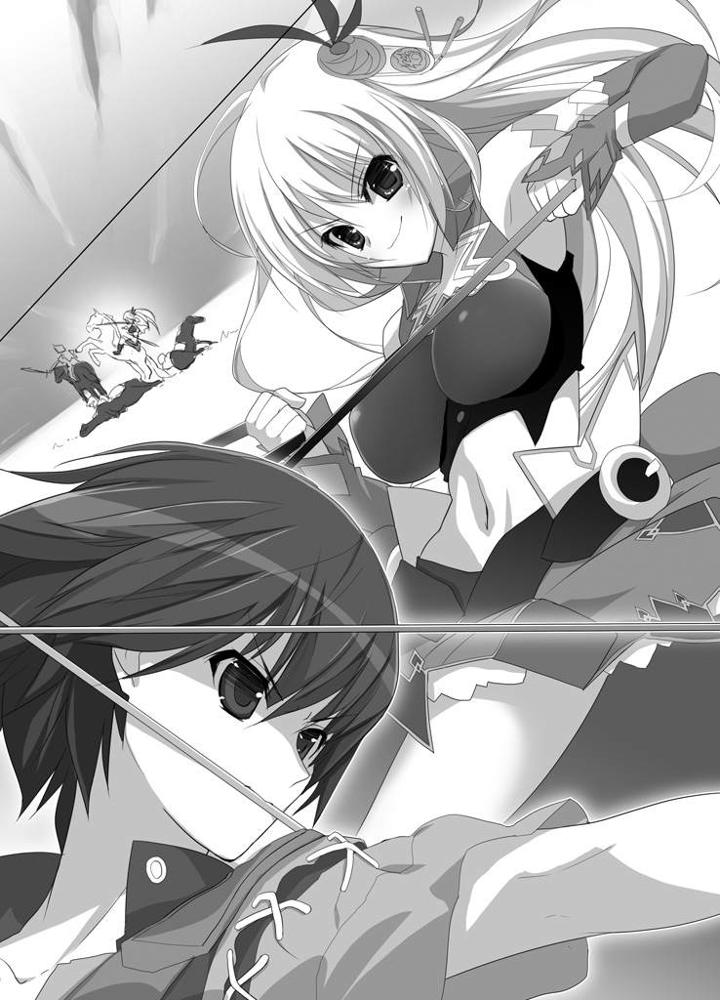
しかし、 戦 姫 はなにごともなかったかのように着地し、こちらへ向かってまっすぐに馬を走らせてくる。
――おびえるな......！
自分を 叱 咤 する。いまのは何かの見間違いだ。
ティグルは彼女を 睨 みつけ、第三矢を 放 った。
矢は風に乗り、大気を裂いて空を走る。彼女の 額 へと吸いこまれていき――白銀の 閃 光 に打ち落とされた。
「...... 嘘 だろう？」
ティグルは目を 瞠 る。口の 端 が引きつった。
数百アルシンの 彼方 から高速で飛来する矢を、剣で打ち落とす。
そんなことができるのは、 武勲詩 に出てくるような伝説の勇者やら英雄やらだけだ。並の人間にできることではない。
最後の矢をつがえる。
弓にだけは、絶対の自信がある。ましてや相手はこちらへまっすぐ向かってきており、その位置はすでに三百アルシンを切っている。
――外すわけにはいかない。
矢はさきほどと同じく彼女の額を正確に 狙 い――同じように 弾 かれた。
その間、戦姫の 駆 る馬は一瞬たりとも脚を 緩 めず、猛然と走ってくる。あと十秒ほどでここにたどりつくだろう。
「ここまでか」
矢は尽きた。 他 に武器はなく、徒歩ではどうやっても馬からは逃げられない。
ティグルは弓を 握 りしめて、両足に 力 をこめてまっすぐ立つ。見苦しいふるまいはしたくなかった。
戦姫はティグルの前まで来ると、馬を止める。
血煙や 砂 塵 をよせつけない白銀の髪。
故郷の山に降り積もる万年雪を想起させる白い肌。
すっきりとした 輪 郭 、やや高く形の整った鼻、うるおいを帯びたあでやかな 唇 は最高級の彫刻を思わせるが、生命力にあふれる 紅 の 瞳 が、彼女が生身の人間あることをなにより強く印象づけている。
彼女は長剣の切っ先をティグルに突きつけた。
「弓を捨てろ」
仕方なく言われたとおりにする。戦姫は満足そうにうなずき、笑顔で言った。
「いい 技 量 をしているな」
それが自分に向けられた言葉だと、ティグルはすぐにはわからなかった。
―― 褒 められた......？ 自分を 狙 った人間なのに？
嬉 しさよりも戸惑いが 優 る。
「私はエレオノーラ＝ ヴィルターリア。おまえは？」
「......ティグルヴルムド＝ ヴォルン」
「貴族か？ 爵 位 は？」
ブリューヌやジスタートをふくめた諸国では爵位名がそのまま姓となる。わずかな例外をのぞいて貴族以外が姓を持つことはない。
伯 爵 だと答えると、彼女の笑顔はますます嬉しそうなものになった。
「よろしい。ヴォルン伯爵」
長剣を腰の 鞘 におさめながら、エレオノーラは明るく告げた。
「おまえはいまから私の 捕 虜 だ」
思いもかけない言葉にあっけにとられていると、彼女の護衛たちがようやく追いついてきた。
彼らはティグルを取り囲んで剣や 槍 を突きつけたが、エレオノーラが手をふると、意外そうな反応をしめしながらも武器を引く。
「リム、おまえの後ろにこいつを乗せてやれ。私の 捕 虜 だ。多少は手荒にあつかってもかまわないが、 大 怪 我 はさせるな」
リムと呼ばれた 騎 士 は黙ってうなずいた。頭部全体を覆う 兜 をつけているので、どのような表情をしているのかティグルにはわからない。
「早く乗りなさい」
リムはティグルを見下ろして、兜の奥から低い声を発した。声が怒りを帯びているのを感じとったティグルは、すぐにその理由を 悟 った。
ついさっき、自分が落馬させた騎士だった。
―― 他 の騎士から馬を借りたのか？ だとすれば、護衛のなかでも偉い方なのか。
「弓を拾っていいか？」
ティグルは自分が地面に 放 った弓をゆびさして聞いた。
「大事なものなんだ」
空の 矢 筒 も見せて敵意のないことをしめす。リムは馬上から手をのばした。
「いいでしょう。ただし、私があずかります」
ティグルはリムに弓をわたすと、後ろに乗る。腰に手をまわした。
いきなりリムは首をそらす。兜の後部がティグルの顔面をしたたかに打った。
「何をするんだ」
赤くなった鼻をおさえてティグルは抗議する。エレオノーラが肩を震わせて笑った。
「リム、そいつは一応私の捕虜だ。もうすこしやさしくしてやれ」
「...... 御 意 」
その声にはあきらかに不満がにじみでていたが、リムは従った。
「妙な動きをしたら、即座に振り落として 馬 蹄 で踏み砕くので、そのつもりで」
ティグルはため息をついた。リムの自分に対する怒りのすさまじさにもだが、胸中に広がっていく未来への不安をおさえようがない。
騎 士 たちを 振 り 返 って、エレオノーラは意気揚々と告げた。
「つまらない 戦 だったが、最後になかなか楽しめた。――では、撤収する」
ディナント平原の会戦は、ジスタート王国の一方的な勝利で幕を閉じた。
ジスタートの被害は百に満たなかったのに対し、ブリューヌは五千を超える死者と、その倍以上の負傷者を生んだ。
これだけにとどまらず、ブリューヌは何をもってしても埋めがたい損失を 被 っていた。
総指揮官であり、次期国王と目されていたレグナス王子の戦死である。
２ ライトメリッツ
夢を見ている。ろくでもない夢だ。
小さな丘の上に、自分たちの部隊はいる。
いまは食事の時間だ。兵たちは土を盛って固めた炉に、 桶 のような 深 鍋 をかけて魚肉のシチューをつくっていた。
ゆるやかな 稜 線 を降りていった先には、起伏のないディナント平原が広がっている。
そこには二万のブリューヌ軍がいて、自分たちと同じように食事をとっていた。数千もの湯気がたちのぼり、兵たちはあたかも蒸気につつまれているように見えた。
ティグルとマスハスが鍋をかきまぜながら話していると、数人の若者たちが 甲 冑 を鳴らしながら姿を現す。
「おまえも来たのか。ヴォルン」
あからさまに 嘲 る口調で声をかけてきたのは、ザイアン＝ テナルディエだ。
テナルディエ家は公爵で、ヴォルン家などとは比べものにならない古くからの名門だ。親族に有力な貴族を数多くかかえ、所有する領土は広く、総動員できる兵は最大で一万に達するといわれる。
今度の 戦 でも、四千もの大軍を 率 いてはせ参じていた。
ザイアンはそのテナルディエ家の長男であり、次期当主だった。現在十七歳。
美 々 しい装飾の 甲 冑 を着こみ、立派な造りの剣を腰に帯びて格好をつけているが、その表情に浮かんでいるのは他者を見下すことに慣れた 不 遜 さだ。
彼の後ろには取り巻きの若者たちがつき従っていた。
ザイアンと同じく公爵や侯爵といった大貴族の生まれで、家紋の刻まれたきらびやかな 鎧 を身につけ、にやにや笑いながらティグルを眺めていた。
ティグルとしては無視することもできず、やむを得ず最低限の礼儀をしめす。
「......陛下の臣として忠節を尽くすべく、 馳 せ 参 じた次第です」
「 殊 勝 なもの言いだが、おまえごときが何の役に立つというんだ」
嘲 笑 に、 他 の貴族たちの笑い声がかさなった。年齢が近いからか、ザイアンはこうしてティグルに突っかかってくることがたびたびあった。
「前にも言ったが、四、五代前は 狩人 なんぞをやっていた家の者など、貴族として認めんからな」
吐き捨てて、地面に置いてあったティグルの弓を踏みつける。
ティグルの動きはほとんど反射的なものだった。獣をおもわせる俊敏な動きで弓をつかみあげる。
「うあっ」
足をすくわれてバランスを崩し、ザイアンは取り巻きたちを巻きこんで派手に転んだ。
「ザイアン様に何をする、貴様！」
激 昂 し、つばを飛ばして 吼 える取り巻きたちに、ティグルも大声で怒鳴り返す。
「弓が曲がったらどうする気だ！」
「弓？ 弓がどうしたってんだ、この 臆 病 者 が！」
「そうだ。そんなものが壊れたところで、何を困ることがある。剣をとって前に出ればいいだけの話だろうが！」
「貴様のような者には、戦神トリグラフも加護をお与えにならんだろうよ！」
他の者たちも賛同の声をあげ、ティグルは 歯 噛 みした。
ここでは――ブリューヌ王国では、彼らの言い分が正しい。
「弓は、 白 刃 の前に身をさらす勇気をもたぬ臆病者の武器だ」
ブリューヌ軍には昔からそうした考えが根強くあり、弓を 軽 んじた。
弓兵の功績は一段低く見られるのならばまだいい方で、評価の対象にすらならないということがほとんどだ。
「弓兵は、 徴 兵 した狩人、または自分の土地を持たない農民。兵士の中からは重い罪を犯したことのある者、剣および 槍 の技量について際だって劣る者から選ぶべし」
そのような基準があるほどで、正規の兵でありながら弓を使う者は「罪人と 罵 られるか 下 手 糞 と 侮 られるか選べ」ということになる。
武 勲 をたてて 伯 爵 位 と現在の領地をいただいたティグルの先祖は 狩人 だったのだが、マスハスは「狩人でなかったら、もっと高く評価されていただろう」とぼやいたものだ。
「落ち着け、おまえたち」
助けを借りてようやく立ちあがったザイアンが、取り巻きたちを制した。
仕方なくといった感じながらも、ティグルを責める声は 止 む。
甲 冑 についた土ぼこりをわざとらしくはらい、ザイアンは腕を組んでティグルをせせら笑った。
「おまえが弓にこだわる理由は、剣も 槍 も 扱 えないからだろう？ 弓を持って戦場にいれば、とりあえず戦士のふりができるなどとあさましいことを考えているのだろうが」
ティグルは黙っている。剣も槍も苦手なのは事実だ。
ここで反論すれば、ザイアンは自分に剣か槍を持たせて振るわせ、その動きを笑いものにするだろう。前に一度、そうしてきたことがあったからだ。
ザイアンの 罵 倒 はつづいている。
「そもそもブリューヌ王国の伯爵たる者が、剣も槍も持たず、 鎧 すら着けないで戦場に 赴 くことを 恥 と思わないのか？ 見ろ、おまえたち。こいつのみすぼらしい格好を。革の鎧に革の 籠 手 、革の 脛 当 てと革尽くしだ。マントはそれなりのようだが、見るべきものがせいぜいそれだけとは。なんとも哀れな 懐 具合だな」
「――ザイアン 卿 」
それまで黙って事態を見守っていたマスハスが、むっつりと口を動かした。
「見事な雄弁ぶりですが、それだけ言葉をつむがれれば、さすがに 喉 がお 渇 きになったのでは。あちらで......」
ゆっくりとある方向を指さし、続ける。
「 葡 萄 酒 を配給しておりますれば、渇きを 癒 されてきてはいかがです」
丁寧でしずかな口調ながら、マスハスの態度には相手をひるませる圧力があった。
今年で五十五になるこの老 騎 士 の 貫 禄 に、ザイアンは 呑 まれた。
おもわず一歩さがってしまい、そのことに気づくとふん、とザイアンは鼻を鳴らし、おおげさな動きでマントをひるがえす。
「行くぞ、おまえたち」
歩き去っていくザイアンたちの後ろ姿を見送り、ティグルは弓の具合をたしかめたあとマスハスに礼を述べた。
「ありがとうございます。おかげで助かりました」
「いやいや。わしの方こそすまなんだの。もっと早く言ってやれればよかったんじゃが、なかなか間がつかめなんだ」
ザイアンから見れば、マスハスもティグルとなんら変わらない小貴族なのだ。
タイミングをはかって口をはさまなければ、同じように鼻で笑われて 罵 声 を浴びせられていたかもしれない。
鍋 をかきまわす作業にもどりながら、マスハスはなにげない動作でまわりをぐるりと見回す。
兵や、 他 の貴族らは、自分たちの鍋に集中したり、武具の手入れをし、あるいは雑談に興じていた。不自然なぐらい、 誰 もこちらを見ようとはしない。
ザイアンを恐れ、ティグルたちにかかわるのを 避 けていた。
「剣や 槍 をあつかえることが、勇気の証明にはならんというのがよくわかるわ」
皮肉を吐き捨てたマスハスに言葉を返そうとして、ティグルは口を閉じる。少し離れたところにかたまっている貴族たちの会話が、聞くとはなしに聞こえてきたのだ。
「そういえば、聞いたか。ガヌロン公爵のこと」
「この 戦 にかこつけて、臨時の税を 徴 収 しているという話か」
「それだ。税をおさめられない家に若い娘がいれば、さらって自分の 館 へと連れ去り、いない場合は罰として家に火をはなつそうだ」
「うらやましいものだ。私にも臨時の税をかける権限があればな」
とくに義憤を感じる様子もなく、その貴族はぼやいた。
ガヌロン公爵は、テナルディエとならぶブリューヌ王国の大貴族だ。
テナルディエ家と同じく 力 のある貴族が親族に幾人もおり、その権力と権勢は、国王でも無視できない。
領土の統治について、ブリューヌの貴族は基本的に自治を認められているのだが、税の設定など、いくつかのことに関しては、国王の許可をとらなければならない。
ガヌロンはそれを堂々と破り、そればかりか領民に非道をはたらいているようだが、国王は黙認しているらしかった。
「そういう話なら、テナルディエ公も負けておらんぞ。なんでも、この戦が終わるまで、神々への誓約として、 一 切 の酒を領民に禁じ、ことごとく供出させたそうだからな」
「ほう。しかし、酒なら隠し持ったり、新たにつくったりできよう。禁を破った者の家はどうなる？」
「若い娘がいれば連れ去るという点はガヌロン公と同じだが、こちらは見せしめとして、父と子、あるいは夫と妻にそれぞれ剣をもたせ、殺しあいをさせているらしい。どちらが勝つかの 賭 けもやっているそうだ」
聞こえてくる彼らの会話にティグルは 拳 を 握 りしめた。
立ちあがりかけた 膝 の上に、マスハスの硬い、しわだらけの手がおかれる。
「落ち着け」
「何を、落ち着けというのです」
「 酷 な言いかたになるが、おまえが何かを言ってもどうにもならんじゃろう」
その通りだった。ティグルはその場に座りなおしたが、腹の底には怒りが煮えたぎっている。
怒鳴りたくなる気分を、歯を食いしばって必死におさえた。
領民を人間と思っていないようなガヌロンやテナルディエに怒り、彼らの 暴 虐 について周囲をはばかることもなく、その内容に感情をたかぶらせるでもなく話している彼らに怒り、そして、何もできないだろう自分に対して怒りと無力感をおぼえた。
「いまの話は、本当なのですか？」
「 噂 じゃが......似たような噂はいくつもあるし、当人たちは否定せん。おまえは中央にあまり出てこないゆえ、知らなかったじゃろうが」
仕方がないのかもしれなかった。
ティグルは自分の領土であるアルサスから出たことなど、ほとんどない。
出世欲や野心もないので、自分と縁もゆかりもない貴族に興味を持ったこともない。
ザイアンのことも、顔をあわせたくない大貴族の息子としか見ていなかった。
「陛下が、黙認されているというのも......？」
（続きはご購入のうえ、お楽しみください。）
著者
川口士 （かわぐち・つかさ）
１９７９年生まれ。２００６年、第18 回富士見ファンタジア長編小説大賞にて『戦鬼』で大賞を受賞。
その後、いろいろなところでいろいろ書く。
ＭＦ文庫Ｊからは本作が第一冊目ですが、僕の著作としてはこれでちょうど20 冊目だったりします。ひゃっほー。
イラスト
よし☆ ヲ （よし☆ を）
☆ *。．・*♡ ♡ ♡ *・．。*☆
12 月24 日生まれAB がた
あまいものダイスキッス☆
ねこがだいすき♡
毎日ねこちゃんと
にゃんにゃんしたいんにゃん！
ラブニャーン☆
（^ ^）
^）
東京にお引越ししたのす
大都会っすなぁ（^
^;）
☆ *゜゜゜* *゜゜゜* *゜゜゜*☆
【ＭＦ文庫Ｊ】夏の学園祭２０１３ アニメ化決定一気読み!!
魔法戦争
著者名......スズキヒサシ
星刻の竜騎士
著者名......瑞智士記
ノーゲーム・ノーライフ
著者名......榎宮祐
精霊使いの剣舞
著者名......志瑞祐
魔弾の王と戦姫
著者名......川口士
発行者......三坂泰二
発行所......株式会社メディアファクトリー
http://www.mediafactory.co.jp/
２０１３年７月29 日 電子書籍版 ver.1.0.1
無断で複製・複写・放送・データ配信などをすることは、かたくお断りいたします。
©2013 Hisashi Suzuki
©2013 Shiki Mizuchi
©2013 Yuu Kamiya
©2013 Yu Shimizu
©2013 Tsukasa Kawaguchi